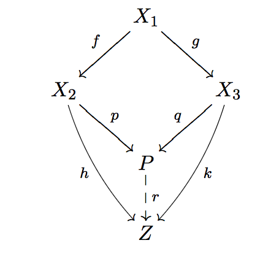
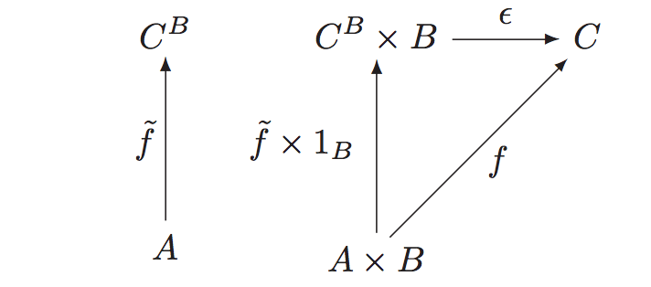
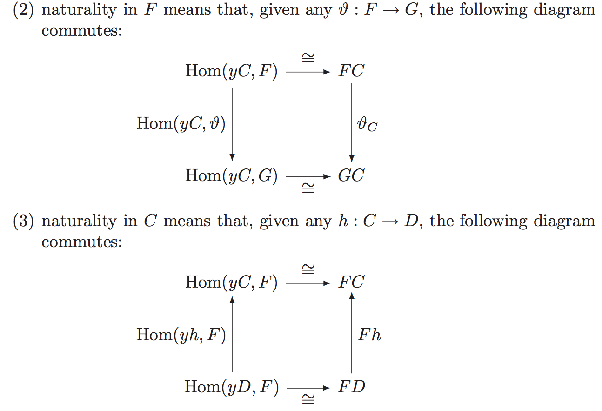
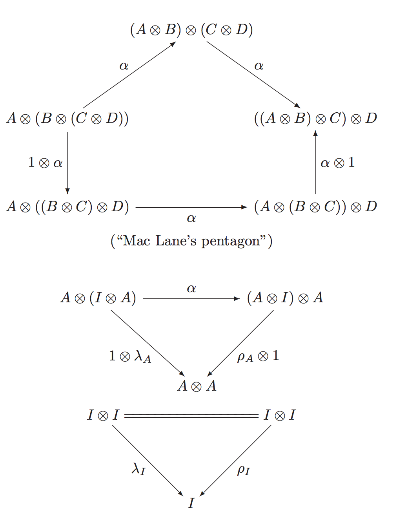
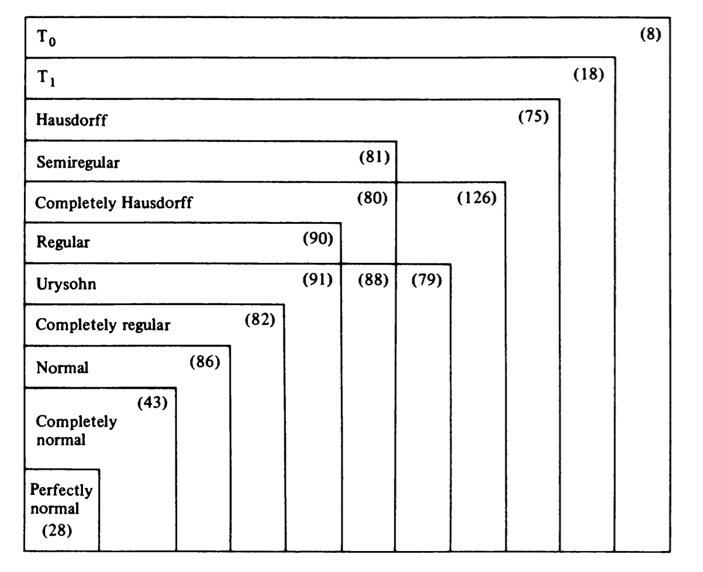
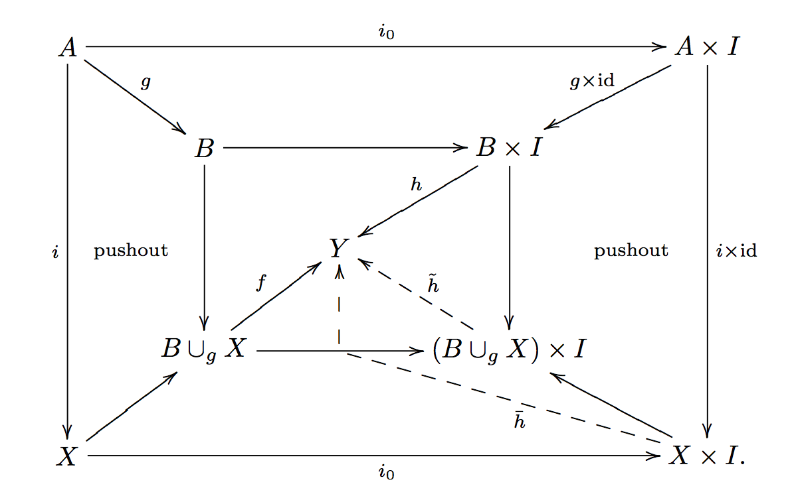

meta note
- we organize by category when possible, or by topic and structure
*informal things*- we do not write linearly, but we implicitly keep a linear construction of all mathematics, though it is better we make it explicit
- using itemize
- “parent requires parts” or
class parent { def child } - “so we can define child of parent”
class parent { def child = ? } - “as parent defined, we can define child”
def child = ? - “from parent we can get”
class parent { def child = ? }ordef child = ? - “child is a kind/instance of parent” or
class extends parent/object extends parent - “under these conditions”
parent -> child
- “parent requires parts” or
i will one day do all my math learning in a proof assistant!!! must
THERE IS NO MATIC, AND THERE IS ACTUALLY NOTHING
IF YOU DO NOT UNDERSTAND, THAT’S OK, DO EXERCISES
FINISH OR DIE: MAY
meta mathematics
top
i think the best state of doing mathematics is always have the big picture in background, but in the same time, always solving details and problems, thus making real progress
give the conjectures their full meaning
i feel my learning mathematics is just like a “guided tour”, actually i do not know why guided like this. thinking how G create mathematics single handed. i think i am just lame
about mathematical experience. mathematics is elegant, if you do not think something natural, you do not understand it. remember when you understand group action
personal learning
weakness
- group operation
- proofs about complex category
about stupidity
- though i think i have a fake relief for fundamental problems. i still feel unable to do some math. but… they are just manipulation of symbols!… actually they are not, you will not go too far with this kind of thinking. read the book, and understand. find more materials, read a lot of material to get insight is the only method to learn some math for stupid me
resources
pages on problem solving
- http://terrytao.wordpress.com/career-advice/solving-mathematical-problems/
- http://terrytao.wordpress.com/career-advice/there%E2%80%99s-more-to-mathematics-than-grades-and-exams-and-methods/
- http://terrytao.wordpress.com/2010/10/21/245a-problem-solving-strategies/
- https://plus.google.com/u/0/114134834346472219368/posts/Xdm8eiPLWZp
- The point is that even if the technique is doomed to fail, the precise point in the argument at which it fails can be very instructive, as it can delineate what portion of the problem can be handled
- http://terrytao.wordpress.com/career-advice/ask-yourself-dumb-questions-%E2%80%93-and-answer-them/
- Don’t just read it; fight it! Ask your own questions, look for your own examples, discover your own proofs. Is the hypothesis necessary? Is the converse true? What happens in the classical special case? What about the degenerate cases? Where does the proof use the hypothesis?
courses to be done
- http://math.stanford.edu/~ionel/143/143hw-w13.html
- http://math.stanford.edu/~schoen/math144
- http://math.stanford.edu/~conrad/145Page/handouts.html
- http://math.stanford.edu/~randrade/teaching/old/2012-2013/146
- http://math.stanford.edu/~lhhuang/147/
- http://math.stanford.edu/~randrade/teaching/old/2012-2013/148
- http://math.stanford.edu/~conrad/154Page
- and more
- i think in the graduate courses of Stanford, there are Analysis * 2, Algebra * 2, Geometry * 3, Algebraic Geometry * 3, MATH 243 Several Complex Variables, MATH 244 Riemann Surfaces, MATH 245 Topics in Algebraic Geometry * 3. this is about the picture
booklists
- a list on Amazon
- mathematical physics
- great articles and books
- link, link,
- ag
- at
- yhbkj
- ag
dao
proofing
- how to proof? it is sufficient to make sure you can write all rigid sentences. you can omitted the writing, but you should always make sure you can freely think rigidly. only idea is not enough
- mathematical truth can be discovered just as experimental science, we try examples see the result, make a conjuncture, and proof it
- i want to solve problems http://en.wikipedia.org/wiki/List_of_unsolved_problems_in_mathematics
- fully see what you have get. use the tools at hand. it might do not directly leads you to the solution, but anyway use it!
- see the logic of the problem. assume the solution, and see why it works, or what’s wrong with it
- recent thoughts on how to learn
- back in time i am a formalist, i learn things and in the end i found that i need to learn algebra
- and i think it is important
- but today after reading Atiyah’s article and what Huajie said, i think i should learn more geometry
- but the thing is, you must learn abstract algebra and analysis first, then you can learn some geometry..
- so finish Lang’s analysis really quick!!!
- another important thing is, about exercises
- best: to work the whole book out
- second choice: do the exercises
- on proofing
- you can just go and proof it
- a skim is nothing
- so proof or keep, or read && understand
- as we know axiomatic method is not enough, so do study examples, and often example produce theory
patterns
- we define a “from”, found “characteristic”, sometimes cardinal characteristic, and sometimes we have multiple definition for just cardinal 0, cardinal 1, cardinal finite, cardinal infinite (consider local ring, a ring has only 1 maximal ideal; consider cyclic group, a group generated by one). i should really pay attention to them
- the definition should be abstract, so you can see what’s essential in it, but must with examples, so you can feel what it is about. when proofing things, feel free to rely on your concrete examples, but always check it is rigid by abstract definitions
- define in right place!! it is like a software engineering problem the problem of mathematical foundation, we should found a better foundation, which has no trivial questions at all
mental
- doing mathematics is like exploring a very different universe
- it is always helpful to view the picture of mathematics as static, there are no such thing \(x+y\), it is just an element. for example, finite addition is always well defined, because we can write finitely. but it is not infinite addition. we should rely on a map from \({\mathbb{N}}\) to the group, then show how the addtion is performed and ended
- actually proofing like Coq is good. for example, every ideal is an principle ideal should really be a function
ideal(p) -> principle(p)so it reminds us to find a ideal that do not instantly an principle and use this function to convince that it is an principle - they said the Grothendieck do not solve problems, he found out a comfort space to the problem to stay at, but even working out the details is hard for me. is he had some intuition for abstraction???
- in view of “all theorems proofed is trivial”, the most important thing about machine proofed theorem is the softwares we used to proof them, so we can ask more questions
- It’s like a new toaster that comes with a 16-page manual. If you already understand toasters and if the toaster looks like previous toasters you’ve encountered, you might just plug it in and see if it works, rather than first reading all the details in the manual.
- i wish someday i can read the posts in this blog
- the reason that we construct so many constructions is that we concrete our proof process by making them actually shown before your eyes, by constructions
- i still feel abstract… i study rings, modules, but can hardly find enough examples of ring or module… i know that’s a tensor product, but can hardly know what it looks like, i cannot make mathematics into me… feeling sad. as CY said, after studying a subject, you should be able to write down all things you have meet
- i feel that every time i use Zorn’s lemma, i feel a little more depressed, because i am out of the world where mathematical entities lives
- what is good mathematics? i suddenly have a feeling that mathematics is no longer interesting anymore… why?
- so what is mathematics? it is know more about the mathematical world
intuition
- why we are constantly consulting our intuition about space, if as Atiyah said, mathematics is the study of “special” and “temporal”, then this actually makes sense
more
nothing
type
idea
- i want to take homotopy type theory as the foundation of mathematics, it is a good idea, but no one knows exactly how to do it now. but nonetheless i will present ideas in it. it should be understand that, all mathematics we do now will have a good old foundation in ZFC set theory, as long as we ignore the issues with categories. so basically when we finished type theory, set theory, and category theory, we should have our formalism in mind
informal notes about mathematical logic and foundation
- why there are independent theorems? it can be true, can be not true, but has no impact on us. in other words, logic is just a tool. basically we
- considering mathematics questions and answers as a a list of strings, then we are in 4 kind of situation. this is just a asymmetric, and Godel’s result states that there is always the situation.
- we proof/ disproof it
- we proofed that we cannot proof
- we do not know if we can proof it or not i do not study mathematical logic, i just pick a certain foundation i like, but some issues must be addressed. these are some ideas that i partially understand, to comfort me
- “Mathematicians do not study objects, but the relations between objects; to them it is a matter of indifference if these objects are replaced by others, provided that the relations do not change. Matter does not engage their attention, they are interested by form alone.”
- how to proof CH do not entail ZFC? we construct a model of ZFC, such that nCH is true. and how to proof nCH do not entail ZFC? we construct a model of ZFC such that CH is true, then certainly nCH do not entail from ZFC. but how to proof. because we are constructing model in ZFC, so if ZFC is consistent, then we know that we can logically deduce to CH or nCH. a axiomatic system is consistent if it has a model, so we know that both ZFC + CH and ZFC + nCH is consistent (if ZFC is)
- so most mathematics we study is just a very tiny fraction of the mathematical universe (ZFC). but when we ask basic questions about the big picture (ZFC). it often happens that we cannot know it at all. the thing is think the model – ZFC, \({\mathbb{Z}}\) – group. as long as we approach the bottom of our logic. we found a similar situation as we are in group: is group commutative? we found that kind of question unanswerable, just as asking is CH true for all models of sets
- but… only if ZFC is consistent
- a thought experiment. as all model of ZFC is constructed inside ZFC, can we add a axiom: if a model of itself has a proposition independent…. is this self-reference impossible?
- is our universe un-understandable? actually if i have reached a point such that no-contradiction happens, i will just be happy, because scientific falsehood is ensured by experiment, but scientific truth is not… if there is a “incompleteness theorem” for the universe. we reached here or not will never matter to us, because we will always in a state of waiting for more experiment. though the situation in mathematics is not the same. so i think i have a happy foundation for things i care, but as a mathematical system can never proof it’s consistency, we are actually in the best situation possible no inconsistency have found now in ZFC. i think i will only consider stop learning mathematics when we have proofed something like “no axiomatic system stronger or equal to Peano arithmetic is consistent”
type theory
- type theory
- context \(x_1: A_1, x_2: A_2,\dots, x_n:A_n\)
- \({\text{ctx}}\)-EMP \(\frac{}{\cdot {\text{ctx}}}\)
- \({\text{ctx}}\)-EXT \(\frac{\Gamma\vdash A_n: {\mathcal{U}}_i}{(\Gamma, A_n: {\mathcal{U}}_i){\text{ctx}}}\)
- judgment
- \(\Gamma {\text{ctx}}\)
- \(\Gamma\vdash a: A\)
- \(\Gamma a\equiv a': A\)
- structural rule
- inference rule this is not definition, actually all rules for types is independently defined, but share a common structure
- type rule
- introduction rule
- elimination rule
- computation rule
- derivation
- type they are higher groupoids
- universe
- \({\mathcal{U}}\)-INTRO \(\frac{\Gamma {\text{ctx}}}{\Gamma\vdash {\mathcal{U}}_i: {\mathcal{U}}_{i+1}}\)
- \({\mathcal{U}}\)-CUMUL \(\frac{\Gamma\vdash A: {\mathcal{U}}_i}{\Gamma\vdash A: U_{i+1}}\)
- universe polymorphism we use this trick to do justify why we are not using explicit universe level when doing informally. or how weak we are
- function
- \(\Pi\)-FORM \(\frac{\Gamma\vdash A:{\mathcal{U}}_i\quad \Gamma, x: A\vdash B:{\mathcal{U}}_i}{\Gamma\vdash \Pi_{x:A}B:{\mathcal{U}}_i}\)
- \(\Pi\)-INTRO \(\frac{\Gamma, x:A\vdash b:B}{\Gamma\vdash \lambda (x: A). b: \Pi_{x: A}B}\)
- \(\Pi\)-ELIM \(\frac{\Gamma\vdash f: \Pi_{x:A}B\quad \Gamma\vdash a: A}{ \Gamma\vdash f(a): B[a/x]}\)
- \(\Pi\)-COMP \(\frac{\Gamma, x:A\vdash b:B\quad \Gamma\vdash a:A}{\Gamma\vdash (\lambda(x:A).b)(a)\equiv b[a/x]: B[a/x]}\)
- \(\Pi\)-UNIQ
- you can think there are bunch of primitives, especially induction rules will confirm certain function exists, but actually the semantics is defined inside the theory
- apply \({\text{ap}}: (f: A\to B) \to (x=_A y)\to (f(x) =_B f(y))\) exists, and \({\text{ap}}(f, {\text{refl}}_x)\equiv {\text{refl}}_{f(x)}\). by path induction. so function is actually functors, required by \(J\). think like this, all primitives for inductive type will require you to respect equality, and when defining functions, we actually is always invoking a bunch of primitives, so…
- identity type
- \(=\)-INTRO \({\text{refl}}\)
- \(=\)-ELIM
- \(=\)-COMP \(J\)
open problemhow to \(J\) compute with univalence axiom?- \((x = y)\to (y = z)\to (x = z)\) exists, and \({\text{refl}}_x\cdot{\text{refl}}_x \equiv {\text{refl}}_x\)
- higher inductive type
- universe
- univalence axiom
- context \(x_1: A_1, x_2: A_2,\dots, x_n:A_n\)
basic types
- (-1)-type \({\text{isProp}}\doteq (P: {\mathcal{U}}) \to (x, y: P)\to (x = y)\)
- \((P:{\mathcal{U}})\to {\text{isProp}}(P)\to {\text{isSet}}(P)\)
fix me - \((A:{\mathcal{U}})\to {\text{isProp}}({\text{isProp}}(P))\)
- \((A:{\mathcal{U}})\to {\text{isProp}}({\text{isSet}}(A))\)
- subtype \(P\) is type family of proposition then, \(\{x: A| P(x)\}\doteq \sum_{x:A} P(x)\), it is well defined for if \(x = y\) then \((x, p_x) = (y, p_y)\)
- subuniverses \({\text{Set}}_{\mathcal{U}}\doteq \{s: U| {\text{isSet}}(s)\}\), \({\text{Prop}}_{\mathcal{U}}\), \({\text{Set}}_{{\mathcal{U}}_i}\to {\text{Set}}_{{\mathcal{U}}_{i+1}}\) is not equivalence
- exclude in the middle \((P:{\text{Prop}}_{\mathcal{U}}, a: P)\to (a + \lnot a)\)
- propositional truncation for all type \(A\) we have \(\|A\|\), and if \(x:A\) then \(|a|:\|A\|\) and \(x, y: \|A\|\) then \(x = y\)
- axiom of choice \((X: {\text{Set}}, Y: X\to {\text{Set}}_{\mathcal{U}})\to (\coprod _{x:X}\|Y(x)\|\to \|\coprod_{x:X} Y(x)\|)\)
- \((P:{\mathcal{U}})\to {\text{isProp}}(P)\to {\text{isSet}}(P)\)
- contractible type \(\sum_{x: A}\coprod_{x:A}(a = x)\)
- 0-type \({\text{isSet}}\doteq A: U_i\to (x, y: A)\to (p,q: x = y)\to (p = q)\)
- natural number \({\mathbb{N}}\doteq (0: {\mathbb{N}}, s: {\mathbb{N}}\to {\mathbb{N}})\)
some universal definition
which i do not know where to put, they should be basic types, but i do not want to form them in types, just in sets now
- law of composition we define here. because usually they are used in classical sense, it is just map \(S_1\times S_2\to S_3\)
- associative \(abc = a(bc)\)
- you can insert any parentheses
- commutative \(ab = ba\) it seems then we must have \(S_1 = S_2 = S_3\)?
- idempotent \(x^2 = x\)
- example of non-associative loc: \(-\) for integer
- associative \(abc = a(bc)\)
- relation \(A\times A\to P\) where \(P\) is a proposition. we do not use boolean because a proposition is either inhabited or not, and contains more informations
- equivalence relation
- transitive \(a \sim b\land b\sim c{\Rightarrow}a\sim c\)
- reflective \(a \sim a\)
- symmetric \(a\sim b{\Rightarrow}b\sim a\)
- equivalence relation
what if we are using a proof assistant?
i always feel messy, so i write informal notes now
package mathematics {
package basic {
package example of basic types {
// we have universe polymorphism, so usually you should not worry about this, in this example, the two u is actually not the same one
define universe: u = u
// the simplest function definable now
define function00 (a: u): u = a
// you can leave out the return type when it can be inferred
define function01 (a: u) = a
// you can write parameters like this
define function02 (a, b: u) (c: u) = b
// or use lambda explicitly
define function03 = lambda (a: u) => a
// function apply
define function04 (a, b: u) (f: a -> b) (x: a) = f a
// implicit arguments
define function05 {a, b: u} (f: a -> b) (x: a) = f a
// compose
define compose {a, b, c: u} (f: a -> b) (g: b -> c) = lambda (x: a) => g (f x)
// uniqueness of function type, the two are definitional equal
define uniqueOfFunctionType0 (a, b: u) (f: a -> b): (f = (lambda (x: a) => f a)) = refl f
// basically you will be guiding the type checker how to write term
define uniqueOfFunctionType1 (a, b, c, d: u) (f: a -> b) (g: b -> c) (h: c -> d): ((compose f (compose g h)) = (compose (compose f g) h)) = refl (compose (compose f g) h)
}
}
}
references
- ref-truth An Introduction to Mathematical Logic and Type Theory
- ref-hott Homotopy Type Theory
- ref-cmu-course http://www.cs.cmu.edu/~rwh/courses/hott
- ref-ias http://uf-ias-2012.wikispaces.com/Higher+Inductive+Types
category
most of time we ignore the foundation issues, but i think it is good to know, if there are any negative impact from the foundation side
basic category
category
- category
- object a set
- think a category kind of subuniverse
- morphism a set of arrows
- domain
- codomain
- identity morphism \(\forall f: A\to B: {\text{id}}_B \circ f = f = f \circ {\text{id}}_A\)
- identity, it is not identity type, it should be refl, isomorphism is identity type
- unique. if one, must be it, if two, \(a= ab = b\)
- \({\Rightarrow}\) idempotent
- for \(lr={\text{id}}\)
- \(l\) is left inverse of split mono \(r\)
- \(r\) is called right inverse of split epi \(l\)
- \(rl\) is idempotent
- isomorphism two morphism such that diagram
id_A A f/g B id_Bcommute. inverse - monomorphism
=-then=. actually a pullback- example of non-split mono, subgroup of simple groups
- epimorphism
-=then=. actually a pushout- quotient object epis \(e, e':A,A'\to B\) identify by \(f: B'\to B\) such that \(e = f\circ e'\)
- endomorphism maps to self
- automorphism endomorphism and isomorphism
- regular morphism \(\exists g: fgf = f\)
- vague definitions, for these definitions to be rigid, we need a certain kind of monomorphism in mind
- subobject class of equivalence relation of monomorphisms (or regular monomorphisms) by factoring though. or we identity \(m, m': B, B'\to A\) iff there is isomorphism \(f: B\to B'\) and \(m= m'\circ f\)
- subobject classifier
- image of \(f: A\to B\) is universal factorization into \(A\to {\text{im }}f\to B\) where \({\text{im }}f\to B\) is a subobject
- coimage
fix me - preimage
- covering regular epimorphism
- cover (usually) covering by coproducts
- associative composition law of morphism so category is also algebraic
- exists identity morphism
- connected category
- filtered category none-empty, for all \(C, D\in {\mathcal{C}}\) there is \(E\in {\mathcal{C}}\) and \(f: C\to E\) and \(g: D\to E\), and there is coequalizer
- object a set
- foundation
- category in set theory
- the metacategory view, if we define them axiomatic, then we are having a method of mathematical language, but they are not objects inside mathematics, for example, we can view all sets as a metacategory
- the universe view, we can make a background universe, and works inside it
- i want to avoid these issues, i do not like them
- in type theory
- it is not good, defined pre-category and category. but at least we do not have to think about small and big category
- category in set theory
category category
- category of category, \({\mathcal{Cat}}\) or all small categories
- object category
- morphism functor preserve identity morphism and law of composition \(F({\text{id}}_x) = {\text{id}}_{F(x)}\), \(F(g\circ f) = F(g) \circ F(f)\)
- it preserve all commuting diagrams
- this is not sufficient, consider a functor maps to a constant and a constant map
- identity morphism identity functor
- isomorphism
- full and faithful if the \({\mathcal{C}}(X, Y)\to{\mathcal{D}}(F(X), F(Y))\) is surjective/injective
- it is not required to be injective/surjective in objects
- for a faithful functor, \(T\), \(T(f){\Rightarrow}f\) for epimorphism and monomorphism. simple diagram chasing
- concrete category and concretizable \(({\mathcal{C}}, U:{\mathcal{C}}\to\mathcal{Set})\) and \(U\) is faithful functor
- example of non concretizable category, homotopy space
fix me: not proof now
- example of non concretizable category, homotopy space
- embedding functor faithful and injective on objects, or injective on morphisms
- monomorphism injective on both object and morphisms
- epimorphism see this paper
- it preserve all commuting diagrams
- law of composition function composition
- equivalence of category Wikipedia. it is two map in \({\mathcal{Cat}}\) such that …
- product (infinite) product category defined pointwize
- product morphism product functor
- bifunctor \(A\times B\to C\) just a functor with domain a product category
- initial empty category \(\mathbb{0}\)
- terminal terminal category \(\mathbb{1}\)
- subobject subcategory, subset of objects and morphisms and is category
fix me: true?- full subcategory
- dual category. contravariant functor
- example: \({\mathcal{Top}}\to \mathcal{Ring}\) take a space \(T\) to the ring of real valued continuous functions on \(T\), then a continuous function between \(X\) and \(Y\) will pull back a function \(a: Y\to{\mathbb{R}}\) to \(b: X\to{\mathbb{R}}\), so contravariant
- comma category \((T\downarrow U)\), \(T:{\mathcal{D}}\to{\mathcal{C}}\), \(U:\mathcal{A}\to{\mathcal{C}}\)
- object \((D, f, A)\), \(f: T(D)\to T(A)\)
- morphism \((f_T, f_U)\in ({\mathcal{D}}, \mathcal{A})\), such that the digram
T(f_T) * f_1 = f_2 * U(f_U)computes
- arrow category \(({\text{Id}}\downarrow {\text{Id}})\)
- slice category \(({\text{Id}}\downarrow x)\)
- product in slice category can be viewed as pullback
- coslice category \((x\downarrow {\text{Id}})\)
- ccc with exponential is functor category \({\mathcal{C}}^{\mathcal{D}}\)
- we proof it is exponential by…
- object functor
- morphism natural transform for \(T,U:{\mathcal{D}}\to{\mathcal{C}}\), \(\tau: {\mathcal{D}}\to (T\downarrow U)\) such that \(P\circ \tau = Q\circ \tau = {\text{Id}}_{\mathcal{D}}\)
- isomorphism natural isomorphism we usually use \(\cong\) as the notation
- if \(\alpha_A\) is isomorphisms, then we have natural isomorphism
- isomorphism natural isomorphism we usually use \(\cong\) as the notation
- law of composition you can see it
horizontal composition
- it is associative by a 4-dim square with identity natural transform
we have interchange law, by construct two squares
universal constructions
- universal arrow initial in comma category \((x\downarrow U:{\mathcal{D}}\to{\mathcal{C}})\), like correlated line and point, and morphism as morphism in \({\mathcal{D}}\)
- please see what’s the object and morphisms in it!, and internalize all symbols
- universal arrow is unique up to isomorphism, so is colimit and so is limit
- colimit for functor \(J:{\mathcal{D}}\to{\mathcal{C}}\) universal arrow from \(J\) to diagonal functor \(\Delta:{\mathcal{C}}\to{\mathcal{C}}^{\mathcal{D}}\). mapping out. the universal arrow is actually a set of arrows, see the picture, so it is left adjoint of \(\Delta\). we use cone to refer to the arrows that commute but not universal
- coproduct. we use coproduct to refer coproduct of any cardinality, and finite coproduct to refer coproduct of finite cardinal
- coequalizer
=<|of any cardinal- regular epimorphism is coequalizer of a pair of morphism. is epimorphism, by dueal regular monomorphism
- cokernel coequalizer of zero arrow
- pushout and wide pushout. we use pushout generally means 2-wide pushout
- 
- for same cardinal, coproduct + coequalizer \({\Rightarrow}\) pushout
- filtered colimit colimit from filtered category
- directed colimit \(\underrightarrow{\lim F}\) is a colimit of upward directed set. sometimes they are called direct limit, wtf…
- sequential colimit from ordinal, sometimes we specially use \(\omega\)
- directed colimit \(\underrightarrow{\lim F}\) is a colimit of upward directed set. sometimes they are called direct limit, wtf…
- cocomplete
- have all (small) colimits
- \({\Leftrightarrow}\) coproduct and binary coequalizer. proof by dual
- limit mapping in. right adjoint of \(\Delta\)
- product points diagram. binary, finite, infinite
- terminal empty diagram. product 0-ary. so when have binary product and terminal, we have all finite product
- product morphism
- \((f'\times g')\circ (f\times g) = f'f\times g'g\). trivial
- \(X\times (Y\times Z)\cong (X\times Y)\times Z\). \(X\times Y\cong Y\times X\). \(X\times 1\cong X\). proof by dual
- of same cardinal, pullback + terminal \({\Rightarrow}\) product
- pullback and wide pullback
- equalizer two point and two morphism diagram
|>=- regular monomorphism is some equalizer of two morphism. it is monomorphism, because the induced univeral arrow is unique
- kernel equalizer of zero arrow
- filtered limit limit from filtered category
- directed limit \(\underleftarrow{\lim F}\) is limit downward direct set. sometime called inverse limit, wtf…
- sequential limit from ordinal, some times we specifically use \(\omega\)
- directed limit \(\underleftarrow{\lim F}\) is limit downward direct set. sometime called inverse limit, wtf…
- complete
- have all limits
- \({\Leftrightarrow}\) product and binary equalizer. notice that we only need binary equalizer, because we can take product by product morphism
- product points diagram. binary, finite, infinite
- null object both initial and terminal
- zero arrow
- functor and limit, for a diagram \(J: I\to {\mathcal{C}}\) and a functor \(F:{\mathcal{C}}\to {\mathcal{D}}\), or for all limit of same type \(J\), we use lim to refer limit/colimit
- preserve colimits. preserve limits lim in domain maps to correspond lim in codomain, with the universal cone
- cocontinuous preserve colimits
- continuous functor preserve limits
- lift limits. lift colimits when \(F\circ J\) has lim, we have a correspond lim and universal cone in domain maps to it
- lift limits uniquely. lift colimits uniquely if the lifted ones is unique
- reflect limits. reflect colimits for a cone in domain, if the image is a lim, then it is lim
- create limits. create colimits \(J\) has lim whenever \(F\circ J\) has lim and preserve and reflect lim. or say that a cone is universal iff the image is universal
- \({\Leftrightarrow}\) lift lim and relect lim
- example
- \(U:{\mathcal{Grp}}\to {\mathcal{Set}}\) create/preserve limits, because it has unique group structure
fix me, but not preserve coproducts - dually the free functor \(F:{\mathcal{Set}}\to {\mathcal{Grp}}\) create/preserve colimits
- \(i: {\mathcal{Ab}}\to {\mathcal{Grp}}\) create limits but do not preserve coproducts
- \(F: {\mathcal{Top}}\to {\mathcal{Set}}\) lift limits and colimits uniquely but create neither
- \(U:{\mathcal{Grp}}\to {\mathcal{Set}}\) create/preserve limits, because it has unique group structure
- preserve colimits. preserve limits lim in domain maps to correspond lim in codomain, with the universal cone
exponential for \({\mathcal{C}}\) with binary product. \(B^C\) and exponential evaluation \(\epsilon: C^B\times B\to C\) such that 
then we have \({\mathcal{C}}(A\times B, C)\cong {\mathcal{C}}(A, C^B)\)
adjunctions
- adjoint from universal arrows for \(U:{\mathcal{D}}\to {\mathcal{C}}\), if every element of \({\mathcal{C}}\) has an universal arrow \(\eta_A: A\to UFA\), then
a reverse functor \(F: {\mathcal{C}}\to {\mathcal{D}}\)
- \(\eta_A\) is natural in \(A\): \(\eta: {\text{Id}}\Rightarrow UF\)
for \(Y\in {\mathcal{D}}\) we have in going universal arrow \(\epsilon_Y: FUY\to Y\) respective to \(F\)
- to proof the universality, we notice that \((g^\flat)^\sharp = g\), we only need to show \(\epsilon_Y\circ Fg^\flat\) is the lift of \(g^\flat\), which is trivial from the universality of \(\eta\), i.e., you map back and verify that it is the lift
- and \(\epsilon_Y\) is natural in \(Y\): \(\epsilon: FU\Rightarrow {\text{Id}}\)
- the reverse is also true
- we have \({\mathcal{D}}(FA, Y)\cong {\mathcal{C}}(A, UY)\) with \(f^\sharp \leftarrow f\) and \(g\rightarrow g^\flat\)
- we have for \(h: A'\to A\) and \(k: Y\to Y'\), \((f\circ h)^\sharp= f^\sharp\circ Fh\) and \((Uk\circ f)^\sharp = k\circ f^\sharp\)
fix me- dually \((k\circ g)^\flat = Uk\circ g^\flat\) and \((g\circ Fh)^\flat = g^\flat \circ h\)
adjuction of category \(F\dashv U\), , \(U\) is right adjoint, \(F\) is left adjoint. having a bijection \(\forall A\in {\mathcal{C}}\forall Y\in {\mathcal{D}}: \varphi_{A, Y}: {\mathcal{D}}(FA, Y)\cong {\mathcal{C}}(A, UY)\) and \(\forall k: Y\to Y': \varphi(k\circ g) = Uk\circ \varphi(g)\) and \(\forall h: A'\to A: \varphi(g\circ Fh)= \varphi(g)\circ h\)

\({\Leftrightarrow}\) \(\eta:{\text{Id}}_{\mathcal{C}}{\Rightarrow}UF\) and \(\epsilon: FU{\Rightarrow}{\text{Id}}_{\mathcal{D}}\) such that the diagram holds
with definitions unit of adjunction \(\eta= \varphi({\text{id}}_F)\), counit of adjunction \(\epsilon =\varphi^{-1}({\text{id}}_U)\), and \(\eta_A: A\to UFA\) universal and \(\varphi(g) = Ug\circ \eta_A\) and \(\epsilon_Y:FUY\to Y\) universal and \(\varphi^{-1}(f) = \epsilon_Y\circ Ff\)
- for any \(f: A\to UY\), we have \(f^\sharp = \varphi^{-1}(f)\) then \(f = Uf^\sharp \circ \varphi({\text{id}}_{FA})\), unique by \(f = Ug\circ \varphi^{-1}({\text{id}}_{FA})= \varphi(g)\). so every element has a universal arrow, so we have it
\(U\epsilon_Y\circ \eta_{UY} = U\epsilon_Y\circ \varphi({\text{id}}_{FUY}) = \varphi(\epsilon_Y) ={\text{id}}_{UY}\)
- notice that a lot of adjoint is actually produced by universal arrows, for example limits and dialogs, and exponentials and products
left adjoint is cocontinuous, right adjoint is continuous functor
fix me
- various adjoints
- reflective subcategory a full subcategory \(i: {\mathcal{D}}{\hookrightarrow}{\mathcal{C}}\) having a left adjoint
cartesian closed category
- distributive category have finite product and finite coproduct and \((A\times C) + (B\times C)\cong (A+B)\times C\)
- cartesian closed category have all finite product and exponentials
- \((\_)^A: {\mathcal{C}}\to {\mathcal{C}}\) is a functor. it is right adjoint of \(\_\times A: {\mathcal{C}}\to {\mathcal{C}}\), so exponential functor is continuous, product functor is cocontinuous
- proof see ref-category-awodey
- or i think adjoint from universal arrows is sufficient
- we have \((X^Y)^Z = (X^Z)^Y = X^{Y\times Z}\), \((X\times Y)^Z = X^Z\times Y^Z\)
- proof using Yoneda principle \({\text{hom}}(X, (A^B)^C) = {\text{hom}}(X\times C, A^B) = {\text{hom}}(X\times C\times B, A)\cong {\text{hom}}(X, A^{A\times C})\), the rest is same
- \(C^{X+Y}\cong C^X\times C^Y\). again using Yoneda principle and contravariant hom-functor make limits to colimits
- \(1^X = 1\), \(X^1 = X\) with \(1\) the terminal
- if it also has coproduct it is distributive category
- proof 1. because product functor having adjoint!!!
- proof 2. using Yoneda principle
- \((\_)^A: {\mathcal{C}}\to {\mathcal{C}}\) is a functor. it is right adjoint of \(\_\times A: {\mathcal{C}}\to {\mathcal{C}}\), so exponential functor is continuous, product functor is cocontinuous
Yoneda lemma
- set valued functor
- presheaf category \({\mathcal{Set}}^{{\mathcal{C}}^{\text{op}}}\), \(Xc\) the variable set. just like right action
- contravariant hom-functor \({\mathcal{C}}(\_, B): {\mathcal{C}}^{\text{op}}\to {\mathcal{Set}}\)
- maps limits to colimits. dual of representable functor
- \({\mathcal{C}}(A, C)\times {\mathcal{C}}(B, C)\cong {\mathcal{C}}(A+B, C)\)
- example see ccc
- the category is complete, and \({\text{ev}}_C: {\mathcal{Set}}^{{\mathcal{C}}^{\text{op}}}\to {\mathcal{Set}}\) preserve all limits
- for \(J\) small and \(F: J\to {\mathcal{Set}}^{{\mathcal{C}}^{\text{op}}}\) a functor, we have
fix me: tired... add them when needed
- for \(J\) small and \(F: J\to {\mathcal{Set}}^{{\mathcal{C}}^{\text{op}}}\) a functor, we have
- contravariant hom-functor \({\mathcal{C}}(\_, B): {\mathcal{C}}^{\text{op}}\to {\mathcal{Set}}\)
- category \({\mathcal{Set}}^{\mathcal{C}}\)
- hom-functor \({\mathcal{C}}(A, \_): {\mathcal{C}}\to{\mathcal{Set}}\)
- representable functor natrual isomorphism to hom-functor
- preserve all limits
- \({\text{hom}}(C, 1) \cong 1\)
- \({\text{hom}}(C, \prod X_i) \cong \prod {\text{hom}}(C, X_i)\)
- preserve equalizer
- simple example: \({\text{hom}}(A, B\times C)\cong {\text{hom}}(A, B)\times {\text{hom}}(A, C)\)
- hom-functor \({\mathcal{C}}(A, \_): {\mathcal{C}}\to{\mathcal{Set}}\)
- presheaf category \({\mathcal{Set}}^{{\mathcal{C}}^{\text{op}}}\), \(Xc\) the variable set. just like right action
- Yoneda embedding \(y_{\mathcal{C}}: {\mathcal{C}}\to {\mathcal{Set}}^{{\mathcal{C}}^{\text{op}}}\) such that \(yC = {\text{hom}}_{\mathcal{C}}(\_, C)\)
Yoneda lemma for all presheaves \(F\), we have \({\mathcal{Set}}^{{\mathcal{C}}^{\text{op}}}(y_{\mathcal{C}}(C), F)\cong FC\), and is natural in \(C\) and \(F\)

the above one is composition of natural transform. proof outline, see ref-category-awodey:
- for all natural transform \(\vartheta\), we define \(x_\vartheta\in FC\)
- for all \(a\in C\) we define \(\vartheta_a\) and show it is a natural transform
- we calculate \(\vartheta_{x_\vartheta} = \vartheta\), and \(x_{\vartheta_a}= a\)
- for naturality, diagram chase
fix me: the second one
- a special case when \(F\) is itself \(yC\), it just says \({\text{hom}}(yC, yC)\cong{\text{end}}(C)\)
- Yoneda embedding is embedding functor
- we have \({\text{hom}}_{\mathcal{C}}(C, D) = yD(C)\cong {\text{hom}}(yC, yD)\) and we show the right side is \(yh\) for \(h: C\to D\). we have \(\vartheta_h(f: C'\to C) = yD(f)(h) = {\text{hom}}(f, D)(h) = h\circ f = (yh)_{C'}(f)\). so \(\vartheta_h = yh\)
Yoneda principle \(yA\cong yB{\Leftrightarrow}A\cong B\)
monads
fix me: finish the lecture
monoidal category
- monoidal category \(\otimes: {\mathcal{C}}\times{\mathcal{C}}\to{\mathcal{C}}\) and \(I\) with \(\alpha\) and \(\lambda\) and \(\rho\) 
abelian category
- additive category
- \({\mathcal{A}}(E, F)\) is abelian group
- law of composition is bilinear
- has null object
- finite products and finite coproducts exists
- additive functor for each \({\text{hom}}\) set, it is a group homomorphism
- abelian category
- kernel and cokernel exists
- if \(f:E\to F\) is a morphism with kernel \(0\), then \(f\) is kernel of its cokernel. if \(f: E\to F\) is morphism with cokernel \(0\), then \(f\) is the cokernel of its kernel. a morphism with \(0\) kernel and cokernel is isomorphism
- regular monomorphism \({\Leftrightarrow}\) kernel, and every regular epimorphism \({\Leftrightarrow}\) cokernel
fix me - exact sequence
- short exact sequence
- decomposition into short exact sequence

- decomposition into short exact sequence
- short exact sequence
- exact functor functor preserve exact sequence, or equally short exact sequence
- left exact functor preserve \(0\to A\to B\to C\)
- example: vector bundles over a topological space
model category
lift for commutative square , \(h: B\to X\) commutes
- model category is a category \({\mathcal{C}}\) with three distinguished class of maps
- weak equivalence \({\rightleftharpoons}\)
- fibration \({\twoheadrightarrow}\). acyclic fibration is both fibration and weq
- cofibration \({\hookrightarrow}\). acyclic cofibration is both cofibration and weq
- all closed under composition and include \({\text{id}}\)
higher category
exercises
from ref-category-for
- chapter 01, p15
- quotient field is a functor for entire ring. see ref-category-for-sol
- Lie algebra for Lie group
fix me
- trivial
- functor for representation. trivial
- there are no functor sending each object to it’s center. \(S_2\to S_3\to S_2\)
- different functor of \({\mathcal{Grp}}\to{\mathcal{Grp}}\) fixing objects. \({\text{Id}}\) and maps to trivial
- chapter 01, p18
- trivial
- trivial
- group viewed as categories, two functor has natural transformation when they \(S\) and \(T\) are conjugate. trivial, but it is fun..
- omitted
- omitted
- trivial
- chapter 01, p21
- both epi and monic but not invertible. in \({\mathcal{Top}}\) \({\mathbb{Q}}\subset {\mathbb{R}}\), and in \({\mathcal{Ring}}\) \({\mathbb{Z}}\subset {\mathbb{Q}}\)
- trivial
- \(g\circ f\) monomorphism \({\Rightarrow}\) \(f\)
- in 1
- great! finally a working solution, in note
- omitted
- omitted
- omitted
- in text
- chapter 02, p40
- trivial
- trivial
- index product of categories trivial
- omitted
- trivial
- chapter 02, p41. omitted
- chapter 02, p44
- in text
- in text
- omitted
- trivial
- trivial
- fundamental group of topological group is abelian
- we need to show that \(\cdot\) respect homotopy class
- unit is actually easy
- then we are done
- omitted
fix me
- chapter 02, p48
- trivial
- trivial
- trivial
- trivial
- omitted
fix me
- chapter 02, p51
- trivial
- trivial
- omitted
- chapter 02, p52. omitted
- chapter 03, p59
- in text
- omitted
- omitted
- in text
- in text
- in text
- in text
- chapter 03, p62
fix mefix mefix mefix me
- chapter 03, p68
- trivial
- trivial
- trivial
- trivial
- trivial
fix me- every abelian group is colimit of finite generated subgroups
fix me
- chapter 03, p70
- trivial
- trivial
fix me- trivial
- trivial
- trivial
- trivial
- trivial
- trivial
- trivial
- chapter 03, p74
- trivial
- trivial
- trivial
fix me
- chapter 03, p76.
fix me
references
- general category theory
- ref-youtube-category-video http://simonwillerton.staff.shef.ac.uk/TheCatsters
- i understand limit from here
- ref-category-awodey Category Theory, Awodey
- my intro book
- ref-category-notes Category Theory Lecture Notes
- excellent! this will be great for review, but i do not know if one can read this first
- most notes here is adapted from these notes
- ref-category-for Category Theory for Working Mathematician
- ref-category-for-sol http://maths.mq.edu.au/~street/PilletRapport.pdf
- ref-youtube-category-video http://simonwillerton.staff.shef.ac.uk/TheCatsters
- model category
- Homotopy theories and model categories
set
the theory is classical, we do not use the definitions founded in ref-hott
basic set theory
- \({\mathcal{Set}}\)
- object sets in \({\text{Set}}_{\mathcal{U}}\)
- ZFC set theory. alternative
- extensionality axiom
- pairing axiom
- union axiom
- power axiom
- function is defined in ZFC using this
- replacement axiom
- infinity axiom
- regularity axiom has \(\in\)-minimum element
- axiom of choice
- morphism function
- isomorphism bijection
- monomorphism injection
- epimorphism surjection
- canonical decomposition for sets \(A\to (A/\sim)\to {\text{im }}f\to B\)
- by axiom of choice. every function is regular morphism
- complete and cocomplete and ccc
- initial empty set. empty arrow
- constant function requires non-empty
- terminal unit set \(\mathbb{1}\)
- product Cartesian product
- coproduct disjoint union
- subobject subset using just monomorphism
- quotient object quotient set
- pushout of subobjects union
- pullback of subobjects intersection
- equalizer by subseting \(f(x)=g(x)\)
- coequalizer by qoutienting \(f(x) = g(x)\)
- exponential function set
- initial empty set. empty arrow
- set limits
- \(\lim\inf A_i = \bigcup_i \bigcap_{j >=i} A_j\), in all but finite
- \(\lim\sup A_i = \bigcap_i \bigcup_{j >=i} A_j\), in infinite sets
- \(\lim A_i\)
- \({\mathcal{Set}_*}\)
- object pointed set with basepoint
ordering
- \({\mathcal{Pos}}\) subcategory of \({\mathcal{Set}}\)
- object partially ordered set
- \(p \nless p\)
- \(p < q \land q < r {\Rightarrow}p < r\)
- \(p < q \land q < p{\Rightarrow}p = q\)
- a preorder do not require 3, but we can always take quotient to get a pos
- morphism order-preserving function
- \((P, <)\) is a pos, \(X\) a subset
- Zorn’s lemma every linear subset has upper bound then has maximal element
- object partially ordered set
directed set a preorder having finite upper bound
- lattice a partially ordered set such that any two element has sup and inf
- \({\mathcal{Los}}\) subcategory of \({\mathcal{Pos}}\)
- object linear ordering
- \(\forall p,q: p < q \lor p = q \lor q < p\)
- morphism
- increasing function which is just order-preserving function
- decreasing function
- strict increasing function
- strict decreasing function
- object linear ordering
- subcategory of \({\mathcal{Los}}\)
- object well ordering linear ordering that every non-empty subset has least
- initial segment
- morphism
- increasing function of well-ordering \(f(x) \ge x\)
- isomorphism \(W_1\) and \(W_2\) only has unique isomorphism
- no well ordered set is isomorphic to it’s initial segment
- automorphism the only automorphism is \(id\)
- for \(W_1\) and \(W_2\) or they are isomorphic, or one is isomorphic to other’s initial segment
- initial ordinal numbers
- by axiom of choose every set can be well-ordered
- object well ordering linear ordering that every non-empty subset has least
ordinal
- transitive set \(T\) such that \(x\in T{\Rightarrow}x\subset T\)
- ordinal number \(\mathcal{Ord}\) transitive set and well ordered by \(\in\)
- \(\emptyset\) is ordinal
- if \(\alpha\) is ordinal, \(\beta\in \alpha\) then \(\beta\) is ordinal. proof by chaining…
- \(\alpha \subset \beta{\Rightarrow}\alpha\in\beta\)
- either \(\alpha \subset \beta\) or \(\beta\subset\alpha\)
- define the order by \(<\) is \(\in\), so \(\mathcal{Ord}\) is linear ordered and is well ordered
- successor ordinal and limit ordinal
cardinal
- cardinal an ordinal such that \(\forall b < a: |a| \neq |b|\)
- what it means by: \(|X| = |Y|\) and \(|X| < |Y|\)
- \(|X| < |P(X)|\)
- Cantor-Bernstein theorem \(|A| \leq |B| \land |B| \leq |A| {\Rightarrow}|A| = |B|\)
- cardinal arithmetic
- \(a + b = |A\cup B|\) disjoint
- \(a \cdot b = |A\times B|\)
- \(a^b = |A^B|\)
- \(|P(A)| = 2^{|A|}\)
- finite cardinal
- finite and infinite
- aleph is limit ordinal
- \(\aleph_0 = \omega_0 = \omega\)
- \(\aleph_\alpha \cdot \aleph_\alpha= \aleph_\alpha\)
- \(\aleph_\alpha + \aleph_\beta= \aleph_\alpha \cdot \aleph_\beta = \max(\aleph_\alpha, \aleph_\beta)\)
- \(|\mathbb{R}| = 2^{\aleph_0}\)
- continuum hypothesis \(2^{\aleph_0} = \aleph_1\)
references
- ref-set-jech Set Theory, Thomas Jech
algebra
group-likes
semigroup
- \({\mathcal{SemiGrp}}\)
- object semigroup a set with associative low of composition
monoid
- \({\mathcal{Mon}}\)
- object monoid \((S\in{\mathcal{Set}}, *:S\times S\to S, e\in S)\)
- unit element \(\forall a\in S: ae = ea\)
- unique. \(e = ee' = e'\)
- associative law of composition \(abc = a(bc)\)
- product of zero element. proof well defined trivial
- product of infinite but almost all zero set. proof well defined trivial
- \(\forall m,n\in {\mathbb{N}}: a^n a^m = a^{m + n}\). this is not free! proofed using associative
- unit element \(\forall a\in S: ae = ea\)
- morphism homomorphism \(f(e) = e\), \(f(ab) = f(a) f(b)\)
- submonoid
- object monoid \((S\in{\mathcal{Set}}, *:S\times S\to S, e\in S)\)
groupoid
- \({\mathcal{GP}}\)
- object groupoid a category such that every morphism is isomorphism (every element has \({\text{id}}\))
- connected groupoid
- as a category is connected category
- skeleton category is one element with full isomorphisms. trivial
group
idea
- group is about symmetric
group
- \({\mathcal{Grp}}\) full subcategory of \({\mathcal{Mon}}\)
- object group
- monoid
- inverse (viewed as a category) \(xy = yx = e\)
- unique
- group multiplication always give an isomorphism as set, multiple by inverse is the inverse map
- \(n,m \in \mathbb{Z}\), \(a^n a^m = a^{n+m}\)
- power arithmetic is well defined
- actually left unit and left inverse is sufficient
- trivial group is smallest group
- morphism homomorphism only \(f(ab) = f(a)f(b)\) is sufficient, because \(f(e)= f(e)f(e){\Rightarrow}e = f(e)\)
- kernel \({\text{ker }}f\) is a normal subgroup. trivial
- consider as maps, you have a subset of maps, that if you perform out of order, then you do not go out of the subset
- universal properties, notice that cokernel only exists in abeblian group and modules
- image \({\text{im }}f\) is a subgroup
- because we know that it contains the unit
- and just from \(f(ab) = f(a)f(b)\) we know that it is closed by multiplication and inverse
- group morphism structure is determined by values on generator. there is two kind of things: group morphism is not defined by values on generator, because it might not be well defined, but it is determined by values on generator, when using this word, we know prior it is a group morphism
- monomorphism
- \({\Leftrightarrow}\) kernel is trivial
- \({\Leftrightarrow}\) injective
- injective \({\Rightarrow}\) kernel and monomorphism is trivial, kernel to injective by unique inverse, monomorphism to kernel is by considering two map \({\mathbb{Z}}\to C_a\)
- epimorphism
- \({\Leftrightarrow}\) surjective
- surjective is certainly epimorphism, a proof for reverse if here, which also works in \({\mathcal{FinGrp}}\)
- a proof in ref-category-for. suppose \(f: G\to H\) is epimorphism but not surjective, let \(M = {\text{im }}f\), if \((H:M) = 2\) then we know that \(M\) is normal, so…. if \((H:M)>2\), we have three different cosets of \(M\), \(M\), \(Mu\) and \(Mv\), we define the magical permutation. then we ensure that it maps same on \(M\), but not the same on one coset
- \({\Leftrightarrow}\) surjective
- isomorphism
- \({\Leftrightarrow}\) bijective
- \({\Leftrightarrow}\) monomorphism + epimorphism
- isomorphism is monomorphism and epimorphism so it is bijective. if it is bijective, we can define the inverse map by just function inverse
- kernel \({\text{ker }}f\) is a normal subgroup. trivial
- group generator \(G = \langle S \rangle\) every element finitely expressed. finitely generated group
- subgroup a subset such that inclusion is homomorphism
- contains \(e\) and closed by loc and inverse
- coset. left coset. right coset of subgroup
- proof that it is equivalence relation, because subgroup closed, and we have inverse
- cosets have same cardinality, no matter left or right. this is again by closed also having inverse because \(H^{-1} = H{\Rightarrow}aH \leftrightarrow Ha^{-1}\)
- \((G:H)\) index of subgroup the cardinal of cosets
- group index theorem \((G:H)(H:K) = (G:K)\). we are actually doing cardinal arithmetic, by giving the bijection, doing this is actually highly trivial, but the result is not trivial at all, we mostly used the covering
- order of group \((G:1)\)
- index \(2\) subgroup is normal. cosets is disjoint, and \(H = H\)
- normal subgroup \(gN = Ng\)
- how to consider this? if you consider what things can be a morphism in group, then you will notice that only when we make the group structure fuzz… kind of. then you want to make certain subgroup into a point, because subgroups has the good property of having boundary of coset. but \(aHbH = abH\) will require that \(aH = Ha\) for it
- quotient group \(G/H\). normal is kernel. we give it a group structure
- closed under intersection. kernel for product
- closed by inverse map. kernel for chaining \(G\to F\to F/k\). but not for morphism
- closed by \(N_1N_2\)
fix me: can we found a map like above? - normalizer \(N_H\) is a group
- if \(K\subset N_H\) then \(KH\) is a subgroup
- Weyl group \(W_H = N_H / H\)
- Dedekind group every subgroup is normal
- Hamiltonian group Dedekind group but not abelian group. example: quaternion group
- simple group nor-trivial and no non-trivial normal subgroup
- object group
- canonical decomposition
 * we define the map by \(aH\to f(a)\) because for all \(y\in H\), \(f(xy) = f(x)\) we see it is a well defined map, then we see that it is a morphism, and it is unique
* we define the map by \(aH\to f(a)\) because for all \(y\in H\), \(f(xy) = f(x)\) we see it is a well defined map, then we see that it is a morphism, and it is unique
- canonical isomorphisms
- canonical group isomorphism 0 \(\frac{G_1\times G_2}{H_1\times H_2}\cong\frac{G_1}{H_1}\times\frac{G_2}{H_2}\)
- first we proof that \(H_1\times H_2\) is normal, this is trivial, then we show that if \(g_i H_1\) and \(g_j H_2\) then \((g_i, g_j) H_1\times H_2\), we define the map and show it is a morphism, then we show the kernel is trivial and it is surjective, so it is an isomorphism
- canonical group isomorphism 1 \(\frac{G/H}{N/H}\cong\frac{G}{N}\), \(H\subset N\) normal
- first all \(A/B\) is well defined, then we see that left is well defined. for \(G/H\) and \(G/N\) we define a map \(gH\to gN\), we see that it is a morphism, then we show that the kernel is \(N/H\)
- canonical group isomorphism 2 \(\frac{H}{H\cap K}\cong \frac{HK}{K}\), \(H\subset N_K\), so \(HK = KH\) is subgroup, and \(H\cap K\) is normal in \(H\)
- proof that \(H\cap K\) is normal in \(H\), \(hk = k_2 h\) and \(k \in H\) so \(k_2 \in H\) so normal. we define the map \(h\to hK\), then we show that it is morphism and it’s kernel is \(H\cap K\)
- this means you have normalizer, you can add/subtract the irrelevant dims to the problem. notice that \(K\) is not always subgroup of \(H\)
- butterfly lemma
- \(U\), \(V\) subgroup of \(G\)
- \(u\), \(v\) normal subgroup of \(U\), \(V\)
- then \(\frac{u(U\cap V)}{u(U\cap v)}\cong\frac{(U\cap V)v}{(u\cap V)v}\cong\frac{U\cap V}{(u\cap V)(U\cap v)}\)
- proof of the group is normal. if \(a\in U\cap V\) we have \(a(u\cap V) = (u\cap V)b\) where \(b\) exists and is in \(U\) because \(u\) normal in \(U\), and it is in \(V\) because \(V\) is closed. so it is normal
- then we use canonical group isomorphism 2, we should show that \(((u\cap V)v)\cap(U\cap V) = (u\cap V)(U\cap v)\), which should be trivial. it is tedious and not instructive, but that’s kind of the fact of my mathematical ability now
- canonical group isomorphism 0 \(\frac{G_1\times G_2}{H_1\times H_2}\cong\frac{G_1}{H_1}\times\frac{G_2}{H_2}\)
- centralizer of \(S\), \(Z_S\). \(zsz^{-1} = s\)
- of \(G\), center of group is a normal subgroup
- commutator \(xyx^{-1}y^{-1}\). commutator subgroup \(G^c\)
- normal, proof by blablabla
- \(G/G^c\) is commutative, proof by cosets
- all homomorphism into commutative group factor through it, proof by showing that if it maps into an abelian group, then the kernel is contained in it. then using canonical group isomorphism 1
- commutator for subsets \([A, B]\)
- \(N\), \(H\) normal in \(G\), then \([N, H]\subset N\cap H\)
- abelianization a functor \({\mathcal{Grp}}\to {\mathcal{Ab}}\). \(G^{\text{ab}} = G/[G,G]\). it is left adjoint to forgetful functor \({\mathcal{Ab}}\to{\mathcal{Grp}}\)
- product we show that the product is a group by defining pointwize multiplication, then we define the universal arrow. we show that it is a morphism and it is a product, then we show that it is unique
- canonical embedding into the group product because we have unit
- decomposition of group into subgroups \(H\cap K = \{e\}\land HK = G\land hk = kh\) then \(G \cong K\times H\)
- the requirement \(hk = kh\) can be replaced by \(H\), \(K\) normal in \(G\), because \([H, K] \subset K\cap H = \{e\}{\Rightarrow}hk = kh\)
- example: \(C_6 = C_2 \times C_3\), with \(C_2 = \{0, 3\}\), \(C_3 = \{0, 2, 4\}\), actually it is not obvious that \(HK = G\), but because it is abelian, \(hk = kh\) is obvious
- in the group is symmetric view, it just states that our operation is on commutable components
- coproduct the free product \(G*H\)
- some properties from the universal property without constructing it
- the insertion map must be injective
- and all elements in the coproduct can be expressed as \(i_1(g_1)i_2(g_2)\cdots i_k(g_k)\)
- we can show this only using universal properties. the generated subgroup in coproduct is a subgroup, and we has injections in to the subgroup, then we have an universal arrow from coproduct to this subgroup, which can be viewed as an universal arrow from coproduct to coproduct with image the subgroup, then we have two arrow, the other one is \({\text{id}}\), so the subgroup is the coproduct~!
- consider the category of \((f, G)\) such that \(f: S\to G\) with morphisms group homomorphisms \(\lambda\) such that \(\lambda \circ f_1 = f_2\), a free group is an initial in this category
- free group exists and generated by \(S\), the \(f\) is injective
- i do not follow Lang, he might think the word proof is inelegant. but i think he’s is cumbersome
- the proof is the world proof, you can found in ref-algebra-0, the set-theoretic part is found a group isomorphic to it but disjoint to it
- \(F(|G|)\to G\), then we see that every group is a factor group of some free group
- free product exists
- \(\{G_i\}\) a family of subgroup such that 1. generate \(G\), 2. if \(x=g_{i_1}g_{i_2}\cdots g_{i_k}\) with all \(g_{i_v} \neq e\) and \(i_v \neq i_{v+1}\) then \(x \neq e\) (every words is not \(e\)). then \(G\) is coproduct
- we do not proof it is coproduct, but by show an isomorphism from existing coproduct into it. we define the map by induced by inclusion, it is surjective from 1, and we show the kernel is trivial, if there is an element, because it is generated, we have maps back into \(G_i\), we show that they must all be \(e\), by this we show that it must be represented as \(e\), so it must be \(e\)
- \(A\), \(B\) two groups, we can construct a group with only alternating elements of them. we finally has the words thing!
- we define the finite sequence and restrict to \(\neq 1\) and alternating case, we define the product, the unit element and inverse function, we proof it is associative by induction
- we can defined by generator and relations \(G = {\langle S, R \rangle}\) where \(R\subset F(S)\), \(G\) is \(F(S)/N\) where \(N\) is the smallest normal subgroup containing \(R\)
- some properties from the universal property without constructing it
- pushout exists, also called free product with amalgamation, it is by coproduct and take the smallest normal group containing all \(f(a)g(a)^{-1}\)
- initial/finial the trivial group
- group towers
- normal tower. abelian tower. cyclic tower
- solvable tower has an abelian tower
- finite + solvable = has an cyclic refinement
- by induction and using canonical group isomorphism 2
- \(H\) normal (\(G\) solvable \({\Leftrightarrow}\) \(G/H\) and \(H\) is solvable)
- right to left is trivial. \(H\) solvable: construct \(H_i\) like in textbook, we show a normal tower, then we show a morphism, then we show injective then we show abelian. and then we show that \(G/H\) is solvable. we show that \(G_{i+1}H\) normal in \(G_i H\), by \(hg_iG_{i+1}H g_i^{-1}h^{-1} = hG_{i+1} H h^{-1} = hG_{i+1}H = h H G_{i+1} = G_{i+1} H\), then we show that \(G_i H/ G_{i+1}H\to G_i/G_{i+1}\) is injective, 1. show that cosets in left is just \(g_ihHG_{i+1} = g_iG_{i+1}H\) represented by \(g_i\), 2. define the map be \(g_i G_{i+1} H \to g_i G_{i+1}\), then it is morphism, and it is injective, 3. using canonical group isomorphism 1, we show that it isomorphism to a tower of \(G_i H/ H\) with \(G_0H/H = G/H\) and \(G_rH/H = H/H\), so proofed
- lemma: \(h(H\cap G) = H\cap hG\). it is used to show above injective
- Schreier theorem two normal tower ending with trivial group have equivalent refinements
- you should have a picture of the corresponding groups in the refined tower
- Jordan-Hölder simple tower is canonical
- by Schreier theorem, we find the refinement and show that actually it is nothing refined
- group extension a exact sequence \(1\to N\to G\to H\to 1\) is split if \(H\) can be identified with subgroup of \(G\) and \(N\cap H = \{e\}\)
- if we have simple group tower, how are we going to make them together?
- \({\Leftarrow}\) semidirect product \(N{\lhd}G\), \(G = NH\), \(N\cap H = \{e\}\) \({\Leftrightarrow}\) every element unique written as \(nh\) \({\Leftrightarrow}\) every element unique written as \(hn\)
- by \(\alpha: H{\hookrightarrow}G{\twoheadrightarrow}G/N\), surjective by \(G = NH\) then every \(gN = hnN = hN = \alpha(h)\), injective by \(N\cap H = \{e\}\)
fix me: the abstract definition for two group
- try on order \(27\), using the abstract semidirect product
- inverse limit of group given \(\{(G_n, f_n)\}\), the sequences \(x = (x_0, x_1, \dots)\) that satisfy \(x_0 = f_1(x_1)\) etc, form a group

- it can also define on a general directed family of groups
- profinite group inverse limit of finite groups
- Cauchy sequence in group. null sequence in group. completion of group
fix me: is this completable with norm completion? if it is, read this...
- cyclic group \(C_n\). isomorphism to \({\mathbb{Z}}\) or \({\mathbb{Z}}/n{\mathbb{Z}}\), the additive group!!!
- infinite cyclic group has exactly 2 generator
- finite cyclic group has generators the relative prime ones
- let \(p\) relative prime, and \(k\) smallest such that \((a^p)^k = e {\Rightarrow}(a^k)^p = e\) we show that k must be order of the group, because we do not have such kind of subgroup. if it is not relative prime, we show that it cannot generate
- the automorphisms is fully described by map on generator
- trivial
- if \(p\) is prime, then \((({\mathbb{Z}}/p^r{\mathbb{Z}})^*, \cdot)\) is cyclic, except for \(p = 2 \land r \geq 3\) which is of \((2, 2^{r-2})\)
- \(r = 1\) case. it is an abelian group, so there should be one maximal order element \(g\), so \(h^{|g|} = 1\) for all \(h\), but we have \(x^d = 1\) at most have \(d\) solutions in \({\mathbb{Z}}/p{\mathbb{Z}}\), so \(|g|\geq p - 1\)
- for general \(p \neq 2\), we expand \((p + 1)^{up^m} -1 \) and inspect the pattern of order of \(p\) in each term. in first \(p^2 -1\) term, there is no decreasing, only stay in one place at \(p\) term, with order \(p^{m + p -1}\), and at \(p^k\) it decrease \(k -1\) with order \(p^{m + p^k - k}\), clearly all order bigger than \(p^{m + 1}\)
- so \((p +1)\) is of order \(p^{r -1}\)
- by \(\text{gcd}(p^{r-1}, p-1) = 1\), we get the group is cyclic of order \(p^{r-1}(p -1)\)
- for \(p = 2\) we have group order \(2^{r-1}\), it is almost the same expanding, but we show that it is of same divider by sum of 2nd and 4th term
- \(\text{gcd}(m, n) = 1{\Rightarrow}C_{mn} = C_m \times C_n\)
- to show right is cyclic, we define \(C_{mn}\to C_m\times C_n\), we show that only that… and we show that it is surjective. we are done??
- order of group element order of cyclic group generated by element. this kind of definition offers no more insight than cyclic subgroups, it is bad definition!
- examples
- symmetric group \(S_n\)
- \((S_n:1) = n!\)
- transposition generate symmetric group \(S_n\)
- we define the sing homomorphism \(S_n\to \{1, -1\}\)
- and the kernel is alternating group \(A_n\)
- we proof that \(S_n\) is not solvable by showing that this kind of abelian tower will have all 3-cycles
- \(A_n\) is generated by 3-cycles. we proof all even product of transpositions is generated by it
- \(n\geq 5\), all 3-cycles are conjugate in \(A_n\)
- \(n\geq 5\), \(A_n\) is simple
fix me: proofs
- \(({\mathbb{Z}}/n{\mathbb{Z}})^*\) is a group. \(an + kp_1 = 1\land bn +jq = 1{\Rightarrow}(kj)pq + (a + b -abn)n = 1\)
- dihedral group of \(n\) side polygon \(D_{2n}\)
- \(D_6 = S_3\), but normality it is not, because geometry restrictions
- \(D_8 = {\langle \sigma, \alpha| \sigma^4 = \alpha^2 = e, \sigma\alpha\sigma^{-1} = \sigma^3 \rangle}\)
- quaternion group
- it is kind of likes cross product \(ij = k\), \(jk = i\), \(ki = j\), \(ji = -k\), \(kj = -i\), \(ik = -j\)
- it is associative. it can be proofed by just think the kinds of 3 pairs
- all subgroup is normal. this is easy, because it lacks subgroups…
- but it is not abelian, and thus…
- symmetric group \(S_n\)
- canonical isomorphisms
action
- category \({\mathcal{Act}}(G)\)
- object the action functor with the target set. \(G\)-set
- isotropy of point \(s\), \(G_s\). \(\{g|gs = s\}\)
- orbit of \(s\), \(Gs\) is a sub-\(G\)-set, and orbit
- transitive action, \(\forall s, s', \exists g: gs = s'\) or group is single orbit
- orbit decomposition formula \(Gs\cong G/G_s\) as \(G\)-set. \(S\cong \coprod G/G_{s_i}\), where \(s_i\) is representatives of different orbit
- morphism \(G\)-map function \(f\) such that \(f(gx) = g(f(x))\)
- if \(G\) act transitively on \(S\), then the \(G\)-map automorphisms \({\text{aut}}_G(S)\cong W_{G_s}\), fixing \(s\), by \(nG_s\to (gs\to gns)\)
- all element is some \(g_0s\), we can pick a representatives \(g_i\)
- then \(g_0s\) maps to \(g_0 ns\) which is independent of representative \(n\), and is a set automorphism because if \(g_0n_0s = g_1n_0s{\Rightarrow}g^{-1}g_0\in n_0^{-1}G_s n_0 = G_s\)
- it is trivially a \(G\)-map, by \(n(gs) = gns\)
- we show that actually this is all automorphism. for automorphism \(\varphi: S\to S\), we have \(\varphi(s) = ns\) for some \(n\in G\), for \(h\in G_s\), \(hns = \varphi(hs) = \varphi(s) = ns\), so \(n^{-1}hn\in G_s\). and \(\varphi\) is determined by single element \(n\), we are done
- a example of non-transitive \(G\)-map which is not included in the action is easily shown, consider two copy of same orbit
- if \(G\) act transitively on \(S\), then the \(G\)-map automorphisms \({\text{aut}}_G(S)\cong W_{G_s}\), fixing \(s\), by \(nG_s\to (gs\to gns)\)
- example
- \(A\) conjugate to \(B\) is \(\exists x: B = xAx^{-1}\), \(G\) actions on conjugate subgroups of \(A\)
- transitive action, because of the definition
- there are a lot of subgroup isomorphisms that is not working by conjugation, consider \({\mathbb{Z}}\times {\mathbb{Z}}\)
- number of conjugate group of \(H\) is equal to \(G:N_H\)
- class formula. \(G\) acts by conjugate on \(G\). \((G:1) = \sum |Gs| = \sum (G:G_x)\), taken from different conjugate classes. consider \(G\) action by conjugate on \(G\) viewing as an set, then… for example, when \(z\) is in center, \(G_x = G\) because all \(xzx^{-1} = z\), and it’s orbit is just \(z\)
- \(A\) conjugate to \(B\) is \(\exists x: B = xAx^{-1}\), \(G\) actions on conjugate subgroups of \(A\)
- \(\mathcal{O}(G)\) subcategory of \({\mathcal{Act}}(G)\)
- object canonical orbit \(G/H\) (so the action is all transitive action, just by the name)
- morphism \(G\)-maps. \(\alpha: G/H\to G/K\) has form \(\alpha(gH) = g\gamma K\) where \(\gamma\in G\) satisfies \(\gamma^{-1}H\gamma \subset K\)
- if \(\alpha(eH) = \gamma K\) then \(\gamma K = \alpha(eH) = \alpha(hH) = h\alpha(eH) = h\gamma K\), so \(\gamma^{-1}h\gamma\in K\) for all \(h\in H\), and we know what \(\alpha\) is determined by \(\gamma\)
- if we defined like above, we have if \(g_1g_2^{-1}\in H\), then \(g_1\gamma K = g_2 \gamma K{\Rightarrow}\gamma^{-1}g_2^{-1}g_1\gamma K = K{\Rightarrow}K = K\), so the set automorphism is well defined. and we trivially has \(G\)-set automorphism
- the category \(\mathcal{O}(G)\) is isomorphism to \(\mathcal{G}\) with objects subgroups of \(G\) and morphisms distinct subconjugacy relations \(\gamma^{-1}H\gamma\subset G\) for \(\gamma\in G\)
- groupoid action \(T:{\mathcal{B}}\to \mathcal{Set}\). a functor that maps to isomorphisms, so for each \(b\) in \({\mathcal{B}}\), \(T\) restricts to an group action on \(T(b)\)
- transitive groupoid action if for each \(b\), it is an transitive action
- for groupoid connected groupoid, if this is true for one, then true for all. because groupoid is an category with only isomorphism
- transitive groupoid action if for each \(b\), it is an transitive action
finite group
- \({\mathcal{FinGrp}}\)
- finite group
- when dealing with finite group, it is just ok to think of what multi table it have, and think how many distinct elements you have
- \(p\)-group finite group of order \(p^n\) where \(p\) prime
- \(p\)-Sylow subgroup
- finite abelian group \(G\) has subgroup order \(p\) dividing \(|G|\)
- easy if you know facts about finitely generated abelian group
- \(p\)-Sylow group exists
- the proof is standard, i think i cannot come up with a proof of this myself, because i am too dumb… just repeat it myself… if \(G\) has order \(p^n\) we are done, so we assume not. we consider proper subgroup of \(G\), if there exists a subgroup \(H\) such that \(p^n\) divides \(|H|\) then we are done, because we can induction. suppose not, then we have in \(|G| = \sum (G:G_x) = |Z| + \sum (G:G_x)\) the right must all dividable by \(p\), so is \(|Z|\). and we can construct a group of order \(p\) in \(Z\). and we can factor it to induction again, and project back and show that the group has order \(p^n\)
- \(H\) a \(p\) group actioning on finite set \(S\), then number of fix points is \(|S|\) mod \(p\)
- using the orbit decomposition formula, \(|S| = \sum (H: H_{s_i}) = |F| \sum (H:H_{s_1})\) the right part must divide \(p\), so \(|S|-|F|\) divides \(p\)
- \(p\) group is contained in some \(p\)-Sylow group
- all \(p\)-Sylow group is conjugate
- number of \(p\)-Sylow group is \(1\mod p\)
- we follow the proof by Lang. first if \(H\) is contained in normalizer of \(P\), then \(H\subset P\), this is proofed by seeing the prime indexes, we used the condition \(p\)-Sylow as maximal \(p\). the next part is by taking \(S\) all conjugate class of \(P\) in \(G\), then we have \(|S|\) is not divisible by \(p\), then we have \(H\) also operate on \(S\) and it cannot have one fixed point, which means it is contained in some \(aPa^{-1}\). by taking \(H = aPa^{-1}\) we show that it is in \(S\). and \(H\) has only one fixed point, showing that mod 1.
- the proof is essentially number theoretic, so the particular group structure is caused by finiteness and number theory
- \(p\)-group has non-trivial center, thus solvable, and also has cyclic tower
- it is again a trivial application of class formula
- smallest prime index group is normal
- proof: if \(N_H=H\) we have \(G\) operates on \(G/H\) and so we have a subgroup into a group of order \(p!\) and we show that the kernel must be \(H\), i.e. \(hgHg^{-1}h^{-1} = gHg^{-1}{\Rightarrow}g^{-1}hg \in H\)
- order \(pq\), \(p\neq q\) and primes, then solvable. trivial by above lemma
abelian group
- \({\mathcal{Ab}}\)
- object abelian group
- morphism
- example: \(n\) power map exists, because commutative, the deeper result is that abelian group is essentially an module over \({\mathbb{Z}}\)
- homomorphism in \({\mathcal{Ab}}\) is again a abelian group
- product finite case is direct sum
- coproduct direct sum \(G\oplus H\), only finite non zero
- proof that is is coproduct. we should be using a infinite sum now, and etc.
- pullback is the subgroup of \(A\times B\) such that \(f(a) = g(b)\)
- structure of free abelian group \(F^{ab}(A)\). \(\bigoplus_{i\in A} {\mathbb{Z}}_i\)
- base non-empty and \(A\) is unique expressed \(x =\sum x_i e_i\) for \(x_i\in {\mathbb{Z}}\) almost all zero
- adjoint to sets
- \(f:A\to B\) surjective and \(B\) is free, then we can find \(C\) free such that \(A = {\text{ker }}f \oplus C\)
- proof using base
- subgroup is also free abelian group, and has smaller cardinal base
- special case of free module over principal entire ring
fix me
- special case of free module over principal entire ring
- structure of torsion element forms a torsion group. \(A = \bigoplus _p A(p)\) where \(A(p)\) is the subgroup of elements of order \(p^n\). not necessary finite
- we proof by showing the map in surjective, injective by showing the kernel is trivial. surjective using the relative prime decomposition
- abelian \(p\)-group isomorphism to product of cyclic \(p\)-groups
fix me
- an easy exercise. a non cyclic finite abelian group must contain some \(C_p\times C_p\)
- proof by above. suppose not cyclic, if there must be multiple \(A(p)\) and one of them has multiple \(p\)-group, because if it is \(p\)-group and not cyclic, it must has multiple cyclic decomposition, and we can pick a \(C_p\times C_p\) in it. so it must contain multiple \(A(p)\), if it everyone has one \(p\)-cyclic group, then itself is cyclic. so one of them must contain multiple \(p\)-cyclic group. proofed again
- proof by hand. i do not want to proof again, this is basically the relative prime thing
- in abelian group the max finite order divide each finite order
- proof see exercise in ref-algebra-0, it is by contradiction
- can we proof it using the structure of torsion group? i think a problem is that there might be no maximal order at all. we proof that the cyclic group all have order smaller than one number, if not, we have no maximal order element. so we can pick the maximal order of each one, and proofed
- finitely generated abelian group \(A = A_{\text{tor}}\oplus B\) where \(B\) is free
- finitely generated torsion abelian group is finite
- proof is trivial
- finitely generated torsion-free abelian group is free
- the proof is by picking a maximal set of independent generators and so any set of this plus another generator is linearly dependent, so \(my\in B\) where \(B\) free. so we define \(A\to mA\to B\subset A\), the first is injective because it is torsion free, the second is injective because it’s the inclusion map, so we have the \(A= B\)
- we proof that \(A/A_{\text{tor}}\) is torsion free, thus free. to show direct sum
fix me
- rank of \(A\)
- an example of abelian group that do not has this structure is \({\mathbb{Q}}\), here, it is torsion-free but not free. same for \({\mathbb{R}}\) because it has one non-free subgroup
- finitely generated torsion abelian group is finite
- dual group for \(A\) of exponent \(m\), \(A^*\)
- for \(A\), \(B\) of same exponent \(m\), \(f: A\to B\), we define \(f^*:B^*\to A^*\) by \(f^*(\chi) = \chi \circ f\)
- \({\text{id}}^* = {\text{id}}\)
- \((f\circ g)^* = g^*\circ f^*\)
- \((A\times B)^* \cong A^*\times B^*\)
- the dual things is a special case of a module, study it there
exercises
from ref-algebra-lang
- for 1, 2, 3, 5, cyclic. for 4, we can show an non-abelian group must contain at least 5 elements \(\{e, a, b, ab, ba\}\)
- because it is abelian, it is cyclic or contains \(C\times C\)
- proofed above
- from the isomorphism
- Goursat’s lemma we show normal by analysis components. then we show that there is an morphism \(G\to G'/N'\) which is constructed by taking the cosets of \(H\) and map back by the cosets, the map is well defined because left is surjective and because you can check for associative. we can see that the kernel is exactly \(N\). and we show it is isomorphism by showing it is surjective by using right is surjective. this is a rather wired proof
- trivial
*see the proof in ref-algebra-course, the main thing is that every conjugate is an automorphism, but what actually conjugate means is not touched- it is certainly union of, so we proof for disjoint. we show that if one element in common, then \(HxH' = HyH'\). the second part and the third part is not proofed. the goddam misprinting!!!!. a proof see ref-algebra-course
- follow the hint. \(N\) is easy to find, and finite is easy to proof. second part is by reduce to normal case, and show that \(N\times N'\) is kernel into some finite group
- proofed above
fix me: wtf, if it is like in 12, then what's the point of abelian?- above
- \(H\), \(N\) normal, then \(hn = nh\) and \(H\times N\cong HN\). the second part is trivial, we proof \(xy = yx\) by first show that every element in \(HN= NH\) has unique decomposition \(xy\) and \(yx\), then if \(xy = y'x = x'y'\) we have \(x = x'\) and \(y = y'\) so \(xy = yx\)
- the first part can be shown by calculate the order of \(NH\) which must be \(|G|\). the second part is by assuming \(K = g(N)\neq N\) then \(KN\subset G\) then \((G:N) = |G|/|N| > |KN| / |N|\) cannot relative prime to \(|N|\)
*i didn’t make it out myself, see ref-algebra-course. you have \(|\bigcup G_s| \leq \sum |G_s| = |G|\) and the left is not disjoint. the right part about finite one orbit action should be remembered- assume \(\{a_i\}\) is an coset representative, then \(\bigcup_{x\in G} xHx^{-1} = \bigcup_i \bigcup_{x\in a_iH}xHx^{-1} = \bigcup_i a_iH a_i^{-1}\), because \(G = \bigcup_i a_i H\), left is not disjoint union, and right is disjoint union, so…
- for kindergarten?
- same above?
- the number of orbit of \(G\) actioning on \(S\) is the average number of fix points of an element of \(G\)
*the proof is by \(P\) actioning on \(A\), the number of fix points equal \(p\) mod \(p\) then there should be \(p\)- a \(p\)-Sylow group of \(H\) is a \(p\) group of \(G\) and then it is contained in a \(p\)-Sylow group of \(G\), \(P\), we should proof that \(P_H = P\cap H\), certainly \(P_H\subset P\cap H\), we should proof that \(P\cap H\) is a \(p\)-group, thus \(P\cap H=P_H\) by cardinality. this is a easy fact
- all \(p\)-Sylow group is conjugate
- \(P\), \(P'\) two \(p\)-Sylow group
- \(P'\subset N_P{\Rightarrow}P' = P\). because it is Sylow subgroup!
- \(N_{P'} = N_P{\Rightarrow}P' = P\). \(P'\subset N_{P'}\)
- \(N(N(P)) = N(P)\). we suppose \(a N_P a^{-1} = N_P\) then \(P\) is mapped into a conjugate subgroup of \(N_P\) but we know that there is one, so \(aPa^{-1} = P\) so \(a\in N_P\)
- a group of order \(p^2\), has a subgroup of center of order \(p\), so the cosets is cyclic and generated by some \(aP\), and thus all elements of \(G\) is some \(a^ip^j\), and it is abelian. we consider the max order of elements of \(G\), if it is \(p^2\) then \(G \cong C_{p^2}\), if it is \(p\), then we have all none \(e\) elements have order \(p\), and we have \(G\cong C_p \times C_p\)
- we use same trick as above
- it is not abelian, and normal is easy because smallest prime index
- this is easy
- fixed points, show it is abelian
- trivial
- group of order less than 60 is solvable. first, \(p\neq q\) is solvable. and \(p^2\) is abelian. and \(p^n\) is solvable. \(pqjkq\) solvable
- for \(p^2q\) with \(p < q\) we have \(q\)-group exists, and it is normal, and then it is cyclic, and then we have the factor group cyclic, thus solvable
- and by 28, we know that all \(p^2q\) is solvable, and one Sylow subgroups is normal
- so we actually only need to proof for \(24 = 2^3 3\), \(36 = 2^2 3^2\), \(40=2^3 5\), \(48 = 2^4 3\)
- by \(p^3q\) we have \(36\), \(48\) remains, proofed
- you show it should be a group of order \(12\) and have 3 \(2^2\)-Sylow group, and 4 \(3\)-Sylow group. then you show that it is not ok, because you have 8 elements of order 3, and you only got 1 \(4\)-Sylow group
- you can proof a similar result for \(p^3q\) which will result in group of order \(24\), with 4 \(3\)-Sylow and 3 \(2^3\)-Sylow group, you proof that if it is the case, then all element is in some Sylow subgroup, which cannot be
- trivial
- we can proof using the same think for \(p^4q\), \(p^2p^2\), reduce always to the case of \(2\) and \(3\)
- Burnside theorem link
- by 28
- isomorphism groups of group order leq 10. 1-5 is already done by exercise 1. 7 is prime, 9 is by 24
- 6 – we have group of order 3 is normal so, assume \(a^2 = e\) and \(b^3 = e\) is the generators. we have \(aba^{-1}= b\) or \(aba^{-1} = b^2\). the first case produce the cyclic group of order 6. the second is a valid group
- 8 – if the max order is 8, you have \(C_8\), abelian. if max order is 4. then this subgroup is normal. we have all our elements then we calculate? link. if max is 2, we have it is abelian, and it should be \(C_2\times C_2\times C_2\), it is abelian
- 10 – we have group of order 5 is normal, and we already have 6 elements by subgroup of order 2 and 5, and by semiproduct representation, we have we can only have elements of the form \(ab^i\), totally 4, so we have only determine what product will make these…
fix me
- \(S^3\) is of order \(6\), has 3 conjugate \(2\)-group and 1 \(3\)-group (silly me! clockwise is same as counterclockwise!!!)
fix me fix me- trivial. \(\sigma\pi^n = \pi^n\sigma^3\)
- see 31
fix mefix mefix mefix mefix mefix me- trivial
- that \(H\) a subgroup of abelian group \(G\) then there is a subgroup isomorphism to \(G/H\)
- can you really do this by picking representatives?
fix me
- can you really do this by picking representatives?
- trivial
fix me- primitive group if have non trivial stable partitions, then a isotropy is isotropy for the partition, because transitive action, we found a action that translate in partition, then not maximal. suppose maximal, same reason
fix mefix mefix me- trivial
- trivial
- trivial
fix mefix mefix mefix mefix me
ring
ring
- \({\mathcal{Ring}}\)
- object ring
- abelian group on \(+\)
- monoid \(\cdot\)
- distributive \((r+s)t = rt + st\)
- \(0r = r0 = 0\)
- there are many things without \(1\), for example \(2{\mathbb{Z}}\)
- zero ring is smallest ring
- left unit of ring has right inverse, right unit of ring has left inverse, unit of ring \(A^*\), invertible elements of \(A\)
- \(u\) left unit of ring \({\Leftrightarrow}\) left multiplication by \(u\) is surjective
- proofed easily
- \(u\) left unit of ring \({\Rightarrow}\) right multiplication is injective, and so is not right zero divisor
- left unit of ring is not always unique, but unit of ring is unique
- shift operator bad example~!
- units is a group
- in \({\mathbb{Z}}\) we have \(-1\) and \(1\) is unit!!! not only \(1\)!!!
- \(u\) left unit of ring \({\Leftrightarrow}\) left multiplication by \(u\) is surjective
- left zero divisor \(a\) such \(\exists b: ab = 0\), right zero divisor
- nilpotent \(a^n = 0\) is zero divisor \(1+ n\) is unit
- \([2][3] = [0]\)
- not left zero divisor \({\Leftrightarrow}\) left multiplication is injective
- proofed easily
- morphism \(f(a + b) = f(a) + f(b)\), \(f(ab) = f(a)f(b)\), \(f(1) = 1\), or say that it is a map such that is the corresponding group morphism and monoid morphism
- \({\text{im }}f\) is subring
- monomorphism
- \({\Leftrightarrow}\) \({\text{ker }}f = \{0\}\)
- injective
- epimorphism is not necessary surjective
- so monomorphism and epimorphism is not necessary isomorphism
- isomorphism
- bijective \({\Rightarrow}\) isomorphism
- \(\lambda: R\to {\text{end}}_{{\mathcal{Ab}}}(R)\), is injective ring homomorphism
- subring additive subgroup, contains \(1\), closed by \(\cdot\)
- center of ring \(Z_R\), the center viewed a multiplicative group
- \(\{0, 1\}\subset Z_R\)
- center of ring \(Z_R\), the center viewed a multiplicative group
- initial \({\mathbb{Z}}\)
- characteristic of ring
- for field \(K\), the characteristic \(0\) fields contains an image of \({\mathbb{Q}}\) and for characteristic \(p\) contains some isomorphic image of \(F_p\). smallest subfield contains \(1\) and has no trivial automorphism. and prime ring we means \({\mathbb{Z}}\) or \(F_p\) in it
- ring generators of \(B\) over \(A\), \(S\). \(B = A[S]=\sum as^is^j\cdots s^k\) with \(A\) commutate with \(S\)
- \(B\) finitely generated over \(A\)
- in Atiyah, a finitely generated ring is when viewed as \({\mathbb{Z}}\)-algebra
- noetherian ring every left ideal is finitely generated. or noetherian module when viewed as a left module over itself
- product exists and is like group product. the inclusion map is not ring homomorphism, though in group this is true
- coproduct see Wikipedia
- left ideal additive subgroup and \(A\alpha\subset \alpha\), right ideal \(\alpha A = \alpha\), ideal \(\alpha = A\alpha = \alpha A\)
- ideal is submodule of the ring
- quotient ring. ideal is kernel, kernel is ideal
- we define \((x + \alpha)(y + \alpha) = (xy + \alpha)\) we show that it is well defined, we show that it is representative independent, and it is associative hand has unit, and distributive. we used \(xa \in\alpha\) in the proof that it is well defined. just like the normal group case… this is indeed wired, the normal groups has inherited product, but ring have not, consider \((2 + {\mathbb{Z}}/12{\mathbb{Z}})(3 + {\mathbb{Z}}/12{\mathbb{Z}})\), if we define it be the inherited products, then it will not include \(6 + 12\) and will not be a coset, that’s why the product is defined differently
- the unit of the cosets is \(1+\alpha\) and the zero is \(\alpha\), this is because it is an ideal and it is kind of like a zero which takes everything back
- an ideal contains \(1\) must be \(A\)
- for ideals, \(\alpha\beta = \{x_1y_1 + x_2y_2 + \cdots+ x_ny_n\}\) is an ideal
- it forms a groupoid, with unit \(A\)
- same for left ideals
- \(\alpha + \beta\) viewed as normal additive subgroup is left, right two sided ideal
- and we have \(\beta(\alpha_1 + \alpha_2) = \beta\alpha_1 + \beta\alpha_2\)
- intersection closed for left, right, twoside
- \(\alpha \cap (\beta_1 + \beta_2) = \alpha\cap \beta_1 + \alpha\cap \beta_2\) if \(\alpha\subset \beta_1\) or \(\alpha \subset \beta_2\)
- left principal ideal \(Aa\), \(aA\), \(AaA\)
- generators for ideal is a left ideal \(x_1a_1 + x_2a_2 + \cdots + x_na_n\) with \(x_i\in A\) is generated by \((a_1, a_2,..., a_n)\)
- canonical decomposition

- and another thing is that the factor thought things, and it is universal
- canonical ring isomorphisms
- canonical ring isomorphism 1 \(\frac{R/I}{J/I} = \frac{R}{J}\) where \(I\subset J\) ideals
- \(J/I\) is ideal of \(R/I\). trivial
- in Atiyah’s words. there is a order-isomorphism between ideals contains \(\alpha\) and ideals of \(A/\alpha\)
- this is similar result for canonical group isomorphism 1, but notice what we means by \(J/I\)
- canonical ring isomorphism 1 \(\frac{R/I}{J/I} = \frac{R}{J}\) where \(I\subset J\) ideals
- division ring \(1\neq 0\) and ever element invertible
- a trivial example of non-commutative division ring is some kind of matrices
- \({\Leftrightarrow}\) only ideal is \(0\) and \(A\). trivial proof
- so it is principal ring
- \({\Rightarrow}\) all morphism from it is injective
- finite division ring is field
fix me
- principal left ring every ideal is principal ideal, left, right
- a non-commutative example??
fix me - a example of non-commutative division principal ring:
- a non-commutative example??
- object ring
commutative ring
- \({\mathcal{CRing}}\)
- object commutative ring
- ideal in commutative setting
- \(\alpha \beta \subset \alpha\cap\beta\)
- \((\alpha+\beta)(\alpha\cap \beta)\subset\alpha\beta\)
- you get \(=\) when \(\alpha + \beta= A\), or say coprime. proof by that \(a + b = 1\) then \(c\in \alpha\cap \beta\) then \(ca + bc = c(a+ b) = c\)
- if \(\alpha_i\) all coprime, then \(\prod \alpha = \cap \alpha\).
- \((4)\cap (3) = (12) = (4)\cdot (3)\)
- \((4)\cap (6) = (12) \neq (24) = (4) \cdot (6)\)
- all definition of principal ideal became the same
- decomposition of commutative ring into quotient rings define \(\phi: A\to \prod A/\alpha\)
- \(\phi\) surjective \({\Leftrightarrow}\) all coprime.
- \(\phi\) injective \({\Leftrightarrow}\) \(\cap \alpha = (0)\). trivial, the kernel
- example \(C_6 = C_2\times C_3\), see how above conditions works
- prime ideal \(R/p\) is entire ring
- same as saying that \(xy \in p\) then \(x\in p\) or \(y\in p\)
- \(\alpha \subset\cup p{\Rightarrow}a\subset p_i\) finite
- by induction
- \(\cap \alpha \subset p{\Rightarrow}a_i\subset p\) finite. \(\cap \alpha = p{\Rightarrow}a_i= p\) finite
- suppose \(a\in \alpha\) and \(b\in \beta\) not in \(p\), then \(ab\in \alpha\cap \beta\) then…
- a prime ideal which is not principal?
fix me
- maximal ideal \(I \neq R\) and not contained in any ideal
- maximal ideal is prime ideal
- if \(x\notin m\) then we have \(m+Ax\) contains \(m\), and is an ideal, so \(m+Ax = A\), so we have \(1 = u+ax\) so we proof that \(y\) is in \(m\). the thing is always about \(1\) and the structure of the ideal
- an nontrivial ideal is contained in some maximal ideal
- we show that the ideals containing \(a\) is a partially ordered, and linear ordering has maximal, then we use Zorn’s lemma
- a element not in any maximal ideal is a unit of ring
- \({\Leftrightarrow}\) \(R/m\) is a field
- we proof by using again \(m+Ax\) and find the inverse of \(x\). the reverse is because a field has no good proper ideal in it. if we have \(m\subset n\) then we can factor \(n\) by \(m\), and it has no ideal in it at all!
- actually it is in same spirit of the proof that a field has non trivial ideals. but in complexer language
- maximal ideal is prime ideal
- morphism preserve prime ideal, but not maximal ideal, or in detail
- for \(f: A\to A'\) is an homomorphism of commutative rings, \(p'\) then \(A'\) then \(p = f^{-1}(p')\)
- basic proof. \(xy \in p{\Rightarrow}f(xy)=f(x)f(y)\in p'{\Rightarrow}f(x)\in p'\)
- view the injective map from a ring to a entire ring, the property of zero-divisor is local, so we get zero-divisor of the first ring is zero-divisor of second ring, nonsense
- \(f: A\to B\), \(p\) a prime ideal of \(A\), \(p\) is the contraction of some prime ideal of \(B\) iff \(p^{ec}=p\)
- \(p = q^c{\Rightarrow}p^e = q\). \(p = q^c\subset p^{ec}{\Rightarrow}q\subset p^e\land f(p)\subset q{\Rightarrow}p^e\subset q\) so \(p^e =q\)
- \(p^{ec} = p{\Rightarrow}q^c\) for some prime \(q\) in \(B\). we let \(S = f(A-p)\), then \(p^e\) do not meet \(S\), then \(S^{-1}p^e\) prime and in \(m\) of \(S^{-1}B\), then \(q\) the contraction of \(m\), we have \(q^c = p\)
- contraction of primary ideal is again primary ideal
- for \(f: A\to A'\) surjective, if \(m'\) then \(m\). proof using field
- is is rather evident in spirit of the decomposition theorem, the injective map do not insure to contains the inverse in the field, but when surjective, we get a isomorphism, trivial
- for \(f: A\to A'\) is an homomorphism of commutative rings, \(p'\) then \(A'\) then \(p = f^{-1}(p')\)
- nilradical \({\mathscr{N}}\) all nilpotents
- \(u + n\) is also unit, sum of unit and a nilpotent
- \(n_1 + n_2\) is nilpotent
- is a ideal, and \(A/{\mathscr{N}}\) has no nilpotent
- \({\Leftrightarrow}\) \(\bigcap p\)
- left to right is trivial. we need proof that non-nilpotent is not in some prime ideal. we proof by showing that all ideals such that \(f^n\notin \alpha\) has a maximal element and it is prime
fix me
- left to right is trivial. we need proof that non-nilpotent is not in some prime ideal. we proof by showing that all ideals such that \(f^n\notin \alpha\) has a maximal element and it is prime
- Jacobson radical intersection of all maximal ideal
- \({\Leftrightarrow}\) \(1-xy\) is unit for all \(y\). the proof reminds me of the \(1-m\) thing
- radical \(\alpha\) is an ideal of \(A\), \(r(\alpha) = \{x^n\in \alpha\}\)
- it is an ideal, because it is \(\phi^{-1}({\mathscr{N}}_{A/\alpha})\)
- it is the intersection of prime ideals containing \(\alpha\). this is trivial, but when i review it at midnight, i am too slow to discover it…. various constructions to discover the true structure
- \(r(a)\supset a\), \(r(r(a)) = r(a)\), \(r(ab) = r(a\cap b) = r(a)\cap r(b)\), \(r(a) = A{\Leftrightarrow}a = A\), \(r(a + b) = r(r(a) + r(b))\), \(p\) prime then \(r(p^n) = p\)
- all trivial
- \(r(a)+r(b) = A{\Rightarrow}r(a+b) = A{\Rightarrow}a+b = A\)
- it is an ideal, because it is \(\phi^{-1}({\mathscr{N}}_{A/\alpha})\)
- ideal quotient \((\alpha:\beta) = \{x\in A: x\beta\subset \alpha\}\)
- \({\text{ann}}(\beta) = (0:\beta)\) annihilator viewed as \(A\)-module
- \(a\subset (a:b)\), \((a:b)b\subset a\), \(((a:b):c) = (a:bc) = ((a:c): b)\), \((\cap a: b) = \cap (a:b)\), \((a: \sum b) = \cap (a:b)\)
- all trivial
- extension \(\alpha^e = Bf(\alpha)\), contraction \(\beta^c = f^{-1}(\beta)\)
- \(a\subset a^{ec}\), \(b\supset b^{ce}\). trivial
- \(b^c = b^{cec}\), \(a^e = a^{ece}\). trivial
- \(C\) the set of all contracted ideals and \(E\) the set of all extended ideals, then \(C=\{a^{ec}=a\}\) and \(E=\{b^{ce} = b\}\), and they are isomorphic. trivial
- \((a_1 + a_2)^e = a_1^e + a_2^e\), \((b_1 + b_2)^c\supset b_1^c + b_2^c\), \((a_1\cap a_2)^e \subset a_1^e \cap a_2^e\), \((b_1\cap b_2)^c = b_1^c \cap b_2^c\), \((a_1a_2)^e = a_1^e a_2^e\), \((b_1b_2)^c \supset b_1^c b_2^c\), \((a_1:a_2)^e \subset (a_1^e:a_2^e)\), \((b_1:b_2)^c \subset (b_1^c:b_2^c)\), \(r(a)^e \subset r(a^e)\), \(r(b)^c = r(b^c)\). all trivial
- coproduct tensor product as \({\mathbb{Z}}\)-algebra
- Chinese remainder theorem given \(\alpha_i\) ideals of \(A\) such that \(\alpha_i+\alpha_j = A\), and \(x_i\in A\) we have \(x\in A\) and \(x\equiv x_i\mod a_i\)
- we proof by induction, this is kind of induction that reduce length. the key is that \(\alpha_i \prod_{i\geq 2}\alpha_i\subset \alpha_1 + \alpha_2 \cdots\alpha_n= A\). thne we can reduce to 2 case
- application example: \({\mathbb{Z}}/n{\mathbb{Z}}\cong {\text{end}}(C_n)\) ring isomorphism, \(({\mathbb{Z}}/n{\mathbb{Z}})^*\cong {\text{aut}}(C_n)\) group isomorphism
- if \(\sum \alpha_i = A\) then \(\sum \alpha_i^{v_i} = A\)
- we use same kind of induction, we just proof for \(\alpha^v + b\) case, using \(a_1^v = (1-b_1)^v = 1 + b\), this is easy. one interesting problem is that observe how the elements that add up to \(1\) changed. sometimes watching the given condition and figure out how to use them it very important
- local ring commutative and has unique maximal ideal
- \({\Leftrightarrow}\) if \(x\notin m\) then \(x\) is unit. proof by \(Ax = A\), and every ideal is in a maximal ideal, which is just the one
- \({\Leftrightarrow}\) a ring and a maximal ideal such that \(1+m\) is unit
- we show that every \(A-m\) has some \(xy = 1-m\) is unit, then \(xyz = 1\) so \(x\) is unit
- semi-local ring finite ideal
- Dedekind ring an entire ring such that every nonzero proper ideal factors into a product of prime ideals
- definition by Lang. let \(o\) by a subring of field \(k\) such that every element of \(k\) is quotient of \(o\). a fractional ideal \(\alpha\) is a non-zero additive subgroup of \(k\) such that \(o\alpha = \alpha\) and there is \(c\in o\) such that \(c\alpha \subset o\), a Dedekind ring is a ring \(o\) as above such that the fractional ideals form a group under multiplication. for \(a\in k\) nonzero, \(oa\) is principal fractional ideal, they form a subgroup called ideal class group of \(o\)
- then Dekekind ring is trivially entire ring
- ideal of \(o\) is finitely generated, so is noetherian ring. because ideal of \(o\) is also a fraction ideal, we get it’s inverse, and express \(1\), and show that it is generated ring is just itself, by the uniqueness of inverse
- every ideal is product of prime ideals. if \(a\) prime, we are done. then \(a\) proper in some prime ideal \(p\), we want to know about \(ap^{-1}\), because \(p^{-1}\) contains \(1\) (\(pp^{-1} = o)\), we have \(a\subset ap^{-1}\), \(a\subset p{\Rightarrow}a^p{-1}\subset pp^{-1} = o\), we can found a tower of prime ideals, which must end, we are done
fix me: unique - if there is only one prime ideal \(p\), and \(t\in p\), \(t\notin p^2\) then \(p = (t)\). by expand \((t)\) and it can only be \(p\)
- for \(p\) prime ideal, \(o_p\) the local ring at \(p\) is again Dedekind ring. trivial
- define \(\alpha|\beta\) if \(\beta = \alpha \gamma\), proof well defined. and \(\alpha | \beta {\Leftrightarrow}\beta\subset \alpha\) and \(\alpha + \beta\) is gcd and relatively prime well defined. trivial
- every prime ideal is maximal ideal. by the unique factorization into prime ideals
- there is \(c\in k\) such that \(c\alpha +\beta = o\) and every ideal class in Picard group contains representative prime to given ideal
fix me
- \(ab\neq 0\), \(a\) divides \(b\), or \(a|b\) (left is small!) if \(\exists c\in A: ac = b\)
- prime element \(p|ab{\Rightarrow}p|a \lor p|b\)
- \({\Leftrightarrow}\) \((p)\) is non-zero prime ideal. the proof is straightforward
- entire ring nonzero commutative ring without zero divisor
- for an entire ring, \(a\), \(b\) nonzero elements in \(A\), then \(a\), \(b\) generate same ideal iff exists unit \(u\) such that \(b = au\)
- unit for \(Ab = Aua = Aa\), because if it is not unit, we do not know if the right equation holds
- \(Ab = Aa\) then \(a = bc\) and \(b = ad\) then \(a = adc\) and \(dc = 1\), entire is used here
- irreducible element not unit but when \(a = bc\) then \(b\) or \(c\) is unit
- prime element \({\Rightarrow}\) irreducible element
- \(p = ab\) and \(a\), \(b\) is not unit, then \(pk = a{\Rightarrow}pkb = ab = p{\Rightarrow}kb = 1\)
- unique factorization into irreducible elements \(a = u\prod p_i\)
- \(p\) irreducible and \(u\) unit then \(up\) irreducible. proof by proofing…
- example: prime number in \({\mathbb{Z}}\)
- prime element \({\Rightarrow}\) irreducible element
- greatest common divisor \(d\) of \(a\), \(b\) if it divides \(a\) and \(b\) and every one how divides them also divides \(d\)
- least common multiple
- relatively prime gcd is a unit
- GCD domain every none-zero elements have gcd
- \(p\) irreducible \({\Rightarrow}\) \(p\) prime element. proof, suppose \(p\) do not divides \(a\) then we have \(1 = xp+ya\), so we have \(p|bxp + yab = p|b\)
- example of non gcds
- we have defined factorial ring if it is entire ring and has unique factorization into irreducible elements for every nonzero element
- order of elements in factorial ring order \(a\) at \(p\)
- example of non-factorial ring \(\sin^2 x = (1+ \cos x) (1-\cos x)\)
- for an entire ring, \(a\), \(b\) nonzero elements in \(A\), then \(a\), \(b\) generate same ideal iff exists unit \(u\) such that \(b = au\)
- principal entire ring entire ring and every ideal is principal ideal
- \((a, b) = (c)\) then \(c\) is gcd of \(a\) and \(b\). proof by definition
- is noetherian ring. trivial
- it is factorial ring
- i think this is an rather interesting proof, i wish i could proof it myself… consider an chain of non-unique factorization principal ideals, the union is an ideal, so it is principal proof enabler!!!, so we have it must stop somewhere. so using Zorn’s lemma we so have \((a)\) containing all of them. \(a\) must not be irreducible, so we have \(a = bc\) with \(b\), \(c\) not unit. but a factorization of \(b\) and \(c\) is a factorization of \(a\), so we are dammed.
fix me: when we do not need ac and proof constructivelyy- axiom of choice
- every prime ideal is maximal ideal. proof by assuming \((x) \subset (y)\), then \(x = yz\) then \(z = kx\) then \(x = yz = ykx\) then \(yk = 1\)
- a entire ring such that all prime ideal is principal ideal is a pid. here
fix me - example: \({\mathbb{Z}}\)
- non-Euclidean ring, see here
fix me - ufd but no pid, see here
fix me
- Euclidean ring an entire ring having a Euclidean function. sometimes more than one
- Euclidean function \(f:R-0\to{\mathbb{N}}\) such that \(a, b\in R\land b \neq 0{\Rightarrow}\exists q, r: a = bq + r \land (r = 0 \lor f(r) < f(b))\)
- every Euclidean ring is pid. we find the generator by taking the minimal valuation element in the ideal
- \(a = bq + r{\Rightarrow}(a, b) = (b, r)\)
- field commutative division ring
- \({\Leftrightarrow}\) commutative and has no non-trivial ideal
- \({\Leftrightarrow}\) commutative and every morphism from it in \({\mathcal{CRing}}\) is injective
- we find a non-unit, and form a proper ideal, then take \(A/(x)\), we have injective, so \((x) = 0\), we have \(x = 0\). this proof fails in division ring, we do not know the left ideal is a ideal

localization
- ring of fractions of ring \(A\) by multiplicative submonoid \(S\), \(S^{-1}A\)
- \((a,s)\sim(a',s'){\Leftrightarrow}s_1(s'a-sa') = 0\), by \(a/s\)
- we define \((a/s)(a'/s') = aa'/ss'\). proof well defined
- \(\frac{a}{s} +\frac{a'}{s'}=\frac{s'a+sa'}{ss'}\). proof well defined
- it is a ring
- additive group
- associative. \(\frac{as_bs_c+s_abs_c+s_as_bc}{s_as_bs_c}\)
- unit, inverse. trivial
- multiplicative monoid. trivial
- distributive. trivial
- \((a, 1) = 0{\Rightarrow}\exists b\in S: ab = 0\)
- if \(0\in S\) then \(S^{-1}A\) zero ring
- additive group
- for \(f: A\to B\) we do not necessary have some \(f':S_A^{-1}A\to S_B^{-1}B\). example: \({\mathbb{Z}}\to {\mathbb{Z}}/p{\mathbb{Z}}\)
- \(\varphi_S: A\to S^{-1}A\) such that \(a\to a/1\), and every element in \(\varphi_S(S)\) is invertible, by \(1/s\), and this is universal in such morphisms (making \(S\) invertible!!!)
- it is an initial, and this means factor though, so what we should do is find the unique initial map that is induced by the actual map). proof by for such a \(f:A\to B\) we have \(f(s_1)(f(s')f(a)-f(s)f(a'))=0\) to we have \(f(a)f(s)^{-1}=f(a')f(s')^{-1}\) if we send \(a/s\) to \(f(a)f(s)^{-1}\) it is well defined and it is homomorphism and commutative, and unique
- if additionally we have \(f(a) = 0{\Leftrightarrow}\exists s\in S: as =0\) and every element is \(f(a)f(s)^{-1}\), then we have \(h: S^{-1}A\cong B\) and \(f = h\circ \varphi_S\). proof is trivial
- if \(A\) is entire and \(S\) do not contains \(0\) then \(\varphi_S\) is injective
- \(S\) is non-zero elements, then we have quotient field of \(A\) and it is an field
- \(K(x_1, \dots, x_n)\) the quotient field of \(A[x_1, \dots, x_n]\), rational function
- rational function defined at \(b\)
- \(K(x_1, \dots, x_n)\) the quotient field of \(A[x_1, \dots, x_n]\), rational function
- we can define \(\psi_S:J(A)\to J(S^{-1}A)\), \(A\) is the set of ideals. closed under \(a+b\), \(ab\), \(a\cap b\), \(\sqrt{\alpha}\)
- all trivial, because of the extension theorems
- all ideal \(\beta \in S^{-1}A\) \(\beta = \beta^{ce}\)
- if \(\alpha\) is ideal in \(A\), then \(\alpha^{ec} = \bigcup_{s\in S}(\alpha: s)\). \(\alpha^e = (1)\) iff \(\alpha\) meet \(S\). proof \(x\in \alpha^{ec} = (S^{-1}\alpha)^c{\Leftrightarrow}x/1=a/s{\Leftrightarrow}xst\in \alpha {\Leftrightarrow}x\in \bigcup_{s\in S}(\alpha:s)\). learn how to do this
- \(\alpha\) is some contracted ideal \({\Leftrightarrow}\) no element of \(S\) is zero-divisor in \(A/\alpha\)
- for prime ideals \(p\) do not meet \(S\) \(p\leftrightarrow S^{-1}p\). first proof prime in \(A\) induce prime in right. right to left is true for any homomorphism
- nilradial is \(S{-1}{\mathscr{N}}\)
- when at local ring at a prime ideal
- local ring at a prime ideal \(S^{-1}A\) is local ring \(A\) at \(p\) where \(S=A-p\)
- old proof. we see that \(S\) is a multiplicative submonoid, by the definition of prime ideal. we see that \(a/s\) is a maximal ideal. it is an ideal, by it has unit, and additive group, and that closed as an ideal. we see that it is maximal by suppose there is an \(m\subset m'\), then we have \(x\in m'\land x\notin m\) then \(m+(x)\subset m'\), we proof it is actually \(A\). \(x\) must be some \(s_1/s_2\), so we have \(m'=Am'=A\frac{s_2}{s_1}m'\supset A\)
- new proof, let \(E = A/p\) entire, and \(T = E - p\), then \(T^{-1}E\) the quotient field. show that \(S^{-1}\to T^{-1}E\) has kernel \(S^{-1}p\), only maximal by the fact that \(S^{-1}A - S^{-1}p = (A-p)^{-1}(A-p)\) every one is unit of ring
- \(f\in A\) then we have \(A_f\) where \(S=\{f^n\}_{n \geq 0}\)
- \(A\) neotherian ring \({\Rightarrow}\) \(S^{-1}A\) noetherian.
fix me - \(A\) principal ring \({\Rightarrow}\) \(S^{-1}A\) principal. trivial
- \(A\) factorial ring \({\Rightarrow}\) \(S^{-1}A\) factorial, with primes \((p)\cap S\) empty. trivial
- \(A\) factorial ring \(p\) prime, local ring \(A_{(p)}\) principal. trivial, all ideal is of \(J(p^k(A-(p)))\)
primary decomposition
- primary ideal \(q\), \(xy\in q{\Rightarrow}x\in q \lor \exists n>0: y^n\in q\) \({\Leftrightarrow}\) every zero divisor in \(A/q\) is nilpotent. \(p = \sqrt{q}\) is prime, \(q\) is \(p\)-primary
- contraction of primary ideal is primary
- if \(\sqrt{\alpha}\) is maximal ideal, then \(\alpha\) is primary ideal. because every zero-divisor in \(A/\alpha\) is either unit or nilpotent
- power of maximal ideal is primary
- primary is not necessary prime power \(q = (x, y^2){\lhd}k[x, y]\), and prime power is not necessary primary
- if \(q_i\) finite are \(p\)-primary, then \(q = \bigcap q_i\) is \(p\)-primary
- \(x\in q{\Rightarrow}(q:x) = (1)\). \(x\notin q{\Rightarrow}(q:x)\) is \(p\)-primary. \(x\notin p{\Rightarrow}(q:x) = q\)
- \(S\cap p\neq \emptyset {\Rightarrow}S^{-1}q = S^{-1}A\). \(S\cap p =\emptyset{\Rightarrow}\) \(S^{-1}q\) is \(S^{-1}p\)-primary and contraction in \(A\) is \(q\). primary ideals correspond to primary ideals between ideals in \(S^{-1}A\) and contracted ideals in \(A\)
fix me
- primary decomposition of an ideal \(\alpha{\lhd}A\) is \(\alpha = \bigcap_{i = 1}^n q_i\). minimal primary decomposition if \(\sqrt{q_i}\) distinct and no \(q_i-\bigcap_{i\neq j}q_j\neq \emptyset\). any primary decomposition can be reduced to minimal primary decomposition. suppose \(\alpha = \bigcap q_i\) minimal, and \(p_i = \sqrt{q_i}\), \(S\) a multiple set
- \(p_i\) are the prime ideals in the set of ideals \(\sqrt{\alpha: x}\) for \(x\in A\), independent of particular decomposition
- proof: \((\alpha: x) = (\bigcap q_i:x) = \bigcap(q_i:x)\), so \(\sqrt{\alpha: x} = \bigcap \sqrt{q_i:x} = \bigcap_{x\notin q_j} p_j\), if prime, then it is some \(p_i\). and we have for each \(i\) there is \(x_i\in q_i: x_i\in \bigcap_{j\neq i} q_j\). so we have \(r(\alpha:x_i) = p_i\)
- \(q_i\) is not independent. \((x^2, xy) = (x)\cap (x, y)^2 = (x)\cap (x^2, y)\)
- primes belonging to \(\alpha\): minimal prime ideal minimal elements of \(p_i\) \({\Leftrightarrow}\) minimal in set of primes containing \(\alpha\). embedded prime ideal non-minimals in the set of \(p_i\)
- any prime ideal \(p\supset \alpha\) contains a minimal ideal of \(\alpha\). \(p\supset \alpha{\Rightarrow}p = \sqrt{p} \supset \bigcap \sqrt{q_i} = \bigcap p_i\) \({\Rightarrow}p\supset p_i\) for some \(i\)
- \(\bigcup p_i = \{x\in A: (\alpha:x) \neq \alpha\}\)
- when \(0\) decomposable, set \(D\) of zero-divisors is union of prime ideals belonging to \(0\); \({\mathscr{N}}= p'_i\) where \(p'_i\) all minimal primes belonging to \(0\)
fix me: these two
- we have minimal decomposition \(S^{-1}\alpha = \bigcap_{i = 1}^m S^{-1}q_i\) and \((S^{-1}\alpha)^c = \bigcap_{i = 1}^m q_i\), with \(p_1,\dots, p_m\) not meet \(S\)
- a set \(\Sigma\) of prime ideals belonging to \(\alpha\) isolated iff \(p'\) belonging to \(\alpha\) and \(p'\subset p\) for some \(p\in \Sigma\) then \(p'\in \Sigma\). let \(T = A-\bigcup_{p\in \Sigma} p\)
- we have …
- a isolated set of prime ideals \(p\), the intersection of corresponding \(q\) is determined
- the isolated primary components are uniquely determined
fix me: all above
- \(p_i\) are the prime ideals in the set of ideals \(\sqrt{\alpha: x}\) for \(x\in A\), independent of particular decomposition
exercises
from ref-algebra-lang
*commutative \(A\) and \(S\) a multiplicative subset not containing \(0\), \(m\) a maximal element in ideals not intersect \(S\), show \(m\) prime- proof a. suppose \(m\) is maximal, and \(xy\in m\land x\notin m\land y\notin m\), then \(x\notin S\lor y\notin S\)
- \(x\notin S\land y\in S\), proof that \((x)\cap S=\emptyset\), using that \(y\in S\)
- \(x\notin S\land y\notin S\), proof that \((x)\cap S=\emptyset \lor (y)\cap S = \emptyset\)
- if one is not, reduce to above
- if all empty, then proof that one of \(m + (x)\), \(m+(y)\) do not intersect. using if all intersect, product is in \(m\)
- it turns out my proof is rather dumb, we should use maximality a different way. if \(x,y\notin m\), by maximality, \((m+(x))\cap S \neq \emptyset\), same for \(y\), deduce for \(xy\), so we know \(xy\notin m\)
- proof a. suppose \(m\) is maximal, and \(xy\in m\land x\notin m\land y\notin m\), then \(x\notin S\lor y\notin S\)
- the ideals is correspondence
- done
- done
- done
- done
- done
- in cyclic group
- Gaussian integer \({\mathbb{Z}}[i]\) is principal ring, proofed by Euclidean algorithm by parts
fix meextension of prime ideal
- ring of \(a + b\sqrt{-d}\). trivial. \(3\), \(2+\sqrt{-5}\), \(2-\sqrt{-5}\) irreducible elements in \({\mathbb{Z}}[\sqrt{-5}]\). by calculation
- trivial
- Möbius function first proof for distinct primes, then trivial
- done
- done
- done
- done
- done
- done
- done
from ref-algebra-atiyah, chapter 01
- done
- done
- done
- done
- done. every prime ideal is an contraction of a prime ideal of \(A[[x]]\). we show that a prime ideal generate some ideal in it \(p + XA[[x]]\). and we show that if it is prime, then the generated ideal is prime
- \(A\) such that every ideal not contained in the nilradical contains a non-zero idempotent, show nilradical is Jacobson radical. proof by \(1-xa = u{\Rightarrow}1-u = (1-u)^2{\Rightarrow}u = 1{\Rightarrow}ax = 0\)
- every element has \(\exists n: x^n = x\), then every prime ideal is maximal. we have \(x^n -x = x(x^{n-1} -1 ) = 0\in p\) we have \(x\) in \(p\), or \(x^{n-1} -1 \in p\), suppose first, then do not need inverse, suppose last, then mod 1, trivial, it has inverse \(x^{n-2}\) in the field
- Zorn’s lemma, the proof that all intersection is prime is by contradiction
- done
- 1 to 2 is easy, 2 to 3 is easy, 3 to 1 is easy
- Boolean ring \(x^2 = x\)
- \(2a = 2a^2 = (a^2) + (-a)^2 = a -a = 0\)
- by 7. the field has same property, then \(a = 0\) or \(a^2 = a{\Rightarrow}a = 1\)
- \(t = a + b + ab{\Rightarrow}at = a\land bt = b\), induction
- we have if \(e\) unit, then \(e = 1\), if \(e-1\) unit then \(e+1 = 1{\Rightarrow}e = 0\) if they are all non-unit, then \(1\) in \(m\)
- construction of algebraic closure of a field. trivial, all used results is proofed in text
- trivial, bad problem
- in text
- in text
- in text
- in text
- in text
- in text
- in text
- in text
- prime spectrum of Boolean ring
- trivial
- it is pid
- hint
- trivial
- lazy
- Stone’s theorem every Boolean lattice is isomorphic to some open and closed sets of some compact Hausdorff space
- follow the hint
- omitted
- omitted
from ref-algebra-atiyah, chapter 04
fix me
module
module
please have a picture of abelian cosets!!!
- \(A\)-\({\mathcal{Mod}}\)
- object \(A\)-module \(M\)
- \(M\) an abelian group
- \(A\) a ring and operate on \(M\) (as multiplicative monoid)
- \(\forall a, b\in A, x, y\in M: (a+b)x = ax + bx \land a(x+y) = ax + ay\)
- \(abx = a(bx)\)
- \(0x = 0\)
- \(a0 = 0\)
- \(1x = x\)
- \(a(-x) = -ax\)
- example
- \(R\) is module over itself
- all abelian group is module over \({\mathbb{Z}}\)
- left ideal of \(A\) is module over \(A\)
- factor ring is an module over \(A\)
- so module is just ring operation that additionally has the latter equation?
- let \(R\) be the ring of linear map over vector space \(V\), then \(V\) is a module over \(R\) remember this, seems useful
- morphism or \(A\)-linear map
- additive homomorphism, \(f(m + n) = f(m) + f(n)\)
- \(f(ax) = af(x)\)
- cokernel \({\text{im }}f\) is submodule. proof by \(af(m) = f(am) \in {\text{im }}f\)
- \(M' \to M'/{\text{im }}f = {\text{coker }}f\)
- this is the first unusual thing about module, and it is because we fixed the multiplicative structure but only moved the additive structure
- monomorphism \({\Leftrightarrow}\) \({\text{ker }}f\) trivial \({\Leftrightarrow}\) \(f\) injective
- split monomorphism \({\Leftrightarrow}\) \(0\to M\to N \to {\text{coker }}f \to 0\) splits
- epimorphism \({\Leftrightarrow}\) \({\text{coker }}f\) trivial \({\Leftrightarrow}\) \(f\) surjective
- split epimorphism \({\Leftrightarrow}\) \(0\to {\text{ker }}f\to M\to N\to 0\) splits
- \(n\)-multilinear maps \(L^n(E_1, \dots, E_n; F)\) where \(E_i\) and \(F\) are \(R\)-modules is \(f: E_1\times \cdots \times E_n\to F\), which is linear in each variable
- submodule an additive subgroup such that \(AN\subset N\). well defined because it is closed under \(A\)
- kernel is submodule and submodule is kernel
- for a kernel, it is a additive subgroup, and we have \(f(an) = af(n) = 0\) so it is a submodule
- we have \(f:M\to M/N\) the universal module-homomorphism. proof, the group-homomorphism has the additional property, we get universal by making the map
- if \(\alpha\) is an left ideal then we have \(\alpha M = \sum a_i x_i\) is an submodule. and we have \(\alpha (\beta M) = (\alpha\beta)M\), \((\alpha + \beta)M = \alpha M + \beta M\), \(\alpha (N+N') = \alpha N + \alpha N'\)
- proof 1. it is closed so an subgroup, \(A\alpha M\subset \alpha M\) so it is submodule
- proof 2. the two side is well defined for ideal multiplication is again an ideal, and the left is just two application of making submodule, to show that equal, we have both side have the same structure of things in them
- proof 3. they are well defined almost for the abelian group
- factor module for a submodule \(N\) we have \(R\) also operate on \(M/N\), it is well defined for \(x = y+n\) thing. it is again a module, proof \(abx\) by using alternatively thinking the elements in them and the coset itself, proof \(1x = x\) trivially, proof \((a+b)x\) and \(a(x+y)\) by vanishing on all \(an\) things, using the definition of submodule
- \(\frac{L/N}{M/N}\cong \frac{L}{M}\). by the map, find kernel
- \(\frac{M_1+M_2}{M_1} \cong \frac{M_2}{M_1\cap M_2}\). by \(M_2\to M_1 + M_2\to \frac{M_1+M_2}{M_1}\)
- kernel is submodule and submodule is kernel
- product exists
- coproduct exists
- linear combination for \(S\in M\). \(\sum_{x\in S} a_x x\) almost all but finite equal to \(0\)
- \(N=A{\langle S \rangle}\) submodule generated by \(S\)
- principal module \((x)\)
- finite generated module
- linearly independent
- free module module has base or zero module
- basis of module non-empty, generate \(M\) and linearly independent
- modules has no basis: far too many
- universal property. free module with base \(\{x_i\}\) and \(N\) a \(R\)-module and \(y_i\in N\), then unique morphism \(f: M\to N\) such that \(f(x_i) = y_i\)
- isomorphism of same cardinal base
- \(M = \bigoplus Ax_i\) then \(M/\alpha M \cong \bigoplus Ax_i/\alpha x_i\)
- invariant of cardinal of basis. see Wikipedia for an example of non-invariant of basis, so we can construct a module with different cardinal of base
- itself may have different cardinal of base, then it has an embedding into itself
- \(M\to{\text{hom}}_A(F, M)\) is exact when \(F\) free. this is by if the sequence is exact, because \({\text{hom}}(A, M)\cong M\), we have it exact, then the free product exact
fix me
- basis of module non-empty, generate \(M\) and linearly independent
- finitely generated module trivial facts
- noetherian module all submodule finitely generated \(R\)-module
- \({\Leftrightarrow}\) every ascending sequence of submodules is finite
- \({\Leftrightarrow}\) every non-empty set of submodules has a maximal element
- \(N\subset M(M {\Leftrightarrow}N \land M/N)\)
- left to right is trivial inverse map. right to left, make a bijection \(L\leftrightarrow (L\cap N, \frac{L + N}{N})\)
- \(N, N'{\lhd}M\land M = N + N'{\Rightarrow}(N\land N'{\Leftrightarrow}N + N')\). trivial corollary by \(N\times N'\to M\)
- \(R\) noetherian ring and \(M\) finitely generated, then \(M\) noetherian module. by mapping from \(A^n\)
- example, finite generated module has a non-finite generated submodule. take \(R = {\mathbb{Z}}(x_1, x_2, \dots)\) then \(R\) is finitely generated, but \((x_i)\) is not
- \({\Leftrightarrow}\) isomorphic to some quotient of \(A^n\)
- noetherian module all submodule finitely generated \(R\)-module
- the group of module homomorphisms let \(A\) a ring and \(X\), \(X'\) modules, we investigate the abelian group \({\text{hom}}_A(X', X)\) which contains \(f: X'\to X\)
- it is also a functor, which is contravariant in the first and covariant in the second
- when view the codomain fixed, it is a functor \({\text{hom}}(L, R)\to ({\text{hom}}(R, D)\to {\text{hom}}(L, D))\) it is contravariant because we maps \(L\to {\text{hom}}(L, D)\), by the definition of a functor, we know it is a functor, please consider what is the identity map in the right category
- for a single homomorphism \(f\) which by the functor is mapped to a homomorphism of the \({\text{hom}}\) sets, we verify that it is again a homomorphism of the abelian group of homomorphisms, which is just \((g_1+g_2)\circ f = g_1\circ f + g_2\circ f\)
- it is also a functor, which is contravariant in the first and covariant in the second
- exact sequences in module
fix me: move most to abelian category, and splict sequence in group- \(X'\xrightarrow{\lambda}X\rightarrow X''\to 0\) is exact iff \({\text{hom}}(X', Y)\leftarrow {\text{hom}}(X, Y)\leftarrow {\text{hom}}(X'', Y)\leftarrow 0\) is exact
- this statement is rather mysterious to me. for example, the \({\Rightarrow}\) direction actually say that you should proof the kernel of second arrow is trivial, and the image of this map is the kernel of the last arrow, this is easily proofed, by looking at the exact graph. i think the reverse direction is also easy. the problems is the \({\text{hom}}\)s is just the arrow induced, there should be other ways, so i do not know how one can use this result
- \(0\to Y'\to Y\to Y''\) iff \(0\to {\text{hom}}(X, Y')\to{\text{hom}}(X, Y)\to {\text{hom}}(X, Y'')\)
- as an example, the fist two arrow saids, that it is an embedding, and the left says that any homomorphism to one submodule is an homomorphism to the bigger module, by only projecting to the submodule
- split short exact sequence \(0\to M'\xrightarrow{f} M\xrightarrow{g} M''\to 0\) exact then 1 iff 2, and 1 or 2 implies 3 and we say that \(\phi\) splits \(f\) and \(\varphi\) spilits \(g\)
- \(\exists \varphi :M''\to M: g\circ\varphi = {\text{id}}\)
- \(\exists\phi:M\to M': \phi \circ f = {\text{id}}\)
- \(M = {\text{im }}f \oplus {\text{ker }}\phi\) and \(M = {\text{ker }}g\oplus {\text{im }}\varphi\) and \(M\cong M'\oplus M''\)
- non-split example \(0\to {\mathbb{Z}}\to{\mathbb{Z}}\to {\mathbb{Z}}/2{\mathbb{Z}}\to 0\)
- snake lemma
- the vertical exactness is trivial
- we proof that \(\alpha_1({\text{ker }}\lambda)\subset {\text{ker }}\mu\) by trivial M* and we have \({\text{coker }}\) homos, also trivial+
- the \(\delta\) is almost well defined, we proof it is a well-defined function, suppose \(\beta_1(c_1 - c_2)= 0\) then there is \(d\in L_1\) such that \(\alpha_1(d) = c_1 - c_2\) so it dies, and morphism is trivial
- the first exactness is \(\alpha_1({\text{ker }}\lambda) = {\text{ker }}(\beta_1|{\text{ker }}\mu)\). expanded trivial
- the second exactness is \(\beta_1({\text{ker }}\mu) = {\text{ker }}\delta\). we found the kernel of \(\delta\). expanded \((m\in M_1\land \nu\beta_1(m) = 0\land l\in L_0\land \alpha_0(l) = \mu(m))\) \({\Rightarrow}\) \((l\in {\text{im }}\lambda{\Leftrightarrow}\beta_1(m)\in \beta_1({\text{ker }}\mu))\). we know that \(\mu(\alpha_1(k) - m) =0{\Rightarrow}\exists u\in {\text{ker }}\mu (m + u \in {\text{im }}\alpha_1 = {\text{ker }}\beta_1\) \({\Rightarrow}\) \(\beta_1(m+u) = 0{\Rightarrow}\beta_1(m) = \beta_1(u) \in\beta_1({\text{ker }}\mu))\). reverse is almost the same
- the third one is exact. \({\text{im }}\delta \subset {\text{ker }}a_0^*\) is easy. right is kind of \(\forall l\in L_0(\alpha_0(l)\in {\text{im }}\mu)\exists m\in M_1\) \((\nu\beta_1(m) = 0\land \mu(m)-\alpha_0(l)\in \alpha_0({\text{im }}\lambda) = \mu(L_1))\)
- trivial by the picture

- trivial by the picture
- if we have a long exact sequence with ends \(0\) and a additive function on all module and kernel of the sequence, we have \(\sum_{i = 0}^n (-1)^{-i}f(M_i) = 0\)
- proof by split into short exact sequences we have \(f(M_i) = f(N_i) + f(N_{i + 1})\)
- projective module \(P\) a \(A\)-module, such that given \(f: P\to M''\) and \(g: M\to M''\) surjective, there is \(h:P\to M\) such that
- \({\Leftrightarrow}\) every exact sequence \(0\to M'\to M''\to P\to 0\) splits
- \({\Leftrightarrow}\) there is \(M\) such that \(P\oplus M\) is free
- \({\Leftrightarrow}\) \(M\to {\text{hom}}_A(P, M)\) is exact
- 1 to 2 is trivial by \({\text{id}}: P\to P\). 2 to 3 is by represent as quotient, then split. 3 to 4 is by free functor is exact, then summand of free module is exact
fix me. 4 to 1 is rather trivial, just use the functor
- additive function on \(A\)-modules is that \(f(M') - f(M) + f(M'') = 0\).
- finite filteration \(M = M_1\supset \cdots\supset M_r = 0\)
- length of filteration
- simple module simple filteration
- finite length module is module which has finite simple filteration, and it has length of module
- we can define a additive function over all finite length module generated by defining on simple modules
- direct limit
- for a system of module defined on a directed set, with associative homomorphism, \((M_i, \nu_ij)\)
- we construct by direct sum with quotient. get direct limit \(\lim_{\rightarrow} M_i\), with canonical homomorphisms \(\mu_i\)
- every element is some \(\mu_i(x_i)\). proof by taking \(\sup\)
- it is universal. we construct the map \(\alpha\), and show that it is well defined, and unique
- homomorphism of direct limits over same directed set. a set of homomorphisms \(M_i\to N_i\) such that commutative with the \(u_{ij}\)s will induce a homomorphism of the direct limits \(M\to N\)
- exactness on each \(M_i\to N_i\to P_i\) will induce exactness on \(M\to N\to P\). trivial
- it is commute with tensor product in commutative setting
- direct limit of ring as \({\mathbb{Z}}\)-module is again a ring *. \({\mathscr{N}}(\lim_\rightarrow A_i) = \lim_\rightarrow {\mathscr{N}}_i\)
- infinite tensor product for module and algebra defined by direct limit
- submodules \(M_i\), we have \(\lim_\rightarrow M_i = \bigcup M_i\). trivial
- object \(A\)-module \(M\)

module over commutative ring
- module over commutative ring
- module of module homomorphisms \({\text{hom}}_A(X', X)\) is a \(A\)-module, with \((af)(x) = af(x)\). well-defined because \((af)(bm) = af(bm) = abf(m) = baf(m) = b((af)m)\)
- \({\text{hom}}(A,M)\cong M\) as \(A\)-modules
- dual module \(E\) a free module over commutative ring \(A\). viewing \(A\) as an \(A\) module, we have \(E^* = {\text{hom}}(E, A)\) a module, elements is called functionals. \(f(x) = {\langle x, f \rangle}\), and we have an injection \(E\to E^{**}\)
- \(E\) a finite free moudule over commutative ring \(A\), of finite dimension \(n\), then \(E^*\) is free of dimension \(n\), with dual basis
- when \(E\) is free finite dimensional, we have \(E\to E^{**}\) isomorphism
- we have exactness \(0\to W\to V\to U\to 0{\Rightarrow}0\to U^*\to V^*\to W^*\to 0\). because free module is projective
fix me fix me: dual module in vector space case
- the ring of module endomorphisms \(A\) commutative and \(R\) a ring, \(\rho: R\to {\text{end}}_A(M)\) is representation of \(R\) on \(M\), occurs especially when \(A = K\) is a field
- finitely generated module over commutative ring
- \(\varphi: A\to A\) such that \(\varphi(M)\subset \alpha M\) then \(\varphi^n + a_1 \varphi^{n-1} + \dots + a_n = 0\) with \(a_i \in \alpha\)
fix me: a linear algebra proof. is it only true for commutative rings?- \(\alpha M = M\) then \(x = 1 + a_1 +\ldots + a_n \equiv 1 \mod \alpha\) and \(xM = 0\)
- Nakayama’s lemma \(\alpha \subset {\mathscr{R}}{\Rightarrow}(\alpha M = M{\Rightarrow}M = 0)\)
- \(\alpha \subset {\mathscr{R}}{\Rightarrow}(M = \alpha M + N{\Rightarrow}M = N)\)
- proof by \(\alpha \frac{M}{N} = \frac{\alpha M + N}{N} = \frac{M}{N}\)
- another proof. it is actually really easy, suppose not zero, and suppose minimal number of base, then \(x_0 = \sum a_i x_i{\Rightarrow}(1-a_0)x_0 = \sum a_i x_i\), and \(1-a_0\) is invertible, so we have the result
- \(\alpha \subset {\mathscr{R}}{\Rightarrow}(M = \alpha M + N{\Rightarrow}M = N)\)
- \(A\) local ring, \(M/mM\) is a \(A/m\)-module, a \(k\)-vector space
- \(x_i\)’s image is base of the vector space, then \(x_i\) generate \(M\). proof, \(N\to M\to M/mM\) is onto, so \(N + mM = M\) so by above, we have \(N = M\)
- \(\varphi: A\to A\) such that \(\varphi(M)\subset \alpha M\) then \(\varphi^n + a_1 \varphi^{n-1} + \dots + a_n = 0\) with \(a_i \in \alpha\)
- associated primes and etc.
fix me: please do exercise of AM, stop read Lang!!!- for submodules \(N\), \(P\), \((N:P)\subset A\) such that \(aP\subset N\) is ideal of \(A\)
- annihilator \((0:N) = \{aN = 0\} = {\text{ann}}(N)\), we set \(N = 0\)
- for module \(M\), \(\alpha \subset {\text{ann}}(M)\), then \(M\) can be regarded as \(A/\alpha\)-module. \(M\) is faithful module if \({\text{ann}}(M) = 0\). we cannot reduce the operation anymore
- \({\text{ann}}(M + N) = {\text{ann}}(M) \cap {\text{ann}}(N)\)
- \((N:P) = {\text{ann}}((N + P)/ N)\). trivial
- \(A/{\text{ann}}(x)\cong Ax\). trivial
- \((Ax)_p\neq 0\) for \(p\) prime \({\Leftrightarrow}\) \({\text{ann}}(x)\subset p\). \(t(s_2a_1-s_1a_2)x = 0{\Rightarrow}ts_2 x = 0\), trivial
- principal homomorphism for \(a\in A\), \(a_M: M\to M\), \(x\to ax\) for \(x \in M\)
- locally nilpotent \(\forall x\in M\exists n(x): a^{n(x)}x = 0\)
- \({\Leftrightarrow}\) \(a\) lies in every prime ideal such that \(M_p\neq 0\). proof is tricky… \(M_p\neq 0{\Rightarrow}\exists x\in M:(Ax)_p\neq 0\) \({\Rightarrow}{\text{ann}}(x)\subset p{\Rightarrow}(a^n\in {\text{ann}}(x){\Rightarrow}a\in p)\). \(\exists x\forall n: a^n\neq 0{\Rightarrow}\) prime such that not intersect \(1, a, a^2, \dots\) \(p\), then \((Ax)_p\neq 0{\Rightarrow}(M_p\neq 0\land a\notin p)\). how to construct not every
- for finitely generated, \(\exists n\forall x:a^nx = 0\)
- associated prime ideal \(p\) with \(M\), \(\exists x: p = {\text{ann}}(x)\)
- \(p\) a maximal element in the ideals which are annihilators of some \(x\neq 0\) \({\Rightarrow}\) \(p\) prime. \(p = {\text{ann}}(x)\land ab \in p\land a\notin p{\Rightarrow}ax\neq 0 \land (b, p) = {\text{ann}}(ax){\Rightarrow}b \in p\)
- if \(A\) noetherian ring and \(M\) a nonzero module
- there is a associated prime ideal with \(M\)
- if \(M\) noetherian module, then \(M = M_1 \supset M_2\supset \cdots\supset M_r = 0\) such that \(M_i/M_{i+1}\) isomorphic to \(A/p_i\)
- \(a_M\) injective \({\Leftrightarrow}\) not in any associated prime of \(M\)
- \(a_M\) is locally nilpotent \({\Leftrightarrow}\) \(a\) in every associated prime of \(M\) \({\Leftrightarrow}\) \(a\) in every prime \(p\) such that \(M_p\neq 0\). we only need to proof 2 implies 1 or 3. \(M_p\neq 0{\Rightarrow}\exists x: (Ax)_p\neq 0{\Rightarrow}\exists q{\lhd}A\) such that \(q\) is associated prime of \((Ax)\)…
fix me
- free module over commutative ring has defined dimension. we get it by factor though a maximal module and use the invariant of vector space
- module over principal entire rings
fix me- when \(A\) entire, torsion submodule \(M_{\text{tor}}\) \(x\in M: \exists a\in A : a\neq 0 \land ax = 0\). it is well-defined for we have entire!!!. in what sense it resembles torsion group? think \(R\) as \({\mathbb{Z}}\)
- module of module homomorphisms \({\text{hom}}_A(X', X)\) is a \(A\)-module, with \((af)(x) = af(x)\). well-defined because \((af)(bm) = af(bm) = abf(m) = baf(m) = b((af)m)\)
tensor product
- tensor product is initial in coslice category of \(E_1\times \cdots\times E_n\) where the arrows should be multilinear map
- remark on why defined over commutative ring, see ref-algebra-0
- canonical isomorphisms
- \(M\otimes N\cong N\otimes M\). trivial
- \((A\otimes M)\cong M\). trivial
- \((M\otimes N)\otimes P\cong M\otimes (N\otimes P)\cong M\otimes N\otimes P\)
- induce map 2. for \(f: M\to M'\), \(g: N\to N'\) we have \(f\otimes g: M\otimes N\to M'\otimes N'\) with \(x\otimes y\to f(x)\otimes g(y)\)
- exist, by construction like, \((x + x', y) - (x, y) - (x', y)\), right, \((ax, y) - a(x, y)\), right
- pure tensor \(x\otimes y\)
- every element is a linear combination of pure tensors
- homomorphism is determined on pure tensor
- \(x\otimes y\) is ambiguous, you should know which it belongs
- example: \(2\otimes 1\) as element of \({\mathbb{Z}}\otimes {\mathbb{Z}}/2{\mathbb{Z}}\) is zero, but is non zero as element of \(2{\mathbb{Z}}\otimes {\mathbb{Z}}/2{\mathbb{Z}}\)
- but we can always reduce a \(0\) element to a tensor product of finitely generated modules. \(\sum x_i\otimes y_i = 0\) then \(M_0 = (x_i)\) and \(N_0 = (y_i)\) then \(\sum x_i \otimes y_i = 0\) in \(M_0\otimes N_0\)
- how to think of this? think what’s in a tensor product, and think how it is related to submodule
- pure tensor \(x\otimes y\)
- \(\_\otimes_R N\) left-adjoint to \({\text{hom}}_R(N, \_)\)
- functor with \(\alpha\otimes N: M_1\otimes N\to M_2\otimes N\) by induce on \(M_1\times N\to M_2\times N\to M_2\otimes N\)
- \(m\otimes n\to \alpha(m)\otimes n\)
- \((\alpha \otimes N)\circ (\beta\otimes N)\) agree with \((\alpha\circ \beta)\otimes N\) on \(m\otimes n\to \alpha(\beta(m))\otimes n\) so the map agree
- \({\text{hom}}_R(M\otimes_R N, M')\cong {\text{hom}}_R(M, {\text{hom}}_R(N, M'))\)
- for any \(f: M\otimes_R N\to M'\) we can define a linear map from \(M\) to \({\text{hom}}_R(N, M')\) simply
- for any \(g: M\to {\text{hom}}_R(N, M')\) we can define a map \(g':M\times N\to M'\) by \((m, n)\to g(m)(n)\). it is linear in second variable, as it is a linear map. it is linear in first variable, as \(g'((a, n_0) + (b, n_0)) = g'((a, n_0)) + g'((b, n_0)) = g(a)(n_0) + g(b)(n_0)\) as \(g(a + b) = g(a) + g(b)\), the former \(=g(a + b)(n_0) = g'((a+b, n_0))\). so we have induced map
- it is easily see that they both add to \({\text{id}}\)
- cocontinuous
- \((M\oplus N) \otimes P \cong (M\otimes P)\oplus (N\otimes P)\)
- \(R^{\oplus A}\otimes_R R^{\oplus B} \cong R^{\oplus A\times B}\)
fix me
- functor with \(\alpha\otimes N: M_1\otimes N\to M_2\otimes N\) by induce on \(M_1\times N\to M_2\times N\to M_2\otimes N\)
- it is right exact
fix me: should in abelian category part- proof by exact calculation
- proof in Atiyah. using the \({\text{hom}}\) thing twice, \(\forall P: {\text{hom}}(M, {\text{hom}}(N, P)){\Rightarrow}{\text{hom}}(M\otimes N, P){\Rightarrow}E\otimes N\). so the exact thing and the adjoint thing is related
- \(\frac{R}{I}\otimes_R N\cong \frac{N}{IN}\), \(N\) is \(R\)-module and \(I\) ideal of \(R\). one thing is that the map from \(IN\) is well-defined, because we have if \(f\) is a bilinear and \(am = bn\) then \(f(a, m) = af(1, m) = f(1, am) = f(1, bn) = f(b, n)\)
- so how to you show that a thing is isomorphic to the tensor product? show it satisfies the universal property!
- \(\frac{R}{I}\otimes_R\frac{R}{J}\cong \frac{R}{I+J}\), ideal \(I\), \(J\) of \(R\)
- \({\mathbb{Z}}/n{\mathbb{Z}}\otimes {\mathbb{Z}}/m{\mathbb{Z}}= {\mathbb{Z}}/\text{gcd}(m, n){\mathbb{Z}}\)
- flat module \(T_N = \_\otimes_R N\) is exact functor
- \({\Leftrightarrow}\) exact on short exact sequence \({\Leftrightarrow}\) \(f: M'{\hookrightarrow}M{\Rightarrow}f\otimes {\text{id}}: M'\otimes N{\hookrightarrow}M\otimes N\) \({\Leftrightarrow}\) \(f:M'\to M\) injective and \(M'\), \(M\) finitely generated then \(f\otimes {\text{id}}\) injective
- we just need to proof finitely generated part. we look at the kernel, and use
- \(M\land N{\Rightarrow}M\otimes_R N\). rather trivial
- \({\Leftrightarrow}\) exact on short exact sequence \({\Leftrightarrow}\) \(f: M'{\hookrightarrow}M{\Rightarrow}f\otimes {\text{id}}: M'\otimes N{\hookrightarrow}M\otimes N\) \({\Leftrightarrow}\) \(f:M'\to M\) injective and \(M'\), \(M\) finitely generated then \(f\otimes {\text{id}}\) injective
- \(f: A\to B\) is ring morphism, \(N\) a flat \(A\)-module, then \(N_B = B\otimes_A N\) is flat \(B\)-module
- base change
- \(R\)-balanced bilinear a \({\mathbb{Z}}\)-bilinear into a group \(G\), \(\varphi: M\times N\to G\), such that \(\varphi(rm,n) = \varphi(m, rn)\)
- universal property holds for \(R\)-balanced bilinear
- \((R, S)\)-bimodule. a \(R\)-module and \(S\)-module, such that \(r(sn) = s(rn)\)
- adjoint \({\text{hom}}_R(M, {\text{hom}}_S(N, P))\cong {\text{hom}}_S(M\otimes_R N, P)\) where \(M\) is \(R\)-module, \(N\) is \((R, S)\)-bimodule, \(P\) is \(S\)-module
- \((M\otimes_A N)\otimes_B P\cong M\otimes_A (N\otimes_B P)\). how to proof this kind of results? we define \(f_p: M\times N\to M\otimes_A(N\otimes_B P)\) such that \((m, n)\to m\otimes(n\otimes p)\). it is clearly bilinear, so induce a map from \(M\otimes_A N\) for every \(p\). and then…
- change of scalars. for \(f: A\to B\) and \(N\) a \(B\)-module, \(M\) a \(A\)-module, in each case, we get a \((A,B)\)-bimodule
- restriction of scalars \(f_*\) functor \(B\text{-}{\mathcal{Mod}}\to A\text{-}{\mathcal{Mod}}\)
- \(N\) and \(B\) finitely generated then \(N\) as \(A\)-module is finitely generated
- extensions of scalars \(f^*(M) = M_B = B\otimes_A M\) is functor \(A\text{-}{\mathcal{Mod}}\to B\text{-}{\mathcal{Mod}}\)
- \(M\) finitely generated \({\Rightarrow}\) \(M_B\) finitely generated
- restriction of scalars \(f_*\) functor \(B\text{-}{\mathcal{Mod}}\to A\text{-}{\mathcal{Mod}}\)

localization
- localization of module for \(A\)-module \(M\), define \(S^{-1}M\) by \((m, s)\sim (m', s') {\Leftrightarrow}\exists t\in S: t(s'm-sm') = 0\)
- \(m_1/s_1 = m_2/s_2 = m_3/s_3\) by \(k_{12}\) and \(k_{23}\), we show that \(s_2k_{12}k_{23}\) will do, so well defined
- define \((r/s)(m'/s') = rm'/ss'\), and \(\frac{m}{s} + \frac{m'}{s'} = \frac{s'm + sm'}{ss'}\), show that they are well defined by showing that it actually respect the equivalence relation. trivial
- show that it is a \(S^{-1}A\)-module. they are trivial
- showing \(+\) is associative
- has unit and inverse
- show that \(\times\) is associative
- show that they are distributive
- for \(u: M\to N\) we have \(S^{-1}u: S^{-1}M\to S^{-1}N\), \(S^{-1}(v\cdot u) = (S^{-1}v)\cdot (S^{-1}u)\)
- \(S^{-1}\) is exact functor, \(0\to S^{-1}M'\to S^{-1}M\to S^{-1}M''\to 0\)
- image in kernel is trivial. \(tf(m) = 0{\Rightarrow}f(tm) = 0{\Rightarrow}tm \in {\text{im }}f'\) \({\Rightarrow}\) \(f'(m') = tm{\Rightarrow}m/s = f'(m')/st = (S^{-1}f)(m'/st)\in {\text{im }}(S^{-1}f)\)
- \(S^{-1}(M/N) \cong (S^{-1}M)/(S^{-1}N)\). find the sequence
- \(S^{-1}(N + P) = S^{-1}N + S^{-1}P\). trivial
- \(S^{-1}(N\cap P) = S^{-1}N+S^{-1}P\). trivial
- as \(S^{-1}A\)-module, \(S^{-1}A\otimes_A M\cong S^{-1}M\)
- adding as \(S^{-1}\) a exact functor, we show that \(S^{-1}A\) is flat \(A\)-module
- \(S^{-1}M\otimes_{S^{-1}A}S^{-1}N \cong S^{-1}(M\otimes_A N)\), and \(f((m/s)\otimes(n/t)) = (m\otimes n)/st\)
- \(M_p\otimes_{A_p}N_p\cong (M\otimes_A N)_p\)
- it is pure algebra… i hate it
- \(M\) finitely generated \(S^{-1}({\text{ann}}(M)) = {\text{ann}}(S^{-1}M)\). \(x\in{\text{ann}}(M){\Rightarrow}\frac{x}{s_1}\in {\text{ann}}(S^{-1}M)\) and \(\frac{n}{s_1}\in{\text{ann}}(S^{-1}M){\Rightarrow}ns_im_i = 0{\Rightarrow}n\prod s_i\in {\text{ann}}(M)\land \frac{n}{s_1} = \frac{n\prod s_i}{s_1\prod s_i}\)
- \(N\), \(P\) submodules of \(M\), and \(P\) finitely generated, \(S^{-1}(N:P) = (S^{-1}N:S^{-1}P)\)
- \(S^{-1}(\alpha:\beta) = (S^{-1}\alpha:S^{-1}\beta)\) when \(\beta\) finitely generated
- \(N\), \(P\) submodules of \(M\), and \(P\) finitely generated, \(S^{-1}(N:P) = (S^{-1}N:S^{-1}P)\)
- fraction module at prime ideal \(M_p\)
- \(M\to \prod M_p\) for all \(p\) maximal ideals in injective
- \(\forall m\exists s\notin m: sa = 0\). an element out of all maximal is unit, so consider module generated by \(s_i\) we have it out of all maximal, so it is \(A\), so \(\sum x_i s_i = 1\) so we have a \(\sum x_i s_i a = 0\) so \(a = 0\)
- \(\varphi: M\to N\) injective/surjective \({\Leftrightarrow}\) \(\varphi_m: M_m\to N_m\) at each maximal ideal \(m\)
- proof for surjective. i am so stupid… same idea like in Atiyah, \({\text{coker }}f{\hookrightarrow}\prod ({\text{coker }}f)_p\)
- if \(0\to M'_p\to M_p\to M''_p\to 0\) exact then \(0\to M'\to M\to M''\to 0\) exact
- we form the product of \(M_p\) so they are exact, so we embed \(M\)s into it, a embedding in exact is exact, which is trivial, because the map is induced, and commute
- \(A\) entire ring and \(M\) torsion-free module, then \(M\to M_p\) injective. trivial
- \(M\) flat \(A\)-module \({\Leftrightarrow}\) \(M_p\) flat \(A_p\)-module for each maximal ideal
- left to right is trivial. \(N\to P{\Rightarrow}N_m\to P_m{\Rightarrow}N_m\otimes_{A_m}M_m\to P_m\otimes_{A_m}M_m\) \({\Rightarrow}\) \((N\otimes_A M)_m\to (P\otimes_A M)_m{\Rightarrow}N\otimes_A M\to P\otimes_A M\)
- \(M\to \prod M_p\) for all \(p\) maximal ideals in injective
algebra
- \(R\)-\({\mathcal{Alg}}\)
- object algebra
- a ring homomorphism from a commutative ring \(f: R\to S\) such that \(f(R)\subset Z_S\)
- a ring which is a \(R\)-module, and \(r(ab) = r(a)b = ar(b)\)
- morphism \(f: A\to B\) such that \(f(ra) = rf(a)\)
- \({\Leftrightarrow}\) both ring and module morphism
- \({\Leftrightarrow}\) \(h\circ f = g\)
- finite algebra \(f: R\to S\), \(S\) finitely generated as \(R\)-module
-
- please actually check it, it is like free module
- finite type algebra there is finite \(x_i\in S\) such that every \(B\) is polynomial of \(x_i\) with coefficients in \(f(R)\) \({\Leftrightarrow}\) there is a \(A\)-algebra epimorphism from \(A[x_1, \ldots, x_n]\to B\)
- \(R[x]\) is finite type algebra, but not finite algebra
- tensor product of algebra \(D = B\otimes_A C\)
- with \(\sum(b_i\otimes c_i)\sum(b'_j\otimes c'_j) = \sum_{i,j}b_ib_j'\otimes c_ic'_j\). it is a ring, and if \(B\) and \(C\) is commutative ring, is is too
- it is a \(A\)-algebra, by \(a\to f(a)\otimes 1 = 1\otimes g(a)\), it is well defined, consider how \(A\) operate on \(B\) and \(C\) as a module
- examples
- ring is \({\mathbb{Z}}\) algebra, by \(3ab = a(3b) = (3a)b\) which follows form distributivity of ring, and any ring morphism is an \(R\)-algebra morphism
- group ring \(R[G]\)
- object algebra
- associative algebra a ring without unit and a module
exercises
from ref-algebra-lang
- \(\dim U + \dim W = \dim (V + W) + \dim(U\cap W)\). trivial by extending basis
- free module over commutative ring has determined rank. follow the hint
*multi by \(x\) is a injective vector space isomorphism, so we have one \(xy =1\)- trivial
- first consider the subgroup on a projective line, if not empty, we proof that there is minimal \(\epsilon\), and we show that it actually generate the subgroup, then we have one or no generator on each projective line, by the same consideration, we pick minimal normed and linearly independent ones inductively, if we reached \(n\), then we proof that we actually has the generator, if not we have our processor show have picked it
fix me: do not understand what's talking about...fix me- trivial, the generators is just the rationals that power to old generators
- in text
- in text
- projective module over Dedekind ring
fix me: seems hard... latter fix mefix me- snakes
fix me fix me- inverse limits
fix me fix mefix me- direct limits
fix me fix mefix mefix mefix mefix mefix mefix me- graded algebras
fix me fix mefix me
from ref-algebra-atiyah, chapter 02
- a trivial proof is such that if we have a bilinear, \(ma + nb = 1\) then \((c, d) = (c, d(ma+nb)) = (c, dma) = m(c, ad) = (0, ad) = 0\), all bilinear is trivial map, so the tensor product is trivial map. another proof is \(x\otimes y = (ma + nb) x\otimes y = ambn(x\otimes y){\Rightarrow}x\otimes y = 0\)
- in text
- \(A\) local ring, and \(M\), \(N\) finitely generated \(A\) module. if \(M\otimes N=0\) then \(M = 0\) or \(N = 0\)
- \(k = A/m\), and \(M_k = k\otimes M \cong M/mM\). so \(M_k = 0{\Rightarrow}M = mM{\Rightarrow}M = 0\). so \(M \otimes_A N = 0{\Rightarrow}M_k\otimes N_k = 0{\Rightarrow}M_k = 0 \lor N_k = 0\)
- if i do not see the hint, i cannot work it out
- \(M = \coprod M_i{\Leftrightarrow}M_i\) flatness. you should proof that if a sequence exact iff the component exact for coproduct
- \(A[x]\) is flat \(A\)-algebra. i don’t know, but it seems to me if flat algebra means flat module + algebra, then we show it is a flat module, but as a module \(A[x]\cong A^{{\mathbb{N}}}\), so i do not know there is something to show
- polynomial with module coefficient \(M[x]\) is \(A[x]\)-module. \(M[x]\cong A[x]\otimes_A M\). trivial, you use the same way as you proof 2
- in text
- 1 in text. 2 isn’t just \(M{\Rightarrow}B\otimes_A M{\Rightarrow}N\otimes_B(B\otimes_A M){\Rightarrow}(N\otimes_B B)\otimes_A M\)
- the generator is exactly generators of \(M'\) and representatives of generators of \(M''\)
*\(\alpha\in {\mathscr{R}}\) \(N\) finitely generated, surjection \(M/\alpha M\to N/\alpha N{\Rightarrow}M\to N\), with maps \(f^*\) induced and \(f\)- i think they are trivial. injective follows as \(A^m\cong {\text{im }}\varphi\) then any subspace of a vector space has smaller or equal cardinal basis
- the thing is about split exact sequence, the right split, so we have \(M = {\text{ker }}f\times A^n\). the other part is by if \({\text{ker }}f\) cannot finitely generated then certainly \(M\) cannot, because any generator of \(M\) is of form \((a, b)\) and the projection cannot generate the first part
*fix me: redo when have time- in text
- in text
- in text
- in text
- in text
- in text
- in text
- in text
- in text
- in text
fix me: do them when learned Torfix mefix me- absolutely flat ring every \(A\)-module is flat \({\Leftrightarrow}\) every principal ideal is idempotent, every finitely generated ideal is direct summand of \(A\)
fix me fix me
from ref-algebra-atiyah, chapter 03
- for finitely generated \(A\)-module \(M\), \(S^{-1}M = 0{\Leftrightarrow}sM = 0\). trivial
- \(S = 1 + \alpha{\Rightarrow}S^{-1}\alpha \in {\mathscr{R}}\). trivial. 1. use the element proof. 2. trivial
- \((ST)^{-1}A\cong U^{-1}(S^{-1}A)\) first show that \(U\) is well defined, then define the homomorphism, then show well defined. surjection is trivial. then find the kernel
- \(S^{-1}B\cong f(S)^{-1}B\). trivial, just a lot of checks
- for each \(p\), \(A_p\) has no non-zero nilpotent, then \(A\) has no non-zero nilpotent. not true for integral domain. the embedding
- we know every set has a prime ideal out of it, and every prime ideal \(A-p\) is multiplicative set. and there is minimal element in prime ideals
- saturated multiplicative set trivial. the last one is all prime ideals which do not add to \(A\) with \(\alpha\)
- \(S\subset T\) and \(\varphi: S^{-1}A\to T^{-1}A\)
fix me: tired
fix me
vector space
vector space
- \(k\)-\({\mathcal{Vec}}\) vector space module over a field
- for \(S\in T\) where \(S\) linearly independent and \(S\) generates \(V\), we have a base \(S\subset B\subset T\). proof using Zorn’s lemma, and that field has all inverses
- consider the basis of \({\mathbb{R}}^{\mathbb{R}}\), it is not pointwise base
- all basis has same cardinal, has dimension. proof finite case by replacing basis, infinite case by using cardinal arithmetic for \(\aleph\) and Cantor-Bernstein theorem
- \(\dim V = \dim W + \dim V/W\)
- \(\dim V = \dim {\text{ker }}f + \dim {\text{im }}f\). we proof by picking basis in both image and kernel, and picking a set by pullback the basis in image, we show that they generate \(V\) and the basis is independent, which are all trivial
fix me: when we can determine the cardinality of the base?
- for \(S\in T\) where \(S\) linearly independent and \(S\) generates \(V\), we have a base \(S\subset B\subset T\). proof using Zorn’s lemma, and that field has all inverses
polynomial
polynomial
- polynomial over a commutative ring
- group ring so polynomial of one variable is a monoid ring of \({\mathbb{N}}\): \(p:{\mathbb{N}}\to R\) where \(R\) is a ring and the function equals 0 on all but finite number
- and some proofs implicitly relay on the fact that we are dealing with \({\mathbb{N}}\), like Hilbert’s theorem
- monomial one term
- monic polynomial leading coefficient is \(1\)
- unit of ring \({\Leftrightarrow}\) \(a_0\) unit and \(a_i\) nilpotent. result for \(n\) variables
- proof by induction that \(a_n^{r+1}b_{m-r} = 0\) so \(a_n\) is nilpotent, then we can remove it and have another unit
- nilpotent \({\Leftrightarrow}\) \(a_i\) is nilpotent. proof \(a_n\) is, and get another nilpotent. result for \(n\) variables
- zero divisor \({\Leftrightarrow}\) \(\exists a : af = 0\). result for \(n\) variables, we show that we have a zero-divisor constant for \(A\), as it is a zero-divisor, viewing as polynomial over \(A\), we have another polynomial of \(B, C, \dots\) as zero-divisor, so on and on, we get finally a number
- \(R\) is entire ring \(R[x, y]\) is entire. trivial
- \(p{\lhd}A\) prime \({\Rightarrow}\) \(p[x, y]\) prime. proof 1. induction then induction. proof 2. use isomorphism, and notice that \(A/p[x, y]\) is entire ring
- not for maximal, a ad-hoc example is \(2{\mathbb{N}}[x]x + {\mathbb{N}}\)
- \(\frac{R[x]}{\alpha R[x]}\cong \frac{R}{\alpha}[x]\)
- we define \(R[x]\to \frac{R}{I}[x]\). and show that it is a ring homomorphism, then we found the kernel, which is trivial
- \(\alpha R[x]\) is prime
- very primitive polynomial for all prime ideals \(p\), \(f\notin pR[x]\)
- \({\Leftrightarrow}\) \((a_0, a_1, \dots, a_n) = (1)\). trivial
- \(f\land g{\Leftrightarrow}fg\). right to left is easy, by expressing \(1\). left to right is here, we suppose it is not, then some maximal ideal, and then we get \(R/m\) is field, then \(R/m[x]\) is entire, so \(f\) or \(g\) in the kernel
- we can generalize the result to multi-variable by require all coefficients generate \(A\), and the proof carries as same
- primitive polynomial for all principal prime ideal, \(f\notin pR[x]\)
fix me: example of non-very- \(f\land g{\Leftrightarrow}fg\). because \(pR[x]\) is prime
- on factorial ring, \({\Leftrightarrow}\) \(\text{gcd}(a_0, \dots, a_n) = 1\). trivial
- Jacobson radical equals to nilradical
- we use the element property of Jacobson element in a general ring, and nilradical, nilpotent, unit in polynomial, we show that the coefficients is all nilpotent, so the polynomial is nilpotent
- evaluation function \(A[x]\) with \(A\subset B\) is ring, we have function \({\text{ev}}_v: A[x]\to B\) that makes \(x=v\)
- if \({\text{ev}}_v\) is a isomorphism, we say that \(v\) is transcendental over \(A\)
- \(\sqrt{2}\) is not transcendental over \(Z\), \(e\) and \(\pi\) is
fix me: a proof?
- \(\sqrt{2}\) is not transcendental over \(Z\), \(e\) and \(\pi\) is
- root of \(f\in A[x]\) in \(B\)
- if \({\text{ev}}_v\) is a isomorphism, we say that \(v\) is transcendental over \(A\)
- reduction map \(A[x]\to B[x]\) a map induced on coefficients
- \(f:A\to B\) uniquely extends to a \(A[x]\to B\) such that \(x\to v\in B\), by first reduction and then evaluation on \(v\)
- degree of polynomial \(-\infty, 0, 1\) etc. max degree of degree of primitive polynomial
- if the leading coefficients is not zero divisor, we have \({\text{deg}}(fg)={\text{deg}}(f)+{\text{deg}}(g)\) and if \(A\) is entire, we have \(A[x]\) entire
- \({\text{deg}}(f+g)\leq \max({\text{deg}}(f), {\text{deg}}(g))\)
- algebraically independent \(x_1, \dots, x_n\in B\) is algebraic independent if evaluation map is injective
- not known if \(e\) and \(\pi\) is algebraically independent, if \(e+\pi\in {\mathbb{Q}}\)
open problem
- not known if \(e\) and \(\pi\) is algebraically independent, if \(e+\pi\in {\mathbb{Q}}\)
- homogeneous
- \({\Leftrightarrow}\) \(f(ut_1, \dots, ut_n) = u^df(t_1, \dots, t_n)\)
- \(R[x]\) ring of one variable
- Euclidean algorithm \(f = gq+r\) as in Euclidean function when \(g\) leading coefficient is unit
- proof by giving the algorithm!
- Euclidean algorithm \(f = gq+r\) as in Euclidean function when \(g\) leading coefficient is unit
- Hilbert’s theorem \(R\) noetherian ring then \(R[x, y]\) is noetherian ring
- \(\alpha{\lhd}R[x]\), let \(\alpha_i\) consists \(0\) and leading coefficients of \(a_i +\cdots + ax^i\in \alpha\), it is ideal, and \(\alpha_0\subset \alpha_1\subset \cdots\), then it stops. we get the generators, certainly it generate all of \(f\in \alpha\), and because they all in \(\alpha\)…
- inductively for finite cases
- \(R[x]\) over factorial ring of one variable, \(K\) is quotient field
- content of polynomial gcd of all coefficients
- \((f) = \text{cont}_f(f')\) where \(f'\) primitive
- Gauss lemma \(\text{cont}_{fg} = \text{cont}_{f}\text{cont}_{g}\). trivial
- \(R[x]\) is factorial ring, the primes is primes of \(R\) and \(f\) which is irreducible in \(K[x]\) and have content \(1\)
- we factor in \(K[x]\) then pull up into \(A[x]\), and extract the contents
- \(R[x, y]\) over factorial ring. induction
- Eisenstein’s criterion \(a_n\neq 0\mod p\land \forall i< n: a_i=0\mod p\land a_0\neq 0\mod p^2\) then \(f\) irreducible in \(K[x]\)
- \(b_0\neq 0 \mod p\land c_0= 0\mod p\) pick the biggest \(c_m\neq 0\mod p\), then \(b_0c_m + b_1c_{m -1}\neq 0 \mod p\)
- content of polynomial gcd of all coefficients
- \(k[x, y, z]\) polynomial ring over field
- by inductive applying, it is factorial ring
- \(k[x]\), polynomial over field \(k\) having one variable
- \(k[x]\) is Euclidean ring, thus pid and factorial ring
- has at most \(n\) roots in \(k\), and if \(a\) is a root, then \(x-a\) divides \(f\). proof by using Euclidean algorithm on \(x-a\) where \(a\) is a root. we show reminder is zero
- \(0\) tests for \(k[x]\) and \(k[x, y]\). trivial
fix me: rest of chapter 4
- group ring so polynomial of one variable is a monoid ring of \({\mathbb{N}}\): \(p:{\mathbb{N}}\to R\) where \(R\) is a ring and the function equals 0 on all but finite number
- formal power series \(A[[x, y, z]]\)
- like polynomial, we define the formal product and add, so it is a ring
- unit of ring \({\Leftrightarrow}\) \(a_0\) unit. proof is trivial
- nilpotent \({\Rightarrow}\) \(a_n\) is nilpotent for all \(n\). proof by using \(f-a_0\) is nilpotent
- Jacobson radical \({\Leftrightarrow}\) \(a_0\) in Jacobson radical. proof is trivial by the characterization of unit
- maximal ideal contraction of maximal ideal is maximal, and \(m\) is generated by \(m^c\) and \(x\). proof by showing that the maximal ideal consist all \(a_0\) where \(a_0\) is a constant term for some element, and consist all \(a_0A[[x]] + xA[[x]]\), and such that \(m^c\) is maximal
fix me: i think the answer in the solution is wrong?
exercises
from ref-algebra-lang
fix me
field
field
- \({\mathcal{Fld}}\)
- examples: number fields. number fields is subfield of \({\mathbb{C}}\) and it is an extension of \({\mathbb{Q}}\)
- morphism ring morphisms, and they must be injective, (there are no trivial field), because there are only one proper ideal and it is trivial
- \({\text{aut}}_k(F)\) automorphisms that is fixed in \(k\)
- characteristic of field the ring characteristic, it is either 0 or \(p\) prime
- subcategory structure if \(k\subset K\), then same characteristic. we have category \({\mathcal{Fld}}_0\), \({\mathcal{Fld}}_p\), and \({\mathbb{Q}}\) is initial in \({\mathcal{Fld}}_0\), and \(F_p\) is initial in \({\mathcal{Fld}}_p\)
- distinguished extensions
- chained (two direction)
- lifted
- pulled up
- 1 + 2 \({\Rightarrow}\) 3
- \([E:F]\) the dimension of field extension
- view \(E\) as a vector space over \(F\) why we can?? just by definition, a module over field is a vector space, we only know that there should not be two element in \(E\) in the basis
- \([E:K]=[E:F][F:K]\), and \(\{x_i y_j\}\) is a base
- the proof is very easy by construct the base and proof independent
- finite + finite = finite
- finite extension is distinguished extension. infinite extension
- dimension formula
- the finite extension is finite generated algebraic extension, so we can see that the lifted \(EF\) is finite generated algebraic extension. proofed
- compositun \(E\), \(F\) contained in \(L\), then \(EF\) is smallest field containing them is quotients of \(a_1b_1 + \cdots + a_nb_n\), same for infinite case, because certainly it is a field, and it is contained in our require
- simple extensions \(\exists \alpha: k\subset k(\alpha)= F\)
- \(\epsilon: k[x]\to k(\alpha)\) evaluate on \(\alpha\)
- \(\epsilon\) injective \({\Leftrightarrow}\) \(k\subset k(\alpha)\) is infinite extension and \(k(\alpha)\) is isomorphic to field of rational functions \(k(x)\). transcendental extension
- \(\epsilon\) is not injective \({\Leftrightarrow}\) \(k\subset k(\alpha)\) is finite extension, because pid, we have an minimal polynomial \(p(x) \in k[x]\) of degree \([k(\alpha): k]\) and \(k(\alpha)\cong \frac{k[x]}{(p(x))}\). algebraic
- the structure of extensions between two field. or we actually always talking about automorphisms in the new field which respect the old field
- examples: \({\mathbb{Q}}(-\sqrt{2})\cong{\mathbb{Q}}(\sqrt{2})\cong \frac{{\mathbb{Q}}[x]}{(x^2-2)}\to {\mathbb{R}}\). but the left embedding is not unique, see the left two. and the dimension thing should be of base \(1\) and \(\sqrt{2}\)
- and even the image is not unique, consider \({\mathbb{Q}}[x]/(x^3-2)\to {\mathbb{C}}\). two is dense, one is not
- picture them! the first is Galois extension, the second is not
- the number of possible extensions \(\leq\) the number of roots of \(p\), and equal to the number of distinct roots of \(p\)
- \({\mathbb{Q}}(\pi)\) is isomorphism to all such kind of fields, trivial

- algebraic extension every element of \(E\) is algebraic over \(F\)
- a finite extension is an algebraic extension, by linear independent. so simple extension of type 2 is algebraic
- \(k\subset k(\alpha)\subset F\)
- \({\text{end}}_k(E) = {\text{aut}}_k(E)\) when \(E\) algebraic over \(k\)
- injective. for \(a\in E\), we found the irreducible polynomial, and we have \(E'\) generated by roots, then \(\sigma(E')\subset E'\), because we must have roots to roots, so we have \(\sigma(E') = E'\) because injective on finite set of same size is surjective. so \(a\in \sigma(E)\), proofed
- distinguished extension
- one direction is trivial. the other, consider a minimal polynomial of \(\alpha\in E\) over \(F\), then \(F_0 = k(a_n, \dots, a_0)\) is finite over \(k\) and \(\alpha\) is algebraic over \(F_0\) so \(F_0(\alpha)\) is finitely generated algebraic extension, thus finite, and we have \(k\subset F_0(\alpha)\) is finite thus algebraic, so the \(k\subset E\) is algebraic
- express the element as fraction, extract all elements in \(E\), and lift to \(F\), because everyone is algebraic in \(k\) so in \(F\), so algebraic extension, and the element in this extension, so algebraic element
- a finite extension is an algebraic extension, by linear independent. so simple extension of type 2 is algebraic
- finitely generated extension \(k\subset F= k(\alpha_1, \alpha_2, \alpha_3)\) consists quotients of polynomials in \(3\) variables with coefficients in \(k\)
- finite extension is finitely generated extension generated by the basis!
- finite extension \({\Leftrightarrow}\) algebraic extension \({\Leftrightarrow}\) each \(a_i\) is algebraic over \(k\). simple extension and induction
- and it says things like if \(\alpha\), \(\beta\) is algebraic, then is \(\alpha + \beta\) etc. how can you construct the polynomial?
fix me - see book for example \({\mathbb{Q}}\subset {\mathbb{Q}}(\sqrt{2}, \sqrt{3})\)
- is distinguished extension
fix me
- algebraic closed every polynomial in \(L[x]\) degree \(\geq 1\) has root in \(L\)
- all irreducible polynomials has degree \(1\)
- is infinite
fix me - if \(K\subset L\) is any extension, and \(a\in L\) is algebraic over \(K\), then \(a\in K\)
- \(K\) has no nontrivial algebraic extensions
- there is always a extension to get a root for a polynomial
- \(\sigma: k[x]\to k[x]/(p(x))\). and by \(\sigma k(\sigma x)\)
- but Serge Lang is nuts… he created a set-theory subset as a extension, i think injective function is enough~!
- every field has a algebraic closed extension
- we map every polynomial \(f\) to a variable \(x_f\) get set \(S\), then \(k[S]\) the ring, we let \(\alpha\) the ideal generated by all \(f(x_f)\) then it is not unit ideal, if it is, then some \(g_a a(x_a) + \dots + g_z z(x_z) = 1\) for finitely many polynomials \(a\) to \(z\) and \(g_i\in k[S]\), because we can found a field such that every one has root, then \(0 = 1\) (reasoned in two space, we have a polynomial ring over the extended field, with same kind of variables, so the equal to \(1\) is same in two space). so we can get \(k[S]/m\) a field for some maximal ideal containing the ideal, and every \(f\) has root. next we inductively form sequences of fields, \(E_1\subset E_2\subset \cdots\), and we get \(E\) the union of all them, it is a field, because all sum occur in some \(E_i\), and every polynomial has root. and it is well defined
- all algebraic elements of a extensions is a algebraic extension
- argue on pairs, showing it is closed, this is intricate. Serge Lang make it by saying “union all algebraic extensions”, which is unintuitive
- so algebraic closure algebraic closed algebraic extension exists
- \(k\subset E\) algebraic extension, and \(\sigma: k\to L\) embedding of \(k\) into algebraic closed field \(L\), then there exists extension of \(\sigma\) embedding \(E\) in \(L\). if \(E\) is algebraic closed over \(k\) and \(L\) is algebraic over \(\sigma k\) then the extension of \(\sigma\) is isomorphism
- by Zorn’s lemma, pick the maximal \((K,\lambda)\), then if \(K\neq E\) then \(K(\alpha)\) has a extension (by the existence of simple extension, and the fact that \(L\) is closed). if \(E\) closed, and \(L\) algebraic over \(\sigma k\) then \(\sigma E\) is algebraic closed and \(L\) is algebraic over \(\sigma E\) then \(L = \sigma E\)
- algebraic closures has isomorphism that keeps \(k\) fixed
- splitting field for polynomials \(\{f_i\}_{i\in I}\subset k[x]\). where \(f\) splits to linear factors and generated by roots, it is algebraic, because \(f\) is the polynomial…
- for two splitting field \(E\), \(K\) of \(f(x)\in k[x]\), \({\text{iso}}_k(E, K)\) non-empty, and for all \(g:{\text{hom}}_k(E,k^a)\), where \(k\subset K\subset k^a\), \(g:{\text{iso}}_k(E, K)\)
- we know that there is a embedding of \(E\) into \(K^a\), and we have unique factor of \(K\) and the image of embedding, they are the same
- how to think of these, do not think inclusion, think maps, then the induce same map argument is like diagram commute, every maps makes it compute, factors though…
- infinite case, on every one, into, and structural, so onto
- splitting for some polynomial in \(k[x]\) \({\Leftrightarrow}\) every embedding of \(K\) in \(k^a\) over \(k\) is automorphism \({\Leftrightarrow}\) every irreducible polynomial in \(k[x]\) have root in \(K\) splits
- if 1, then for any root, we extends to a embedding of \(K\), it is automorphism, so the root in \(K\). if 2, the generators is mapped to generators, so into, so onto, 3 to 2 is obvious, and 1 to 3 is same as 2 to 3, and 2 to 3 is actually trivial, for a irreducible polynomial of \(k\), if it has one root in \(K\), then the polynomial is a factor of the polynomials in 2, because if it is not, because the roots generate it, then…
fix me: proofs in field is mysterious
- if 1, then for any root, we extends to a embedding of \(K\), it is automorphism, so the root in \(K\). if 2, the generators is mapped to generators, so into, so onto, 3 to 2 is obvious, and 1 to 3 is same as 2 to 3, and 2 to 3 is actually trivial, for a irreducible polynomial of \(k\), if it has one root in \(K\), then the polynomial is a factor of the polynomials in 2, because if it is not, because the roots generate it, then…
- closed by lifting, \(K\supset E\supset k\) and \(K\) normal over \(k\) then \(K\) normal over \(E\), closed by \(K_1\cap K_2\) and \(K_1K_2\)
- all trivial
- smallest normal extension for \(k\subset E\) algebraic extension, intersection of all normal extensions containing \(E\) is again normal. if \(\sigma_i\) is all embedding of \(E\subset k^a\), then \(K = \prod \sigma_i E\) is normal, because for any embedding of \(K\), it maps \(E_i\) parts to a different part, so automorphism, so normal. and all normal extension must contains \(K\), because it must contains all \(\sigma_i E\), because if not then we can extends to a embedding of it out of it, so not automorphism
- for two splitting field \(E\), \(K\) of \(f(x)\in k[x]\), \({\text{iso}}_k(E, K)\) non-empty, and for all \(g:{\text{hom}}_k(E,k^a)\), where \(k\subset K\subset k^a\), \(g:{\text{iso}}_k(E, K)\)
- separable degree \([E:F]_s = {\text{hom}}(E, F^a)_F\) of \(F\subset E\) algebraic
- \([E:k]_s = [E:F]_s[F:k]_s\) of \(E\supset F\supset k\) invariant
- every map in \({\text{hom}}(E, k^a)_k\), induce a element in \({\text{hom}}(F, k^a)_k\), and for the images in \(k^a\), we have number \({\text{hom}}(E, k^a)_F\), because invariant
- if \(E\) finite over \(k\) then \([E:k]_s\leq [E:k]\) and we define \([E:k]_s[E:k]_i = [E:k]\) divides
fix me: why divides?- this is trivial by decomposition into simple extensions
- separable polynomial has no multiple roots
- separable extension every finitely generated subextension has \([E':k]_i = 1\)
- separable element if \(k(\alpha)\) is separable extension
- \(k\subset F\subset K\) over \(k\) then over \(F\). trivial, the polynomial can only reduce in factors
- \({\Leftrightarrow}\) irreducible polynomial of \(a\) is separable polynomial
- \({\Leftrightarrow}\) every element separable \({\Leftrightarrow}\) generators all separable. definition to element is trivial, element to generators is trivial, because all subextensions is finitely generated, so finite, use the tower formula
- distinguished extension
- left to right is trivial, assume right, then elements of \(E\) has separable polynomial with coefficients in \(F\), and \(k\subset F_0=k(a_i)\subset F_0(a)\), each is finite, so by finite formula
- trivial, generators all separable
- \(k\subset E\) separable \({\Rightarrow}\) the smallest normal extension is separable extension, we inspect the parts, they are isomorphisms, so no more roots added!
- separable closure compositum of all separable extension
- primitive element theorem \(k\subset E\) finite extension \(\exists a: E = k(a)\) \({\Leftrightarrow}\) there is only finite \(F\), \(k\subset F\subset E\) \({\Leftarrow}\) separable extension. the \(a\) is called primitive element of field extension \(E\)
fix me: proof yourself
- separable element if \(k(\alpha)\) is separable extension
- \([E:k]_s = [E:F]_s[F:k]_s\) of \(E\supset F\supset k\) invariant
- finite fields there is a unique \(\mathbb{F}_{p^n}\), and in \(\mathbb{F}_p^a\), it is the splitting field of \(x^{p^n} - x\) and it’s roots are roots of this polynomial
- argue by basis, we see they must have order \(p^n\), let \(q = p^n\)
- consider the multiplicative group of order \(q-1\), then every element we have \(x^{q-1} = 1\), by group index consideration, so \(x^q - x\) splits in the finite field
fix me: why argue the structure again? isn't they are the one?
- the multiplicative group is cyclic. because the order of maximal element divides each, so maximal order has a equation like \(x^r =1\) for all elements, we know it should be the one, so we know the order, and so cyclic
- the group of automorphisms of \(\mathbb{F}_q\) is cyclic of degree \(n\), generated by \(\varphi(x) = x^p\)
- we proof that \(n\) is exponent of \(\varphi\), and suppose \(d\) is the period of \(\varphi\) we have \(\varphi^d(x) = x\) or \(x^{p^d} = x\), so \(d\geq n\) to have \(q\) roots. so \(d = n\)
- any automorphism of \(\mathbb{F}_q\) must fix \(\mathbb{F}_p\)
fix me, so by splitting degree, at most \(n\)
- \(\mathbb{F}_{p^{nd}}\supset \mathbb{F}_{p^n}\) is normal and separable
fix me
- Galois extension \(k\subset K\) algebraic extenion also normal extension also separable extension. Galois group \(G(K/k) = {\text{aut}}(K)_k\)
fix me: Galois theory part is not read
- Hilbert’s Nullstellensatz \(k\) a field and \(R=k[x_1,\dots,x_n]\) a finitely generated ring over \(k\), \(\alpha{\lhd}k[x] = k[x_1,\dots, x_n]\) the polynomial ring
- and \(\varphi: k\to L\) an embedding of \(k\) into an algebraic closed field \(L\), then there is an extension of \(\varphi\) to a homomorphism of \(R\) into \(L\)
- if \(R\) is field, then it is algebraic over \(k\)
- if \(R\) entire, and \(y_i\in R\) non-zero, then there is \(\phi: R\to k^a\) over \(k\) such that \(\phi(y_i)\neq 0\)
- \(\alpha = k[x]\) or have a zero in \(k^a\)
- if \(f\in k[x]\) such that \(Z(f)\supset Z(\alpha)\), then \(f\in\sqrt{\alpha}\)
fix me: read the proof
real field
- ordering of field we define a set of positive elements over a field. such that \(x\in P\) or \(x=0\) or \(-x\in P\) and \(x+y\in P\), \(xy\in P\)
- \(1\in P\)
- \(1 + 1 + 1 + \dots + 1 \in P\), so \(K\) has characteristic \(0\)
- \(x^{-1}\in P\)
- we define \(x < y\) as \(y-x\in P\)
- real field \(-1\) is not a sum of squares of \(K\)
- real closed it is real and any algebraic extension of it is trivial
linear algebra
we assume \(R\) be a commutative ring
matrix
we want to study \({\text{hom}}_R(F_1,F_2)\) between two free module, because \({\text{hom}}_R(F_1, F_2)\cong {\text{hom}}_R(R^{\coprod A_1}, R^{\coprod A_2})\), if finitely generated, we can use matrix, but because the isomorphism is not canonical, we will deal basis sometimes
- \(m\times n\) matrix a doubly finite indexed family of elements in \(R\)
(|m -n), is a \(R\)-module, and it is \({\text{hom}}_R(R^n, R^m)\)- \(A+B\), \(cA\)
- transpose \(A'\). \((A+B)' =A' + B'\), \((cA)'=cA'\)
- \(AB\). \((AB)' =B'A'\)
- for a ring homomorphism \(\varphi:R\to R'\), we have
- \(\varphi(A+B) = \varphi A+\varphi B\)
- \(\varphi(AB) = \varphi A \varphi B\)
- \(\varphi(cA) = \varphi(c)\varphi A\)
- \(\varphi(A') = \varphi(A)'\)
- they are all trivial
- for square matrixs of \(n\times n\), form a \(R\)-algebra, it is just \({\text{end}}(R^n)\)
- \(R\to {\text{Mat}}_n(R)\)
- trace \({\text{tr}}(A) = \sum(a_{ii})\)
- \({\text{tr}}(AB) = {\text{tr}}(BA)\)
- determinant
- for field \(k\)
- rank of matrix
- the number of independent row vector and column vector is same
- rank of matrix
multilinear and forms
- multilinear and forms
- alternating multilinear \(E^n\to F\), such that two adjacent elements equal then \(0\)
- interchange position will change sign. trivial
- \(x_i\to x_i + ax_j\) do not change value. trivial
- form \(L^n(E_1, \dots, E_n; R)\)
- bilinear form
- sequilinear form \({\mathbb{Z}}\)-bilinear and for a automorphism of period \(2\), we have anti-linear on second one
- symmetric form \({\langle x, y \rangle} = {\langle y, x \rangle}\)
- hermitian form scalar product \(\land\) \({\langle x,y \rangle} = \bar{{\langle y,x \rangle}}\)
- orthogonal \({\langle u,w \rangle} = 0\)
- hermitian form over ordered fields \(k\) with \(i=\sqrt{-1}\)
- orthonormal
- positive hermitian form hermitian \(\land\) \({\langle x,x \rangle} \geq 0\)
- positive definite hermitian form positive \(\land\) \({\langle x,x \rangle} = 0 {\Leftrightarrow}x = 0\)
- positive definite hermitian form over \(k\) such that every element is a square
- we define norm by \(|v|=\sqrt{v^2}\)
- Schwarz inequality \(|vw|\leq |v||w|\)
- Fourier coefficient of \(v\) with respect \(w\). unique \(c\): \({\langle v - cw, w \rangle} = 0\) if \(|w| \neq 0\)
- \(v - c_1 v_1 - c_2 v_2 - \cdots - c_n v_n\) perpendicular to \(v_i\) when they are mutually perpendicular
- \(|w + u|^2 = |u|^2 + |w|^2\) when prependicular
- \(|w + u|^2 + |w - u|^2 = 2|w|^2 + 2|u|^2\)
- \(v_i\) orthogonal, then \(|x - \sum (c_k v_k)| \leq |x - \sum(a_k v_k)|\)
- alternating multilinear \(E^n\to F\), such that two adjacent elements equal then \(0\)
references
- ref-algebra-lang Algebra, Serge Lang
- ref-algebra-comp A Companion to Lang’s Algebra
- ref-algebra-course http://math.berkeley.edu/~ribet/250
- ref-algebra-course-2 http://math.berkeley.edu/~serganov/114
- ref-algebra-0 Abstract Algebra: Chapter 0, Paolo Aluffi
- it use more category
- ref-algebra-atiyah An Introduction to Commutative Algebra
- elementary books
- ref-algebra-done-right Linear Algebra Done Right
topological space
idea
- it describe what we means by a space, which has a notation of nearness of points, which means the point have some extension, so infinite extension will destroy it
- a very exciting post about what topological space really means
topological space
topological space
- \({\mathcal{Top}}\)
- object topological space
- set \(A\)
- open sets \({\mathscr{T}}\). we write \(U{\subset_O}X\)
- \(\{A, \emptyset\} \subset {\mathscr{T}}\)
- \({\mathscr{T}}\) closed under finite intersection and any union
- morphism continuous function
- continuous at point every neighborhood \(U\) of \(f(x)\) there is a neighborhood \(N\) of \(x\) such that \(f(N)\subset U\)
- for \(f: X\to Y\) continuous on \(X_i\) closed where \(\bigcup X_i\) finite closed cover of \(X\), then \(f\) continuous. if \(x\) in interior of some \(X_i\) proofed, if not, find \(U_i\) and finite intersect
- path \(p:I\to X\), we use \(p: x{\leadsto}y\) to means \(p:I\to X\) with \(p(0) = x\) and \(p(1) = y\)
- loop
- \(c_x\) constant loop
- \(f\cdot g\) the path that…
- \(f^{-1}\) the path that…
- loop
- monomorphism and epimorphism is reduced from set
- isomorphism homeomorphism is not reduced from set!
- open map. closed map
- points
- interior point has one neighbor in \(S\). interior
- exterior point has one neighbor in \(X-S\). exterior
- boundary point every neighbor meets both \(S\) and \(X-S\), \(\partial S\). boundary
- \(X = S^i \coprod S^e \coprod S^b\)
- \(\partial (A\cup B)\subset \partial A\cup\partial B\). trivial
- \(\partial (A\cap B)\subset \partial A\cup\partial B\). trivial
- \(\partial (A\times B) = (\partial A\times {\text{Cl }}B)\cup ({\text{Cl }}A\times \partial B)\). trivial
- adherent point every neighbor meets \(S\). closure
- the point in \(S\) then it is interior or boundary, if the point not in \(S\), then it is boundary point and limit point. so \({\text{Cl }}S = S^i \coprod S^b\)
- and \({\text{Cl }}S = S \cup S^l = S^l \coprod S^{iso}\)
- \({\text{Cl }}S \cup {\text{Cl }}T = {\text{Cl }}(S \cup T)\)
- \({\text{Cl }}(S\cap T)\subset {\text{Cl }}S\cap {\text{Cl }}T\)
- \({\text{Cl }}S = \bigcap_{S\subset T\text{ closed}} T\)
- there are two kind of method to gain something, and they are commutative, but when talking about lose and gain, they are not!
- dense \({\text{Cl }}S = X\)
- limit point every neighbor meets \(S -\{b\}\)
- \(\omega\)-accumulation point. condensation point
- isolated point has one neighbor \(U\cap S = \{b\}\)
- so is is a adherent point, because all neighbor will contains \(b\), and not a limit point
- regular open \(A = A^{ci}\).regular closed \(A = A^{ic}\)
- base of topological space each open set is union of them. subbase
- base of the topology \({\Leftrightarrow}\) every point and its neighborhood there is a element of the base contained in the neighborhood
- base of some topology \({\Leftrightarrow}\) every point in every intersection has a contained neighbor in base
- local base a subset of neighborhoods such that any neighborhood includes one of the subset
- refinement. finer topology. coarser topology
- initial topology by \(f\), coarsest topology for them from \(X\)
- final topology finest topology for them into \(X\)
- forgetful functor \(F:{\mathcal{Top}}\to {\mathcal{Set}}\) has left adjoint \(D:{\mathcal{Set}}\to {\mathcal{Top}}\) with discrete topology and right adjoint \(I:{\mathcal{Set}}\to{\mathcal{Top}}\) with indiscrete topology, and it lift limit and lift colimit and preserve limit and preserve colimit so it is complete and cocomplete
- colimit/limit set-theory with final topology and initial topology
- product product topology
- \(f:Z\to \prod X_a\) continuous \({\Leftrightarrow}\) \(i_a\circ f\)s continuous. the base of \(\prod X_a\) inverse maps to open set
- coproduct disjoint union
- subobject with regular monomorphism/equalizer subspace. the usual subspace is equalizer of constant map and characteristic map into \(\mathbb{2}\) with indiscrete topology. we see the usual defined subspace is the factor though the equalizer, and we have a isomorphism
- using monomorphism not well behaved, subspace is such subobject, but consider a space with finer topology is also a subobject
- quotient object/coequalizer quotient topology quotient set with final topology
- initial empty space
- final one point space
- is not ccc
fix me: example?. compact open topology for \(Y^X\). for \(K\subset X\) compact and \(U{\subset_O}Y\), \(B' = \{f| f(K)\subset U\}\) be the subbase
- object topological space
- \({\mathcal{Top_*}}\)
- object pointed space topological space like pointed set
- morphism continuous map closed by basepoint
convergence
you can just read net as sequence in first countable space
- net on directed set. subnet
- reflective, transitive, upper bound for pairs
- eventually in \(A\). \(\exists m: n\geq m{\Rightarrow}S_n\in A\)
- frequently in \(A\). \(\forall m\exists n\geq m: S_n\in A\)
- convergence eventually in each neighborhood
- limit point of \(A\) \({\Leftrightarrow}\) has convergence net in \(A-x\)
- adherent point of \(A\) \({\Leftrightarrow}\) has convergence net in \(A\)
- product convergence iff for each part
- the point that a net convergence is not necessary unique
- unique for all point \({\Leftrightarrow}\) Hausdorff space
- cluster point frequently in each neighborhood
- example: \(-1, 1, -1, 2, -1, 3, \dots\)
- \({\Leftrightarrow}\) some subnet convergence to the point
- sequential space sequentially open is open or form in closed…
- sequentially open sequentially convergence sequence is eventually in
- sequentially closed sequentially limit is in
- sequentially closure adherent points by sequences (it is a subspace of closure)
- non-example, see General Topology, Stephen Willard, 10.6
- Frechet-Urysohn space sequentially closure is closure. so you can use sequence instead of nets, it is certainly sequential space
- example of sequential space but no Frechet-Urysohn
uniform structure
- a uniformity of a set \(X\) is \(\mathcal{U}\) such that
- \(\forall U\in \mathcal{U}: \Delta\subset U\)
- \(U\in \mathcal{U} {\Rightarrow}\exists V\in \mathcal{U}: V\circ V\subset U\)
- \(U, V{\Rightarrow}U^{-1}\land U\cap V\), \(U\subset V\subset X\times X{\Rightarrow}V\)
- uniform topology by \(\forall x\in X\forall U\in \mathcal{U}: U[x] = \{y\in X | (x, y)\in D\}\)
- uniformly continuous between two uniform space is continuous function. \(\{(x, y): (f(x), f(y)\in V\in \mathcal{V}\}\in \mathcal{U}\)
- uniform isomorphism. uniform invariant
- uniform convergence of net of functions from a set to uniform space \(\forall U\in \mathcal{U}\exists N\in D: n\geq N{\Rightarrow}(f_n(x), f_N(x))\in U\)
- Cauchy net \({\Leftarrow}\) convergence
- \(\forall U\in \mathcal{U}\exists N \in D: m, n \geq N{\Rightarrow}(S_m, S_n)\in U\)
- product topology
fix me - complete space
fix me- unique complete!!
- a closed subset of complete space is complete
- a complete subspace of Hausdorff uniform space is closed
- product is complete
- but not form maps!
connectedness
- connected space
- separated subspace disjoint from other’s closure
- separated by neighborhoods
- preserved by morphism
- has common point… prop 2.3
- \(S\) connected \({\Rightarrow}\) \(S\subset T\subset {\text{Cl }}S\) connected
- product preserve connectedness
- actually I can proof by using the product base, and for infinite space, it is easier…
- locally connected space has a local base of connected space
Topologist’s sine curve having point \((0, 0)\)
is connected space, but not locally connected space, not path connected
- path connected space all points connected by path
- a space is connected space but not path connected: comb
- arc connected space all points connected by homeomorphism
- example of path but not arc. \(0\) and \(0'\) in \({\mathbb{R}}^+\), from Wikipedia
- Hausdorff space they are equal
fix me
- locally path connected
- locally path connected + connected \({\Rightarrow}\) path connected
- a example of path connected but not locally path connected
separation axioms
- \(T_0\) space two different points separated by 1 open set
- no points is limit of each other
- \(T_1\) space two different points separated by 2 open set, not same time
- points are closed
- \({\mathcal{Haus}}\) is is full subcategory of \({\mathcal{Top}}\)
- object \(T_2\) space two different points separated by 2 open set, same time
- \({\Leftrightarrow}\) \(\Delta = \{(x, x)\}\) is closed in \(X\times X\)
- any seq has at most one limit
- points are intersection of closed neighborhoods
- is certainly \(T_i\) for \(i< 2\)
- subspace of Hausdorff space is Hausdorff
- product of Hausdorff is Hausdorff
- object \(T_2\) space two different points separated by 2 open set, same time
- \(T_{2\frac{1}{2}}\) space there is \(f: X\to I\) with \(f(x) = 0\) and \(f(y) = 1\)
- \(T_3\) space open neighbor separate \(x\) and \(A\)
- regular space \(T_0\) space and \(T_3\) space. it is \(T_i\) for \(i < 3\)
- each open set’s point has a closed neighborhood, each closed set is the intersection of closed neighborhoods
- second countable space regular space is metrizable
fix me
- \(T_{3\frac{1}{2}}\) space there is \(f: X\to I\) with \(f(x) = 0\) and \(f(y) = 1\)
- completely regular space \(T_{3\frac{1}{2}}\) space and \(T_0\) space
- \(T_4\) space …
- normal space \(T_1\) space and \(T_4\) space. it is \(T_i\) for \(i < 4\)
- subspace of normal space not necessary normal
- hompact space is normal
- compact disjoint subset of Hausdorff space has disjoint neighborhood \({\Rightarrow}\) (compact Hausdorff \({\Rightarrow}\) normal)
- \(T_5\) space separated space is separated by neighborhoods
- completely normal space \(T_1\) space and \(T_5\) space. it is also \(T_i\)
- they are preserved by product and inverse product, expect for product of normal and completely normal

countability axioms
- first countable space neighborhood system has a countable base, each point of \(X\), there is countable local base
- is Frechet-Urysohn space. proof trivial, for each neighborhood, find one open set, find one base, then the set is countable, then we use intersection, get the sequence
- cluster point of sequence has subsequence convergence
- second countable space has countable base \({\Rightarrow}\) separable
- closed under countable product
- has countable subcover
- every base contains a countable base
fix me
- separable has countable dense set
compactness
- compact space any open covering has finite subcovering \({\Leftrightarrow}\) any family of closed set have finite intersection property \({\Rightarrow}\) infinite intersection is also non-empty
- what means? travel by open cover?
- morphism compactness
- relatively compact closure is compact
- closed subspace of compact is compact
- compact subspace of Hausdorff space is closed
- Tychonoff’s theorem product preserve compact
hompact compact Hausdorff space
- locally compact space every point has an compact local base
- locally compact 1 every point has a compact neighborhood
- \({\Leftarrow}\) compact
- locally compact 2 every point has a relatively compact local base
- \({\Leftarrow}\) compact
- examples
fix me: 0 and 2 has no relations
- for Hausdorff space they are equal. 2 \({\Leftrightarrow}\) 0. 1 \({\Rightarrow}\) 0
fix me - example compact and locally Hausdorff but not locally compact
- locally compact 1 every point has a compact neighborhood
- compactification
- Alexandroff compactification \(X^* = X\cup \{\infty\}\) with open sets 1. open sets of \(X\) and 2. for \(V\) such that \(X-V\) closed and compact, \(V\cup \{\infty\}\). proof: a cover must contain \(\infty\), so remain a compact set
- \(i: X\to X^*\) is continuous and open map
- Alexandroff compactification \(X^* = X\cup \{\infty\}\) with open sets 1. open sets of \(X\) and 2. for \(V\) such that \(X-V\) closed and compact, \(V\cup \{\infty\}\). proof: a cover must contain \(\infty\), so remain a compact set
sequentially compact every sequence has a convergence subsequence
- Lang sequentially compact every sequence has a point of accumulation (containing infinite \(n\)s)
- compact \({\Rightarrow}\) Lang seq compact
- in second countable space compact = Lang seq compact
- proof: open cover => countable cover => unique point cover => must finite => if not => acc point!
cg/wh/cgwh space
basic of algebraic topology
- \(X\to kX: {\mathcal{Top}}\to {\mathcal{kTop}}\) subcategory of \({\mathcal{Top}}\)
- functor
- in \({\mathcal{Top}}\). \(k\)-closed subset \(Y\subset X\), \(u^{-1}(Y)\) is closed (thus compact) in \(C\) for any \(u: C\to X\) where hompact \(C\)
- \({\Leftarrow}\) closed. trivial
- we map \(X\) in to \(kX\), with new topology \(k\)-closed subsets as closed sets. trivial
- we map \(f: X\to Y\) the function \(f: kX\to kY\) which is same when forget in \({\mathcal{Set}}\). proof it is well-defined in \({\mathcal{Top}}\), trivial
- in \({\mathcal{Top}}\). continuous \(f: kX\to Y{\Leftrightarrow}f: kX\to kY\). left to right is just above, right to left is trivial
- in \({\mathcal{Top}}\). certainly we do not a relation when \(f: X\to kY\), just consider \({\text{id}}: kX\to kX\), we certainly do not have \({\text{id}}: X\to kX\) continuous
- the functor induce identity on \({\mathcal{kTop}}\) itself, i.e. \(k^2X = kX\)
- for \({\mathscr{T}}_1\subset {\mathscr{T}}_2\) on \(X\), we have \(k{\mathscr{T}}_1\subset {\mathscr{T}}_2\). proof by: more closed set, less continuous function, easer to satisfy the condition
- \(X\) weak Hausdorff \({\Rightarrow}\) \(kX\), so \(kX\) is cgwh
fix me
- in \({\mathcal{Top}}\). \(k\)-closed subset \(Y\subset X\), \(u^{-1}(Y)\) is closed (thus compact) in \(C\) for any \(u: C\to X\) where hompact \(C\)
- object \(k\)-space \(kK = K\)
- \({\Leftarrow}\) locally compact (so compact) Hausdorff space. taking the map \({\text{id}}\)
- \({\Leftarrow}\) sequential space, thus metric space and first countable space. let \(Y\subset X\), \(Y\) is \(k\)-closed subspace of sequential space \(X\), for \(y_k\to x\), we define from the one-point compactification of \({\mathbb{N}}\), and because convergence, it is continuous, if \(x\notin Y\), then the image is \({\mathbb{N}}\) open
- \(f: K\to Y\) continuous \({\Leftrightarrow}\) \(f\circ u: C\to Y\) continuous for all \(u: C\to Y\) with \(C\) hompact. trivial, use definition
- \({\Rightarrow}\) \(Q = K/E\) \(k\)-space for equivalence relation \(E\)
- product same in \({\mathcal{Top}}\). we do not redefine here
- we denote \(X{\times_k}Y = k(X\times Y)\)
fix me- if \(X\), \(Y\) are weak Hausdorff, then \(X{\times_k}Y = kX\times kY\). so if they are cgwh \(X{\times_k}Y = X\times Y\)
- if \(X\) locally compact Hausdorff and \(Y\) cgwh, \(X{\times_k}Y = X\times Y\)
- for \(k\)-space, weak Hausdorff iff \(\Delta X\) closed in \(X{\times_k}X\)
- functor
- \({\mathcal{WH}}\) subcategory \({\mathcal{Top}}\)
- object weak Hausdorff space \(g(C)\) closed for any \(g:C\to X\) form hompact space \(C\)
- \(T_2\) space \({\Rightarrow}\) weak Hausdorff \({\Rightarrow}\) \(T_1\) space. trivial, because the image is compact so thus closed. trivial
- \({\Rightarrow}\) \(g(K)\) hompact. it is certainly compact, to proof Hausdorff, we find two point, then the inverse image is closed, because it is \(T_1\), so because hompact is normal space, so we have disjoint neighborhoods \(U\), \(V\), so we define \(U' =\{x\in X| u^{-1}(x)\subset U\}=u(K) - u(K- U)\). from the last one we know it is open, and from the first one we know disjoint. so done
- \(Y\subset X\) is \(k\)-closed \({\Leftrightarrow}\) \(Y\cap C\) is closed in \(C\) for every hompact \(C\). using above
- closed by limit
- object weak Hausdorff space \(g(C)\) closed for any \(g:C\to X\) form hompact space \(C\)
- \({\mathcal{CGWH}}\). we assume \(X\) is cgwh
- object cgwh \(k\)-space weak Hausdorff space
- \({\Leftarrow}\) locally compact Hausdorff space
- \(g: X\to Y\) is continuous \({\Leftrightarrow}\) restriction to each hompact subspace is continuous
- \(\pi: X\to Y\) is quotient map, then \(Y\) is cgwh iff \((\pi\times \pi)^{-1}(\Delta Y)\) is closed in \(X{\times_k}X = X\times X\)
- if \(Y\) is cgwh, \(A\) closed in \(X\), and \(f: A\to Y\) continuous, then the pushout \(Y\cup_f X\) is cgwh
- \(\{X_i\}\) is cgwh with inclusion \(X_i\to X_{i+1}\) closed image, then \({\text{colim }}X_i\) is cgwh
- \({\mathcal{CGWH}}(X, kY)\cong {\mathcal{WH}}(X, Y)\)
- we get limits by adding \(k\) (like product), this is limit by right adjoint. we do this also to function spaces by compact open topology
- under this topology, we have homeomorphism \(Z^{X\times Y}\cong (Z^Y)^X\)
- object cgwh \(k\)-space weak Hausdorff space
topological algebras
- topological group \(x\times y\) and \(x^{-1}\) is continuous
- topological group is uniform space
topological ring addition and multiplication is continuous
topological field addition, multiplication, inverse is continuous
- \({\mathcal{TVS}}_K\)
- object topological vector space addition and scalar multiplication is continuous
- is uniform space, so has Cauchy sequence, and addition and scalar multiplication is actually uniformly continuous
- object topological vector space addition and scalar multiplication is continuous
real number
we define real number as the completion of rational numbers \({\mathbb{Q}}\). \({\mathbb{Z}}\) and \({\mathbb{Q}}\) is all initial in certain algebraic categories. it is initial in complete real ordered field
separation by continuous functions
- \(X\) normal space
- \(A\) closed, \(U\) open then \(A < U_1 < {\text{Cl }}U_1 < U\)
- Urysohn’s lemma \(A\), \(B\) be closed disjoint subset, then separable by continuous functions in \([0, 1]\) with, \(f(A) = 0\) and \(f(B) = 1\)
- Tietze extension we can extends a continuous function \(A\to {\mathbb{R}}\) where \(A\subset X\) is closed, and with same image if \([0, 1]\)
metric and norm
metric space
- metric space/pseudometric space has topology
- \(d(a, b): T\to {\mathbb{R}}\)
- positive and \(d(a, b) = 0 {\Leftrightarrow}a = b\)
- \(d(a, b) = d(b, a)\)
- \(d(x, y) \leq d(x, z) + d(z, y)\)
- open ball. closed ball. sphere
- pseudometric space is normal space and uniform space
- proof using \(d(x, A)<d(x, B)\) thing, and we show it is open
- is sequential space
- metric equivalence give same topology
- \(C_1|x|_1 \leq |x|_2 \leq C_2|x|_1\)
- metric space can always embedded into nvs
- how about a discrete metric??
- totally bounded exists finite open ball of \(r\) cover for all \(r\) \({\Rightarrow}\) bounded
- open subset of metric space (connected \({\Leftrightarrow}\) path-connected). proofed using the star shape thing
fix me - compact \({\Leftrightarrow}\) Lang seq compact \({\Leftrightarrow}\) complete and totally bounded
- proof: metric => seq compact == compact => complete && totally bounded || the proof is intricate!, it should really be a memorized technical lemma!!
- subset of complete metric space (totally bounded \({\Leftrightarrow}\) relatively compact)
- \(f\) continuous on compact set has max
- \(f: A \to F\) compact subset of metric space to metric space
- continuous = uniform continuous. proof using \(r\) has min, because it is compact
- separable \({\Leftrightarrow}\) second countable space. trivial
- \(d(a, b): T\to {\mathbb{R}}\)
field with absolute value
- absolute value on field \(K\)
- a real function \(|\cdot|\)
- \(|x|\geq 0\), \(|x|=0{\Leftrightarrow}x = 0\)
- \(|xy| = |x||y|\)
- \(|x+y| \leq |x| + |y|\)
- non-archimedean absolute value absolute value and \(|x+y| \leq \max(|x|, |y|)\)
- \(|1|=|-1|=1\), \(|-x| =|x|\), \(|x^{-1}| = |x|^{-1}\)
- trivial absolute value \(\forall x \neq 0: |x| = 1\)
- a real function \(|\cdot|\)
- we have topology and metric defined by absolute value
- absolute value dependent define same topology
- non-trivial. (dependent \({\Leftrightarrow}\) \(|x|_1< 1{\Rightarrow}|x|_2 < 1\)) \({\Rightarrow}\) \(\exists \lambda > 0: |x|_1 = |x|_2^\lambda\)
- \(|x| < 1 {\Leftrightarrow}0\in{\text{Cl }}\{x, x^2, \ldots\}\)
- there is \(|x_0|_1 > 1\) then there is \(\lambda = \frac{\log |x_0|_2}{\log |x_0|_1}\)
- we show that \(|x|_1 = |x_0|_1^\alpha{\Rightarrow}|x|_2=|x_0|_2^\alpha\) by \(m/n> \alpha{\Rightarrow}|x^n/x_0^m|_1< 1{\Rightarrow}|x^n/x_0^m|_2 < 1{\Rightarrow}|x|_2\leq |x_0|_2^\alpha\), and inverse. we used that \({\mathbb{Q}}\) is dense in \({\mathbb{R}}\)
- the result is trivial
- non-trivial. (dependent \({\Leftrightarrow}\) \(|x|_1< 1{\Rightarrow}|x|_2 < 1\)) \({\Rightarrow}\) \(\exists \lambda > 0: |x|_1 = |x|_2^\lambda\)
- absolute value function is continuous
- why? because \(|x - y|\leq\epsilon {\Rightarrow}\left||x|-|y|\right|\leq \left||x-y|\right| = |x-y|\)
- it is topological field we proof that \(+\) and \(\times\) and \(\cdot^{-1}\) is continuous
fix me - completion of field with absolute value a field with absolute value has unique completion, which is an embedding, and also the embedding is dense
- we defined the null sequences, which is a maximal ideal
- we factor all Cauchy sequences
- and define absolute value on it by continuity
- we proof it is complete
fix me: proof it yourself, it again use properties of reals
- absolute value dependent define same topology
normed vector space
- normed vector space vector space with norm
- \(|v|\geq 0\) and \(|v|=0{\Leftrightarrow}v=0\)
- \(|xv| = |x||v|\)
- \(|v + w| \leq |v|+|w|\)
- if we drop the \(=0\) condition, we get seminorm, and seminormed vector space is pseudometric space and has topology
- normed vector space has metric and topology defined on them, called norm topology
- norm is continuous
- product topology on \(E\times E\) equals topology generated by Euclidean norm on \(E\times E\). proof is trivial
- product topology on \(F\times E\) equals topology generated by Euclidean norm gain
- topological vector space
fix me- addition is continuous, by \(|v + w - v_0-w_0|\leq |v -v_0| + |w -w_0|\)$
- proof here
- \(K\) complete field with non-trivial absolute value, all norm on \(K^n\) are equivalent
fix me: the proof in Lang's Algebra - locally compact \({\Leftrightarrow}\) finite dimensional
- in \({\mathbb{R}}^n\) compact \({\Leftrightarrow}\) closed and bounded
- example of incomplete normed vector space http://math.stackexchange.com/questions/209665/series-in-incomplete-normed-space
- completion of normed vector space almost the same as completion of field with absolute value
fix me: the proof in Lang's Analysis - Banach space complete normed vector space
exercise
from ref-analysis-rf
- close graph theorem compact Hausdorff space \(X\) and \(Y\), \(f:X\to Y\) continuous \({\Leftrightarrow}\) graph closed in \(X\times Y\)
- left to right. we proof that every point in \(X\times Y - f\) has a open neighborhood. point \((x, y)\) such that \(y \neq f(x)\) then we can found a open neighbor \(D\) in \(Y\) that contains \(y\) but \(f(x)\notin{\text{Cl }}D\), for \(D' = f^{-1}(D)\), we have \(X\notin {\text{Cl }}D'\), if in, then every open neighbor of \(f(x)\) inverse map to a open neighbor of \(X\), and intersect \(D'\), the point will maps into \(D\), so \(y\in {\text{Cl }}D\), then \(X-{\text{Cl }}D'\times D\) will do
- for a proof of metric space, see ref-rf-course
- extension of uniform map on closure to complete metric space trivial
- seminorms
- trivial
- if it is norm, then for different points, we have balls of \(d(x, y)/4\) will do, if they have common point, \(d(x + y) \leq d(x, c) + d(c, y) \leq d(x, y)2\). if Hausdorff, trivial
- well defined by it convergence, then all other trivial
- trivial
- \(l^1\) space
- show that it is complete. norm is trivial, and complete by taking pointwize, is Cauchy, so has limit, define the sequence, then we show it is limit under \(l^1\)-norm, we first have \(A=\sup |a(k)|\) is bounded, by making the \(\epsilon = 1/2 \epsilon + \dots\), \(\sum_{i = 1}^N|a(\infty)_i\leq \sum a(k) + \epsilon/2^i \leq A + \epsilon\), the \(k\) is by picking the biggest one in the finite sequence of choice of \(N\), then because this sequence bounded increasing, we have the result we want; then we show \(\lim |a(k) - a(\infty)| = 0\), i.e. it convergence to the sequence we want in the norm
fix me - \(|a_n|\leq|b_n|\) is compact and unit sphere not compact
fix me
- show that it is complete. norm is trivial, and complete by taking pointwize, is Cauchy, so has limit, define the sequence, then we show it is limit under \(l^1\)-norm, we first have \(A=\sup |a(k)|\) is bounded, by making the \(\epsilon = 1/2 \epsilon + \dots\), \(\sum_{i = 1}^N|a(\infty)_i\leq \sum a(k) + \epsilon/2^i \leq A + \epsilon\), the \(k\) is by picking the biggest one in the finite sequence of choice of \(N\), then because this sequence bounded increasing, we have the result we want; then we show \(\lim |a(k) - a(\infty)| = 0\), i.e. it convergence to the sequence we want in the norm
- Holder condition of order \(\alpha\in (0,1]\). \(f:[0, 1]\to {\mathbb{R}}\), \(\exists C: |f(x)- f(y)\leq C|x-y|^\alpha\). we define \(|f|_\alpha = \sup|f(x)| + \sup\frac{|f(x) - f(y)|}{|x-y|^\alpha}\)
- show the functions is vector space and \(|\cdot|_\alpha\) is a norm. trivial
- show \(|f|_\alpha\leq 1\) is compact subset of \(C([0, 1])\).
fix me
- metric spaces
- trivial
- trivial
- embedding of metric space into real normed vector space
- distance of \(x\) and \(A\). continuous of \(x\to \inf_{a\in A} d(x, a)\)
- done
- \(\frac{d(x, A)}{d(x, A)+d(x, B)}\) to proof Urysohn’s lemma
- done
fix mefix mefix me- done
- done
- in complete normed vector space, line segment with ends in/out \(A\) has point on \(\partial A\). we find the set of interior and exterior points on \([0, 1]\), then if they are full, we have \([0, 1] = U\coprod V\) where \(U\), \(V\) open
- done
- done
- trivial
- done
fix me- Urysohn meterization theorem
fix me fix me- proper maps
fix me fix mefix mefix mefix me- the marriage problem
fix me - Contor set
fix me - Peano curve
fix me - the semi parallelogram law
fix me fix mefix me
references
- ref-topology-exercise General Topology Exercise Textbook
- ref-topology-kelley General Topology
- for convergence and uniform structure
- ref-topology-ce Counterexamples in Topology
- terminologies!!
- cgwh
algebraic topology
fundamental group
homotopy space
- homotopy for continuous function \(f,g: X\to Y\), continuous function \(h: X\times I\to Y\) such that \(h(x, 0) = f(x)\), \(h(x, 1) = g(x)\)
- its equivalence relation. trivial, notice we should proof the composition is continuous
- there is a functor from \({\mathcal{Top}}\) to the homotopy space \({\mathcal{hTop}}\)
- object same
- morphism homotopy class of continuous functions
- isomorphisms is \(f \circ g \simeq {\text{id}}\) things, which is called homotopy equivalence in \({\mathcal{Top}}\)
- contractible space isomorphism to \(0\)
- locally contractible space every point has a local base of contractible neighborhoods
- example of non-locally contractible but contractible space. easy
- a functor from pointed space to pointed homotopy space \({\mathcal{hTop_*}}\)
- object same
- morphism it is just like viewed as a product space in homotopy space, which keeps basepoint always fixed
- is there exist two continuous function that can only be homotopy in \({\mathcal{hTop}}\) but not \({\mathcal{hTop_*}}\), i.e. only exist homotopy that moves basepoint in the middle of the transform? hatcher-0-6 it seems fundamental group and groupoid both plays well with homotopy category, this category is useless…
fundamental groupoid
- fundamental groupoid functor \(\Pi: {\mathcal{Top}}\to {\mathcal{GP}}\)
- object groupoid by taking \([a]\) the homotopy class of path \(a: x{\leadsto}y\), \(b: y{\leadsto}z\)
- \([b][a] = [b\cdot a]\), notice the order
- \([a]^{-1} = [a^{-1}]\)
- operations is well defined, by showing that invariant of representation
- it is a groupiod
- has \(e = c_x\), and \([c_y\cdot a\cdot c_x] = [a]\)
- has inverse \([a]^{-1}[a] = [a^{-1}\cdot a] = [c_x]\)
- \([a\cdot b][c] = [a][b\cdot c] = [a\cdot b\cdot c]\)
- for a path connected space, the fundamental groupoid is groupoid connected, which is a special case of connected category, so it is category equivalence to the skeleton category of fundamental groupoid, which is fundamental group
- simply connected space \(\Pi(X)\) is groupoid connected and with no non-trivial isomorphism
- locally simply connected space have simply connected space as basis
- is semi-locally simply connected space
- non-example: the cone of shrink wedge circles
- semi-locally simply connected space each point \(b\in B\) has a neighborhood such that \(\pi_1(U, b)\to \pi_1(B, b)\) is trivial homomorphism
- non-example: shrinking wedge of circles
- morphism homomorphism \(f^*: \Pi(X)\to \Pi(Y)\) induced from continuous function \(f: X\to Y\)
- respect homotopy class of path. if we have \(\phi: I^2 \to X\). then we have \(\varphi: I^2\to Y\) with \(\varphi = f\circ \phi\) continuous
- \({\text{id}}\to {\text{id}}\) and preserve associative. \(f(p)\cdot f(q) = f(p\cdot q)\) for homotopy class of path \(p\) and \(q\), which is utterly trivial by picking representatives
- it do not factor though homotopy space. they are kind of two viewport
- preserve finite product. like fundamental group
- van Kampen for groupoid, fundamental groupoid preserve colimit certain. in detail, \(\mathcal{O}\) be a cover of space \(X\) by path connected open sets, closed under finite intersection, as a category with morphism are inclusions of subsets, gives a diagram \[\Pi | \mathcal{O}: \mathcal{O}\to{\mathcal{GP}}\] the groupoid \(\Pi(X)\) is the colimit of the diagram \[\Pi(X)\cong {\text{colim }}_{U\in \mathcal{O}}\Pi(U)\]
- the universal arrow is induced by inclusion \(i\)s. we show the pair \((\Pi(X), i_*)\) satisfies the universal property. given \(\mathcal{O}\)-shaped diagram \(\eta: \Pi|\mathcal{O}\to \mathcal{G}\), we construct the functor \(\hat{\eta} : \Pi(X)\to \mathcal{G}\) by
- object is induced, and full
- morphisms such that has in one subspace is induced. for subspaces that include this morphism, the diagrams is commute, for subspaces that do not include the point, we need not think about them
- (this part is because we must have a well defined homomorphism) for path do not lay in one entire subspace. then because the interval is compact, we know that there are finite subspaces such that covers the path, and we can decompose the path into finite paths. and we must use the induced definition. we suppose have \(h: [f] = [g]\), we have \(I^2\to X\) subdivide into subspaces, and we see that well-defined, the same method for different cuts
- law of composition holds, because we have a specific cut, and we know all cuts are equal
- the universal arrow is induced by inclusion \(i\)s. we show the pair \((\Pi(X), i_*)\) satisfies the universal property. given \(\mathcal{O}\)-shaped diagram \(\eta: \Pi|\mathcal{O}\to \mathcal{G}\), we construct the functor \(\hat{\eta} : \Pi(X)\to \mathcal{G}\) by
- object groupoid by taking \([a]\) the homotopy class of path \(a: x{\leadsto}y\), \(b: y{\leadsto}z\)
- fundamental group functor \(\pi_1(\_,\_)\) from pointed space \({\mathcal{Top_*}}\) to group \({\mathcal{Grp}}\)
- object contstruct as fundamental groupoid, but only keep loops of basepoint
- morphism \(f: X\to Y\) to group homomorphism, \(f_*: \pi_1(X, x)\to \pi_1(Y, y)\) by \(f_*[a] = [f\circ a]\), it is well defined for the law of composition
- factor though pointed homotopy space. for based homotopy \(h:f\sim g\), we have \(h\circ a: f_*[a] = g_*[a]\). but this only means we have a commutative diagram, not that all group homomorphism is induced by based homotopy
- preserve finite product. a continuous map \(Z\to X\times Y\) is continuous iff two projection is continuous, so we have \(\pi_1(X\times Y, (x_0, y_0))\cong \pi_1(X, x_0)\times \pi_1(Y, y_0)\)
- van Kampen for fundamental group additional requires all base point same
- first by skeleton category, we proof for finite case, it is because we need a base to inductively define the reverse \(J\) for skeleton category. the path can be chosen arbitrarily
- then it is proofed for infinite version. we make finite subsets of them, then the old morphisms unique lift. and there is we can show the colimit exists in the lifted colimit, because there are no more path out side a single piece. then we show the two limit is equal
- the isomorphisms for different basepoint spaces. in summary, basepoint changing results in isomorphism, some of them will have unique isomorphism, and when the group is abelian, it is unique. but this is not reduced from isomorphism in pointed space, i.e. i do not know if the fundamental group functor is full functor
- \(a\) a path, \(\gamma[a]\) the homomorphism to move point
- \(\gamma[a][f] = [a\cdot f \cdot a^{-1}]\)
- it is isomorphism with inverse \(\gamma[a^{-1}]\)
- it only depends on the homotopy class of \(a\)
- group is abelian \({\Leftrightarrow}\) base change only depends on endpoint. if it is abelian, we can add a path change loop, and cancel. if only depend on endpoint, apply for a loop, we have \([aba^{-1}] = [b]\)
- the number of homotopy class of path is can be not equal to number of isomorphisms, consider \(S^1\)
- isomorphism by morphism in homotopy space. an morphism in homotopy space is a class of morphisms in pointed space, and by this class of morphism, you get isomorphism in group
- for homotopy \(h: p\simeq q\), we have a path \(a: p(x)\to q(x)\) by \(a(t) = h(x, t)\)
- we have the two \(p_*\), \(q_*\) is same in the sense \(\gamma[a]\circ p_* = q_*\) for two homeomorphism. \([q\circ f] = [a\cdot (p\circ f)\cdot a^{-1}]\)
- define \(j: I^2\to Y\) by \(j(s, t) = h(f(s), t)\). and shrink the square to a point by composite the map \(I^2\to I^2\). it is kind of trun time into space
- isomorphism by isomorphism in homotopy space. again, they are not isomorphism in pointed space, but reduced. isomorphism in homotopy space is class of (because of the homotopy) class of (because adding basepoint) morphism in pointed space, each of them is isomorphism
- if \(f:X \to Y\) is iso in homotopy space then \(f_*: \pi_1(X, x) \to \pi_1(Y, f(x))\) is isomorphism for all \(x\)
- by above, we have \(\pi_1(X, x)\to \pi_1(Y, f(x))\to \pi_1(X, (g\circ f)(x))\) which means first map is monomorphism, and second map is epimorphism. we show the last is isomorphism, so is the first
- for contractible space (it is defined in homotopy space, not pointed homotopy space), the fundamental group is \(0\)
covering space
we assume all space considered is locally path connected and connected
- covering space \(q: E\to B\)
- surjective
- each \(b\in B\), has open neighborhood \(V\), such that each disjoint component of \(q^{-1}(V)\) is open and mapped homeomorphically onto \(V\) by \(q\)
- the critical part is local. it means long-term path structure get reinterpreted
- so it should not “go back” in the middle
- fundamental neighborhood path connected open
- totally space. base space. fiber \(F_b = q^{-1}(b)\)
- unique path lifting
- \(e,e'\in F_b\), a path \(f: I\to B\) lefts uniquely for every \(e\) such that \(g(0) = e\) and \(q\circ g = f\). fundamental neighborhoods induce a open cover of \(I\), then we have finite cover, then we get a lift. the uniqueness is because the homeomorphism is induced by \(q\). we can imaging we move small steps every time, so locally we are in the same surface. so our path is determined. but because of the compactness, this kind of thinking works
- equivalent path lifts to equivalent path, and hence \(g(1)=g'(1)\). proof \(q\circ h: I\times I \to B\), compact, fundamental cover, finite cover, project back, base, finite cover. then induction
- notice the case when the path is a loop, the loop is from \(I\) but not \(S^1\), that’s why we can do this
- covering of groupoid functor \(p: {\mathcal{E}}\to {\mathcal{B}}\)
- star of \(x\), \({\text{St}}(x) = \bigcup_y {\text{hom}}(x, y)\)
- surjective
- restricts to bijection \(p:{\text{St}}(e)\to {\text{St}}(p(e))\) for each \(e\)
- induced functor \(p = \Pi(q):\Pi(E)\to \Pi(B)\) of cover space \(q\) induce a covering groupoid
- proof: we know surjective, because unique lifting and homotopy lifts to homotopy, we have a injective function. and we have another injective function, because if non-homo, then result non-homo, because if homo, cover two will homo
- \(p: \pi_1({\mathcal{E}}, e)\to \pi_1({\mathcal{B}},b)\) is monomorphism and \(p(\pi_1({\mathcal{E}}, e))\cong p(\pi_1({\mathcal{E}}, e'))\) as subgroup of \(\pi_1({\mathcal{B}}, b)\) conjugate for \(e, e'\in F_b\), and as one runs though \(e'\), we runs through conjugate groups in \(\pi_1({\mathcal{B}},b)\)
- proof: monomorphism is trivial by start bijection. conjugate is by path connected, and the path is also in \(\pi({\mathcal{E}}, e)\), because surjective, so any \(f\in \pi_1({\mathcal{B}}, b)\) will have some \(g\in {\text{St}}(e)\) and \(p(g) = f\), if \(e' = g(1)\) then \(p(\pi({\mathcal{E}}, e'))\) conjugate to \(p(\pi({\mathcal{E}}, e))\) by \(f\)
- examples: i suspect all finite cover will leave the fundamental group unchanged, but in the infinite circle case, we can see that it is really monomorphism, because \(e\) back, then \(b\) must back, but not reverse
- i cannot found a example that is really non-trivial conjugate, they are all surjective or not moving, i can found an example it is non-trivial subgroup, just when you cannot come back by something. for a non-trivial conjudate, see ref-at-hatcher
- run though conjugate, but still not the whole group sometimes
- regular covering \(p(\pi({\mathcal{E}}, e))\) is normal subgroup of \(\pi({\mathcal{B}}, b)\)
- universal covering \(p(\pi({\mathcal{E}}, e)) = \{e\}\)
- translation functor \(T(p): {\mathcal{B}}\to \mathcal{Set}\) (the set of fibers at a point). \(T(b) = F_b\), and \(T(f: b\to b'): F_b\to F_{b'}\) by \(T(f)(e) = e'\) where \(e'\) is unique end of \(e\)
- fibers has same cardinality. by Cantor-Bernstein theorem
- groupoid action in covering groupoids
- the isotropy group of \(e\) is \(p(\pi({\mathcal{E}}, e))\)
- it is transitive groupoid action
- so \(F_b \cong \pi({\mathcal{B}}, b)/ p(\pi({\mathcal{E}}, e))\) as \(\pi({\mathcal{B}}, b)\)-set
- we are thinking left action, so it is well defined
- example
- if the covering is universal covering, then \(F_b\cong \pi({\mathcal{B}}, b)\), i.e. the action \(\pi({\mathcal{B}}, b)\) is free on \(F_b\)
- category of groupoid covering of \({\mathcal{B}}\), \({\text{Cov}}({\mathcal{B}})\)
- object groupoid coverings of \({\mathcal{B}}\)
- morphism, \(g:({\mathcal{E}},p)\to(\mathcal{E'},p')\) is a map of groupoid covering if only \(p = p'\circ g: {\mathcal{E}}\to {\mathcal{B}}\)
- \(p: {\mathcal{E}}\to{\mathcal{B}}\) a covering, and \(f: \mathcal{X}\to {\mathcal{B}}\) a functor, \(x_0\in \mathcal{X}\), \(b_0 = f(x_0)\) and choose \(e_0\in F_{b_0}\), reduce unique functor \(g: \mathcal{X}\to{\mathcal{E}}\), \(g(x_0) = e_0\) and \(p\circ g = f\) iff \(f(\pi(\mathcal{X}, x_0))\subset p(\pi({\mathcal{E}}, e_0))\)
- left to right is trivial. for \(x\in\mathcal{X}\), and \(\alpha: x_0\to x\) in \(\mathcal{X}\), \(\bar{\alpha}\in {\text{St}}(e_0)\) be the one \(p(\bar{\alpha}) = f(\alpha)\), \(g(\alpha) = \bar{\alpha}\). then \(g(x) = T(f(\alpha))(e_0)\), the inclusion above insures independent of choice of \(\alpha\), by if there is another \(\alpha': x_0\to x\), then \(\alpha^{-1}\circ \alpha'\in \pi(\mathcal{X}, x_0)\), so \(f(\alpha)^{-1}\circ f(\alpha') = f(\alpha^{-1}\circ \alpha')= p(\beta)\) for some \(\beta\in\pi({\mathcal{E}}, e_0)\). so \(p(\bar{\alpha}\circ \beta) = f(\alpha')\). of same target
- it is more useful to think of an example, and found out when it fails when the condition is not meet
- map of groupoid covering is also covering
- surjective by \(e'\in{\mathcal{E}}'\) then \(e\in {\mathcal{E}}\) and \(f: g(e)\to e'\) then \(e' = g(T_{\mathcal{E}}(p'(f))(e))\) (unique lifting, and so unique homotopy path). \(g: {\text{St}}_{\mathcal{E}}(e)\to {\text{St}}_{{\mathcal{E}}'}(g(e))\) is bijection because it’s composition with \(p'\) gives bijection \(p\)
- covering \(p,p': {\mathcal{E}},{\mathcal{E}}'\to {\mathcal{B}}\) with \(p(e) = b = p'(e')\), then \(g: {\mathcal{E}}\to{\mathcal{E}}'\) with \(g(e) = e'\) \({\Leftrightarrow}\) \(p(\pi({\mathcal{E}}, e))\subset p'(\pi({\mathcal{E}}', e'))\), it is unique. two map of cover \({\mathcal{E}}\to{\mathcal{E}}'\) coincide iff \(g(e) = g'(e)\) for any \(e\in {\mathcal{E}}\). \(g\) isomorphism \({\Leftrightarrow}\) the subgroup equal
- \({\mathcal{E}}\) and \({\mathcal{E}}'\) isomorphic as groupoid \({\Leftrightarrow}\) the two subgroup conjugate
- universal cover covers all other cover
- covering \(g\) restricts to \(F_b\to F'_b\) as \(\pi({\mathcal{B}}, b)\)-sets, and we have bijection \({\text{Cov}}({\mathcal{E}}, {\mathcal{E}}')\leftrightarrow {\text{hom}}(F_b, F'_b)\)
fix me - \({\text{aut}}({\mathcal{E}})\cong {\text{aut}}(F_b)\cong W_{p(\pi({\mathcal{E}}, e))}\)
- regular covering \(\pi({\mathcal{B}}, b)/\pi({\mathcal{E}}, e)\)
- universal covering \(\pi({\mathcal{B}}, b)\)
- we have \({\mathcal{E}}(\_): \mathcal{O}(\pi({\mathcal{B}}, b))\to {\text{Cov}}({\mathcal{B}})\) a equivalence of category
fix me
- category of covering space of \(B\), \({\text{Cov}}(B)\)
fix me- morphism map of covering
- \(q: E\to B\) a covering and \(f: X\to B\) a continuous function, \(x\in X\) and \(b = f(x)\), \(e\in F_b\), there is \(g: X\to E\) such that \(g(x) = e\) and \(q\circ g = f\) \({\Leftrightarrow}\) \(f_*(\pi_1(X, x))\subset q_*(\pi_1(E, e))\). if exists, unique
- map of covering is map of covering
- map of covering exists iff…
- \({\text{Cov}}(E, E')\leftrightarrow {\text{Cov}}(\Pi(E), \Pi(E'))\)
- if \(B\) is connected, locally path connected, semi-locally simply connected space, then \(B\) has a universal cover
fix me
graph
fix me
\(K(G, 1)\) space
fix me
example and exercises
form ref-at-concise
- chapter 1
- Brouwer fixed point theorem any continuous map \(f: D^2\to D^2\) has fixed point
- there are no continuous map \(r: D^2\to S^1\) and \(r\circ i = {\text{id}}\). because any \(r\) will induce trivial homeomorphism
- reduce to 1
- The fundamental theorem of algebra. for polynomial \(f: {\mathbb{C}}\to {\mathbb{C}}\) we have a zero
- we see all map continuous map \(S^1\to S^1\) have defined degree
- for \(x\in S^1\) we have a map \(\hat{f}(x) = f(x)/|f(x)|\), and \(h(x, t) = f(tx)/|f(tx)|\) we have homotopy of constant map to \(\hat{f}\), so \({\text{deg}}(\hat{f}) = 0\). and anther homotopy \(j(x, t) = k(x, t)/|k(x, t)|\) where \(k(x, t) = t^nf(x/t)\), it is a homotopy from \(x^n\) to \(\hat{f}\). so we have \({\text{deg}}(x^n) = 0\). so we must have a constant map
- \(\pi_1(\mathbb{R}) = 0\)
- \(n\geq 2{\Rightarrow}\pi_1(S^n) = 0\).
- \({\mathbb{R}}^2\) is not momeomorphic to \({\mathbb{R}}^n\) for \(n\neq 2\)
- \(\pi_1(S^1\times S^1) = {\mathbb{Z}}\times {\mathbb{Z}}\)
- \(\pi_1({\mathbb{R}}^3 - S^1) = \pi_1(S^1\lor S^2) = \pi_1(S^1) = {\mathbb{Z}}\)
- unlinked circle \(\pi_1({\mathbb{R}}^3 - S^1-S^1) = {\mathbb{Z}}*{\mathbb{Z}}\)
- linked circle \(\pi_1 = {\mathbb{Z}}\times {\mathbb{Z}}\)
fix mefix mefix me
- Brouwer fixed point theorem any continuous map \(f: D^2\to D^2\) has fixed point
- chapter 2
- you have two \({\mathbb{Z}}^2\) and the generator of circle is mapped to \(aba^{-1}b^{-1}\), so we have \({\mathbb{Z}}*{\mathbb{Z}}*{\mathbb{Z}}*{\mathbb{Z}}/(aba^{-1}b^{-1} = cdc^{-1}d^{-1})\)
- it is \({\langle a, b| a^2 = b^2 \rangle}\)
- you can get some illustration from the \(n =1\) case. the space is cut by the \(p\neq -q\) line.
fix me - in text
- chapter 3
- real projective space \(\mathbb{R}P^n\) is obtained by gluing antipodal points of \(S^n\)
- for \(n \geq 3\), \({\mathbb{R}}P^n\) covered by \(S^n\), then we can see that \(\pi_1({\mathbb{R}}P^n) =2\)
fix mefix mefix mefix mefix mefix me
- real projective space \(\mathbb{R}P^n\) is obtained by gluing antipodal points of \(S^n\)
- chapter 4
fix me
form ref-at-hatcher
- chapter 0
- retraction project to subspace
- deformation retraction project that homotopy to \({\text{id}}\)
- trivial
- trivial
- in text
- deformation retraction in the weak sense \(f_t(A)\subset A\). the final state is the inverse. trivial
- deformation retraction locally property for open \(U\), in the cylinder, \(X\times I\), we found the subspace maps to \(U\), because it is continuous, we found a square, and intersect \(U\), then it is a subspace, which continuously maps to \(0\)
- use 5
- hatcher-0-6
fix mefix me- a retract of contractible space is contractible. trivial
fix mefix mefix mefix mefix mefix mefix mefix me- \(S^m * S^n = S^{m + n + 1}\)
fix me fix mefix mefix mefix mefix mefix mefix mefix mefix mefix me
- chapter 1, section 1
- Borsuk-Ulam theorem for any continuous map \(f:S^2\to {\mathbb{R}}^2\) there is \(x\) such that \(f(x) = f(-x)\).
fix me
- trivial
- trivial
- in text
- cover by star shaped neighborhood, replace by balls, still start shaped, then open cover, then connect
- trivial
- by moving the basepoint
- any stationary homotopy will induce a homotopy of \(S^1\) and the point in \(S^1\)
fix me- always a plane divides three compact sets in \({\mathbb{R}}^3\)
fix me - show for \(S^1\times S^1\) is trivial
fix me - trivial
- generators
- trivial
- trivial
- trivial
- injective subgroup
- same
fix me- trivial
- trivial
- the injective map \(i_*\) and \(r_*\) should have \(r_*\circ i_* = {\text{id}}\), but as the subgroup is \(2{\mathbb{Z}}\) and but the retraction must be \(x\to 2x\)
- trivial, covering the one with the other
fix mefix me- trivial
- Borsuk-Ulam theorem for any continuous map \(f:S^2\to {\mathbb{R}}^2\) there is \(x\) such that \(f(x) = f(-x)\).
- chapter 1, section 2
- trivial
- convex again
- we have \({\mathbb{R}}^n-\{x\}\cong S^{n-1}\times {\mathbb{R}}\), and similarly we have \((S^{n-1}\land S^{n-1})\times {\mathbb{R}}\) etc., the extra “dimension” is by…
- \(S^2-n\), then use coproduct. \({\langle g_1, g_2, \dots, g_{2n}| g_1g_2\dots g_{2n} = e \rangle}\), specially, \(n = 1\) we have \({\mathbb{Z}}\)
- omitted
- omitted
- \({\mathbb{Z}}\)
- \({\langle a, b, c, d|[a,b] = [c, d] = e, bd^{-1} = e \rangle}\), use coproduct
- \(M_g\) retract not to \(C\) but to \(C'\).
fix me - we see that the shape is actually retracts to \(S^1\land S^1\), and \(\lambda\) is nontrival loop
fix me12 fake Klein bottle. \(X\) can be two piece of \({\mathbb{Z}}*{\mathbb{Z}}\) and gluing together will make generators all equal, so we again has \({\mathbb{Z}}*{\mathbb{Z}}\). deleting the hole will make \({\langle a, b, c| ba^{-1}bab^{-1} = ca^{-1}cac^{-1} \rangle}\), is this right?fix me- another \(Y\).
fix me fix mefix mefix me- \(\pi_1({\mathbb{R}}^2-{\mathbb{Q}}^2)\) is uncountable
- it is path-connected
- suppose we have one homotopy, then the diagonal will be continuous, so we will make \(I\) into disconnected open set
fix mefix mefix mefix mefix me
- chapter 1, section 3
fix me - chapter 1, section 4
fix me - chapter 1, section 5
fix me
from now on, in the algebraic topology part, we assume we are working in \({\mathcal{CGWH}}\), the category of cgwh, with all constructions adding \(k\)
cofibration and fibration
cofibration the map \(i\) satisfying the homotopy extension property, notice that the induced map is not necessary unique

or, because the exponential exists in \({\mathcal{CGWH}}\)
\(i: A\to X\) is cofibration and \(g: A\to B\), then \(B\to B\cup_g X\) is a cofibration
.
you should proof the right pushout is truefix me- the general \(Y\) can be replace by mapping cylinder \(X\cup_i(A\times I)\), the push out of \(i\) and \(i_0\)
fix me: what's the map between A*I and Mi? - \(i\) is inclusion with closed image. taking \(Y= X\) we know it is inclusion, then
any \(f: X\to Y\) is a composite of cofibration and homotopy equivalence. proof by \(f = X\to Y\cup_f(X\times I)\to Y\). the first is cofibration
fix me, and the second is trivially homotopy
references
- ref-at-concise A Concise Course in Algebraic Topology
- the text is concise and modern, but lacks motivation, poor man like me please read ref-at-hatcher together
- ref-at-hatcher Algebraic Topology, Hatcher
- the proofs is long and the book is full of irrelevants. but i think it is precise enough and with detailed proofs. and has a lot of motivations and examples
algebraic geometry
varieties
assume \(k\) a algebraic closed field, \(A=k[x_1, \dots, ,x_n]\) the polynomial ring
- affine space \({\mathbf{A}}\). \(f\in A\) as \(f: {\mathbf{A}}_k^n\to k\), we have \(Z(f)\subset {\mathbf{A}}^n\) and \(Z(T\subset A)\subset {\mathbf{A}}^n\)
- \(\alpha\) is ideal generated by \(T\)
- \(Z(T) = Z(\alpha)\). trivial
- \(A\) is noetherian ring, so \(Z(T)\) can be finitely expressed by \(f_i\)
- Zarisk topology for affine space, with closed sets is algebraic sets
- algebraic set \(Y\). \(\exists T\subset A: Y = Z(T)\)
- \(Z(T_1) \cup Z(T_2) = Z(T_1 T_2)\), \(\bigcap Z(T_i) = Z(\cup T_i)\), so they are closed under intersection, finite union and \(X\) and \(\emptyset\) is in it, constant \(0\) and constant \(1\)
- example: \({\mathbf{A}}^1\), the Zarisk topology is just finite topology
- affine variety/quasi-affine variety closed/open irreducible subspace of \({\mathbf{A}}^n\) has dimension of topological space
- ideal of \(Y\subset {\mathbf{A}}^n\). \(I(Y) = \{f\in A| \forall x\in Y: f(x) = 0\}\subset A\) is ideal. we get a order-preserving bijection between radical ideals and algebraic sets
- \(T_1\subset T_2\subset A{\Rightarrow}Z(T_1)\supset Z(T_2)\)
- \(Y_1\subset Y_2\subset {\mathbf{A}}^n{\Rightarrow}I(Y_1)\supset I(Y_2)\)
- \(I(Y_1\cup Y_2)=I(Y_1)\cap I(Y_2)\)
- \(\alpha {\lhd}A{\Rightarrow}I(Z(\alpha)) = \sqrt{\alpha}\). by Hilbert’s Nullstellensatz
- \(Z(I(Y)) = \bar{Y}\). a point in closure will have polynomials, such that all of them vanish on \(Y\), so they are in \(I(Y)\), and so
- affine variety \({\Leftrightarrow}\) prime ideal
- \({\mathbf{A}}^n\) is noetherian space, because descending chain of closed subsets will induce ascending chain of ideals, so algebraic set has unique cover by varieties
- affine coordinate ring \(A(Y) = A/I(Y)\) for algebraic set \(Y\)
- \(Y\) is affine variety \({\Leftrightarrow}\) some \(A(Y)\) is entire ring and finitely generated \(k\)-algebra. right to lift is because finitely generated, so we have a map from some polynomial ring to it
- for algebraic set \(Y\), the dimension of topological space equals the dimension of ring of \(A(Y)\). we expand the set by affine varietys, then each one correspond prime ideals \(p\supset I(Y)\)
- \(\dim {\mathbf{A}}^n = n\)
- \(\dim Y = \dim \bar{Y}\)
- \(\alpha\) is ideal generated by \(T\)
move to topology after
- used in algebraic geometry
- irreducible space every pair of non-empty open set intersect
- \({\Leftrightarrow}\) cannot \(X = X_1\cup X_2\) where \(X_i\subsetneq X\) closed
- \(Y{\Rightarrow}{\text{Cl }}Y\). trivial
- every irreducible space is a subspace of maximal irreducible space. and maximals is closed cover of \(X\)
- proof by Zorn’s lemma, and notice that if two open set intersect the union, the intersect happens someplace finite!
- for Hausdorff space they are trivial
- noetherian space for all \(Y_1 \supset Y_2\supset \cdots\) closed, there is some trivial \(Y_r = Y_{r+1} =\cdots\) tail
- every non-empty closed subset \(Y\) can be expressed as a finite union of irreducible set closed, unique in the form \(Y = \bigcup Y_i\), each not included in others. by decompose into chains, and stop all stop somewhere. the unique is by if \(Y'_1 = \bigcup (Y'_1 \cap Y_i))\) is another cover, irreducible shows it is one of the old cover
- dimension of topological space \(\sup_n:Z_0\subset Z_1\subset \cdots\subset Z_n\) where \(Z_i\) irreducible
- irreducible space every pair of non-empty open set intersect
fix me
- for commutative ring
- prime spectrum for ring \(A\), \(X\) is the set of all prime ideals, for each \(E\subset A\), \(V(E)\) is the set of all prime ideals of \(A\) containing \(E\). we have a Zariski topology
- height of prime ideal \(\sup_n p_0\subset p_1\subset \cdots \subset p_n = p\)
- dimension of ring sup all height
- \(V(E) = V(\alpha) = V(r(\alpha))\), where \(E\) generate \(\alpha\)
- \(V(0) = X\), \(V(1) = \emptyset\)
- \(V(\bigcup E_i) = \bigcap V(E_i)\)
- \(V(a\cap b) = V(ab) = V(a)\cup V(b)\). equal 1 is easy, one side is trivial, the other \(h\in a\cap b{\Rightarrow}h^2 \in ab\). equal 2 one side is easy, the other by the property of prime ideal
- \({\text{Spec}}({\mathbb{Z}})\)
- \({\text{Spec}}({\mathbb{R}}) = \emptyset\)
- \({\text{Spec}}({\mathbb{C}}[x])\)

- let \(f\in A\) and \(X_f = X-V(f)\)
- they are base of Zariski topology. fine a element, and find the base
- \(X_f\cap X_g = X_{fg}\). proofed above
- \(X_f = \emptyset {\Leftrightarrow}f\in {\mathscr{N}}\). nilpotents is the intersection of all prime ideals, which have a magical proof
- \(X_f = X {\Leftrightarrow}\) \(f\) unit. trivial
- \(X\) is compact
- consider a open cover of it, we down to base, and then we show that it equals to require \(\forall p\exists f: f\notin p\) then we show that \((f_i) = A\), because it is not in a maximal ideal, so \(\sum x_i f_i = 1\) finite, so this can be a finite subcover
- \(X_f\) is compact. as above, but we express \(f\) this time, maximal element should exists, by Zorn’s lemma
- open set \(Y = X-V(E)\) compact \({\Leftrightarrow}\) \(Y= \bigcup X_f\) finite. right to left trivial, we found \(X_f\)s such that \(X_f\subset Y{\Rightarrow}V(E)\subset V(f)\), so \(X_e\) will cover \(Y\) and within \(Y\), then by compact
- \(\{x\}\) is closed \({\Leftrightarrow}\) \(p_x\) is maximal. proof by showing that \(m = V(E)\), it is the only ideal contains some subset \(E\)
- \({\mkern 1.5mu\overline{\mkern-1.5mu\{x\}\mkern-1.5mu}\mkern 1.5mu} = V(p_x)\). right is closed, so contains closure, every closed set contains \(x\) is some \(V(E)\) as we know \(x\in V(E)\), so \(E\subset x\), so \(V(p_x)\subset V(E)\), proofed
- \(X\) is \(T_0\) space
- by the observation \(y\in {\mkern 1.5mu\overline{\mkern-1.5mu\{x\}\mkern-1.5mu}\mkern 1.5mu} {\mkern 1.5mu\overline{\mkern-1.5mu\{y\}\mkern-1.5mu}\mkern 1.5mu}\subset {\mkern 1.5mu\overline{\mkern-1.5mu\{\mkern-1.5mu}\mkern 1.5mu}x\}{\Leftrightarrow}p_x\subset p_y\), so for any two prime, one is not in another, it not in the closure of the other
- irreducible space \({\Leftrightarrow}\) \({\mathscr{N}}\in {\text{Spec}}(A)\)
- we replace by \(X_f\). right to left is trivial, because if they are non-empty, they will both contain \({\mathscr{N}}\). by the characterization of nilpotent \(X_f\), we know that the irreducibility is the same \(f,g \notin {\mathscr{N}}{\Rightarrow}fg \notin {\mathscr{N}}\), so prime
- the irreducible components of \(X\) is closed sets \(V(p)\) where \(p\) is a minimal prime ideal. proof by 1. they are irreducible, because all \(V(p)-V(E)\) nonempty intersect at \(p\); 2. they are maximal. and if we have a component, they are closed, so of the form \(V(p)\) then \(p\subset q{\Rightarrow}(X-V(p)\subset X-V(q)\) so we should have a minimal element, proofed
- for \(\phi:A\to B\), we have \(\varphi = \phi^*: {\text{Spec}}(B)\to {\text{Spec}}(A)\)
- it is continuous. by proofing \(\varphi^{-1}(X_f) = Y_{\phi(f)}\)
- \(\varphi^{-1}(V(\alpha)) = V(\alpha^e)\). trivial
- \({\mkern 1.5mu\overline{\mkern-1.5mu\varphi(V(\beta))\mkern-1.5mu}\mkern 1.5mu} = V(\beta^c)\). trivial
- if \(\phi\) surjective, then \(\varphi\) is homeomorphism \({\text{Spec}}(B)\to V({\text{ker }}\varphi)\)
- we know bijective, and \(\varphi\) continuous, we show that \(\varphi^{-1}\) continuous
- \({\text{Spec}}(A)\cong {\text{Spec}}(A/{\mathscr{N}})\)
- example of bijective but non-homeomorphism. for local ring \(A\), map \(A\to \)(A/p, (A-p)^{-1}A)$ by \(x\to (\bar{x}, x)\), then bijective, but right one has two maximal ideal
- \({\text{ker }}(\phi)\subset{\mathscr{N}}\) \({\Leftrightarrow}\) \(\varphi({\text{Spec}}(B))\) dense in \({\text{Spec}}(X)\)
- \((f\circ g)^* = g^*\circ f^*\)
- for \(A = \prod A_i\), \({\text{Spec}}(A) = \coprod {\text{Spec}}(A_i)\). we show that the only prime ideals of \(A\) is of some kind \(A_1\cdots\times p_j\times\cdots\times A_n\), because otherwise we’ll have zero-divisor. so we define the bijection \({\text{Spec}}(A)\to \coprod {\text{Spec}}(A_i)\), and show that it is homeomorphism. which is trivial
- \(X={\text{Spec}}(A)\) disconnected \({\Leftrightarrow}\) \(A = A_1\times A_2\) \({\Leftrightarrow}\) \(A\) contains no idempotent \(\neq 0, 1\)
- if disconnected, suppose \(A\) has trivial nilradical, \(X\) do not change, and we have two \(\alpha\), \(\beta\) prime, such that \(X = V(\alpha)\coprod V(\beta)\), because there are no prime ideal containing \(\alpha + \beta\), we have they are coprime, and because \(\alpha\cap \beta = {\mathscr{N}}\), because each is a intersection of all primes including them, and \(X\) has only these primes, we have \(A \cong A/\alpha \times A/\beta\), if nontrivial nilradical,
fix me. 2 to 3 is trivial. 3 to 1. is by showing that \(X = V(e-1)\coprod V(e)\) - so local ring is always connected
- if disconnected, suppose \(A\) has trivial nilradical, \(X\) do not change, and we have two \(\alpha\), \(\beta\) prime, such that \(X = V(\alpha)\coprod V(\beta)\), because there are no prime ideal containing \(\alpha + \beta\), we have they are coprime, and because \(\alpha\cap \beta = {\mathscr{N}}\), because each is a intersection of all primes including them, and \(X\) has only these primes, we have \(A \cong A/\alpha \times A/\beta\), if nontrivial nilradical,
- \(X={\text{Spec}}(A)\) disconnected \({\Leftrightarrow}\) \(A = A_1\times A_2\) \({\Leftrightarrow}\) \(A\) contains no idempotent \(\neq 0, 1\)
- maximal spectrum \(\text{Max}(A)\)
- prime spectrum for ring \(A\), \(X\) is the set of all prime ideals, for each \(E\subset A\), \(V(E)\) is the set of all prime ideals of \(A\) containing \(E\). we have a Zariski topology
references
- ref-ag-hartshorne Algebraic Geometry, Hartshorne
analysis
we use \({\mathbb{F}}\) stands for \({\mathbb{R}}\) or \({\mathbb{C}}\), we assume that all vector space is over \({\mathbb{F}}\) fix me: resonate that they are the only choices
idea
- integration is kind of infinite sums, we require the infinity be small, i.e., our sum is not too big, and we need a group structure to do the adding*. sum is a multilinear, so we want a multiclinear behave like sum but is kind of “infinite-linear”. as we internalize addition by using tensor, we internalize it by making them into function space…
- do not ask why we do analysis on Banach, we have Banach space, so we do analysis
- in view of mathematics is discovered, not invited, we should not have a ad-hoc theory of integration, the integrable functions is still ad-hoc to me…. and it is bounded with theorems, a good theory will be landscape, you should look into the universe of mathematics, but not just get some points and tools in it
basic analysis
fix me: things about real numbers that might be used in abstract theory
spaces and maps
we will almost always deal with uniform spaces, metric space or topological vector space, so we always have the definition of Cauchy sequence, and uniform convergence of functions. and in metric space, we can use sequence to replace nets when dealing with limit
we study the space of functions of \(f: X\to Y\), where \(Y\) is a topological space, \(Y^X\), notice that we have two level of spaces, for example, we say the space of continuous functions, we means that functions continuous with respect to the (1) topology on \(X\) and \(Y\), and the space of functions has a (2) topology, it might be the product topology, or it might be something other
- we can simply define pointwise convergence, using the product topology
- if \(T\) is a vector space
- is there a norm? see this. so we cannot expect this topological space to be a normed vector space, so it is not metric space
- it is not a sequential space
- it is a topological vector space
fix me: is this true?
- if \(T\) is a vector space
- if \(T\) is normed vector space we have \(\sup\)-norm on bounded functions, defining a norm \(|f| = \sup_{x\in X} |f(x)|\)
- if not bounded, we only have topological vector space and metric space, by defining the open balls, not necessary a norm
- convergence in \(\sup\)-norm iff uniform convergence
fix me: ? - \({\Rightarrow}\) pointwise convergence
- the Cauchy sequence in this space will be uniformly Cauchy, and convergence in this space will be uniformly convergence
- when \(X\) has some topology and is compact, then \(C(X, T)\) is bounded, so has \(\sup\)-norm
- we show that every continuous function \(f\) is bounded on compact space. \(f(X)\) is compact, so totally bounded, so bounded
- when \(T\) complete, then \(T^X\) and \(C(X, T)\) is complete
- absolute convergence kind of \(\sum |f_{n+1}-f_n|\)
continuous functions on compact spaces with \(\sup\)-norm
we assume \(X\) compact and \(C(X, {\mathbb{F}}) = BC(X, {\mathbb{F}})\) is the Banach space with \(\sup\)-norm
- Stone-Weierstrass theorem \({\mathbb{F}}\)-algebra \(A\subset C(X, {\mathbb{F}})\). separate points (and self-conjugate) \({\Leftrightarrow}\) closure is \(C(X, {\mathbb{F}})\)
- proof: first under the max, min, we can approx using compact(for each point, construct an all lower function, then using them to get an all upper function), second, we can approx abs using polynomials. in complex version, we have conjugate to proof the real valued ones separate points, then we use real valued to approx complex valued
- \(Z_f\) zeros of a continuous function is closed
- \(J\subset C(X, {\mathbb{F}})\) is closed ideal. \(f \in C(X, {\mathbb{F}}) : f(x) = 0 \forall x \in Z(J){\Rightarrow}f \in J\)
- complex version requires additionally self conjugate
- it created a semi-constant in \(J\)
- understand what the theorem says, if you have a ideal, then almost all function that has the zeros of the ideal will in the ideal!!!
- equicontinuous of \(O\subset C(X, F)\) at \(x_0\), \(X\) is subset of metric space and \(F\) is Banach space. \(\forall e, \exists t (d(x, x_0) < t {\Rightarrow}\forall f \in O: |f(x)-f(x_0)| < e)\)
- Ascoli’s theorem \(X\) compact subset of metric space, \(F\) a Banach space, \(O\) subset of \(C(X,F)\) with \(\sup\)-norm (\(O\) is relatively compact in \(C(X,F)\) \({\Leftrightarrow}\) \(O\) is equicontinuous \(\land\) \(\forall x \in X, O(x)={f(x)}\) is relatively compact)
- it is that you can use open ball if they are about as one function: same rate and not too far away in values
Banach spaces
we assume \(E\) and \(F\) is normed vector space over \({\mathbb{F}}\)
we see that we defined different norm on the space \(B(S, F)\) and \(L(S, F)\) this is interesting
- Banach space over \({\mathbb{F}}\)
- \({a_n} \ge 0\) such that \(\sum a_n\) converges (in Banach space \(\forall n, |x_n| \leq a_n\) then \(\sum x_n\) converges)
- \(B(S, F)\) space of bounded maps to nvs is nvs with \(\sup\)-norm
- \(F\) complete \({\Rightarrow}\) \(B(S,F)\) complete
- \(C(S, F)\) continuous maps, \(BC(S, F)\) space of bounded continuous maps to nvs is nvs with \(\sup\)-norm
- if \(S\) compact, then \(C(S, F) = BC(S, F)\)
- \(BC(S, F)\) is closed in \(B(S, F)\)
- continuous linear map \(L(E, F)\) subset of linear map is nvs
- \({\Leftrightarrow}\) \(\exists C > 0 \forall x \in E: |l(x)| \leq C|x| \)
- \(C\) is bound of \(l\), \(l\) is bounded
- finite dimensional to normed vector space is always continuous, they are trivially bounded
- define norm by \(\inf C\)
- example of non-continuous linear map: http://en.wikipedia.org/wiki/Linear_map#Continuity http://en.wikipedia.org/wiki/Discontinuous_linear_map
- so it is an normed vector space
- \(|u\circ v| \leq |u||v|\) for \(L\) map composition
- \(F\) complete \({\Rightarrow}\) \(L(E, F)\) complete
fix me - operator \(L(E, E)\)
- toplinear isomorphism \({\text{Lis}}(E, F)\)
- toplinear automorphism \({\text{Laut}}(E)\)
- isometry toplinear and \(|u(x)| = |x|\)
- \({\Leftrightarrow}\) \(\exists C > 0 \forall x \in E: |l(x)| \leq C|x| \)
- continuous multilinear map
- \({\Leftrightarrow}\) \(|l(x, y)|\leq C|x||y|\)
fix me- define norm by \(\inf C\)
- \(L(E, L(F, G))\cong L(E, F; G)\)
- \(G\) complete \({\Rightarrow}\) \(L(E, F; G)\) complete
- \({\Leftrightarrow}\) \(|l(x, y)|\leq C|x||y|\)
- dual space \(L(E, {\mathbb{F}}) = E'\), functionals on \(E\)
- complete, because \(F\) is complete
- Hahn-Banach theorem subspace \(F\) of \(E\), \(l: F\to {\mathbb{F}}\) a functional, then has same bound extension on \(E\)
- in \(E\), \(v \neq 0\) \({\Rightarrow}\) \(l(v) \neq 0\) exists
- generate the one dimensional space
- in \(E\), \(v \neq 0\) \({\Rightarrow}\) \(l(v) \neq 0\) exists
- dual dual space \(L(L(E, {\mathbb{F}}), {\mathbb{F}}) = E''\)
- norm-preserve embedding \(E\) into \(E''\) by \(f_x: E' \to {\mathbb{F}}\) such that \(f_x(l) = l(x)\)
- \(|f_x| \leq |x|\), left is bounded by right, expand by definition!
- \(|f_x| \ge |x|\), the bound is bigger than \(|x|\), find one at least \(x\)!, \(x = f_x({\text{id}}) \leq |f|\)
- norm-preserve embedding \(E\) into \(E''\) by \(f_x: E' \to {\mathbb{F}}\) such that \(f_x(l) = l(x)\)
- space with weak\(^*\) topology on \(E'\) is determined by \(\{f_x\}\)
- Alaoglu’s theorem \(E\) a Banach space, then \(E'_1\) is compact for the weak\(^*\) topology
- the proof is by mapping it to the graph, but it is rather wired
fix me - notice that \(E'\) has standard topology by norm, the relation
fix me
- the proof is by mapping it to the graph, but it is rather wired
- Alaoglu’s theorem \(E\) a Banach space, then \(E'_1\) is compact for the weak\(^*\) topology
- algebra. vs \(A\) and multiplication: bilinear
- cross product in \({\mathbb{R}}^3\) not associative normed algebra
- normed algebra associative algebra on normed space \(\land\) \(|uv| \leq |u||v|\)
- Banach algebra normed algebra and complete
- bounded functions by multiplication of function
- \(A\) Banach algebra with unit \(e\), invertible elements is open in \(A\), and if \(|v| < 1\) then \(e+v\) is invertible
- the proof is rather wired
- \(u \to u^{-1}\) is continuous (defined on invertible elements)
- \(E\) and \(F\) Banach space, then \({\text{Lis}}(E, F)\) is open in \(L(E, F)\)
- \({\text{end}}(E)\) is Banach algebra by composition, if \(E\) finite dimensional, it is the algebra of matrices
fix me
- linear extension theorem \(F\subset E\), \(G\) Banach space, continuous linear map \(l: F \to G\) has unique linear extension \(\bar{l}: \bar{F} \to G\) on the closure of \(F\) that has same norm
- example of open subspace? think functional
- this is kind of like Hahn-Banach theorem, but the codomian is wider…?
fix me: finish the proof
- operators
fix me- \(S\)-invariant subspace
- \(B\) commute with \(S\) \({\Rightarrow}\) kernel and image is \(S\)-invariant
- direct sum
- if \(A\) is an operator on \(E\), we are interested to express \(E\) as direct sum of \(A\)-invariant subspaces!
convexity
\(E\) over \({\mathbb{R}}\)
- convex set closed under \((1-t)x+ty\)
- locally convex space
fix me
Hilbert space
fix me: i should make the part of Hilbert space and bilinear form clear
we use vs over \({\mathbb{C}}\), and assume our form is positive
- total family union of finite generated space is dense in \(E\)
- Hilbert basis total and orthonormal family
- pre-Hilbert space vs \(\land\) positive definite hermitian form
- Hilbert space per-Hilbert and complete under \(L^2\)-norm
- closed subspace of Hilbert space, a point out’s min dis correspond point in it
- theorem 1.6 closed subspace has perpendicular point!
- exists Hilbert basis
- \(F\) a closed space, \(E\) Hilbert space, \(E = F + F^\perp\)
- orthogonal projection
- you get a point in generated space of countable closed perpendicular subspaces \(F_i\) by projections…
- orthogonal decomposition
- Bessel inqeulity
- \(l_y = {\langle x,y \rangle}\) is functional, \(y \to l_y\) is norm-preserving, antilinear isomorphism
- \({\text{end}}(E)\) operators = continuous linear map
- \(\text{Sesqu}(E)\) continuous sesqu form
- \(\text{Herm}(E)\) all continuous hermitian forms
- \(A \to \pi_A\) is norm preserving isomorphism between \({\text{end}}(E)\) and \(\text{Sesqu}(E)\)
- adjoint on Hilbert space transpose on Hilbert space \({\langle Ax, y \rangle} = {\langle x, A^* y \rangle}\)
- \((A+B)^* = A^* + B^*\), \(A^{**} = A\), \((aA)^* = \bar{a}A^*\), \((AB)^* = B^*A^*\)
- sesquilinear form \(\pi\) then \(q(x) = \pi(x, x)\) is quadratic form
- complex Hilbert space, \({\langle Ax, x \rangle} = 0 {\Rightarrow}A = O\)
- fails in real: rotation
- \(A = A^*\) hermitian, self-adjoint
exercises
chapter 03
- proof that \(C(S, F)\) complete, where \(S\) is metric space, and \(F\) is Banach space. \(BC(S,F)\) is closed in \(B(S, F)\)
- construct by pointwize limit, then proof continuous (replace \(f\) by a very close continuous function, that’s why you have sup norm), then proof that it converge
- bounded by \(\sup f = \sup \lim f_n(a)\)
- you should convince yourself that using limit is ok because no matter how complex the function space is, it is a complete normed vector space
- trivial
- what’s the point of Hausdorff? if we are using conditions in 1, then it is that we can use extension to get a representation in \(R\), i think it is just that?
- trivial
- trivial
fix mefix mefix me- omitted
fix me- compact metric space \(X\), then \(C(X, {\mathbb{F}})\) is separable. follow the hint, use SW on a countable algebra
- \(X\), \(Y\) compact Hausdorff, \(f\in C(X)\), \(g\in C(Y)\), then tensor products are dense
- using SW theorem, note that \(C(X)\) is functions to \({\mathbb{F}}\)
fix mefix mefix mefix mefix mefix mefix mefix mefix mefix mefix mefix me
chapter 04
- \(F\) complete then \(L(E,F)\) complete. the 0 of former chapter deals with continuous functions under sup norm, this one deals with linear function under the specific norm, which is certainly not the sup norm
- pointwize convergence to \(l\), linear by \(\lim l_n(ax + by) = a\lim l_n (x) + b \lim l_n(y)\)
fix me, and bounded the same…?
- pointwize convergence to \(l\), linear by \(\lim l_n(ax + by) = a\lim l_n (x) + b \lim l_n(y)\)
fix mefix mefix mefix me- finite dimensional subspace closed
fix me fix me
- finite dimensional subspace closed
fix mefix mefix mefix mefix mefix mefix mefix mefix mefix mefix mefix mefix mefix me
chapter 05
fix mefix mefix mefix mefix mefix mefix mefix me
integration
we assume \(E\) a Banach space over \({\mathbb{F}}\)
measurable space
with a categorical view, we explore the categorical structure!
- measurable space
- object space with measurable sets defined by \(\sigma\)-algebra
- countable union and complement
- generated \(\sigma\) algebra
- Borel measurable generated by open sets
- an algebra is finite union
- morphism measurable maps inverse of measurable set is measurable set
- closed by composite, which means is an category. trivial
- \(f\) is measurable to nvs, then \(|f|\), composite with absolute value function
- for Borel measurable, only check for open sets is sufficient. trivial
- we assume Borel measurable from now on, so we have the product measure generated by the topology
- \(f = (g, h)\), f \({\Rightarrow}\) \(g\), \(h\). \(g\), \(h\) and every open set in \(Y\times W\) is countable union of the product base \({\Rightarrow}\) \(f\) (not a so good category, some space has no categorical products, though there is the product measurable space from the topological product space, it is not the categorical product). trivial
- complex function \({\Leftrightarrow}\) parts. trivial, viewed as \({\mathbb{R}}\)-vector space, \({\mathbb{C}}\cong {\mathbb{R}}^2\)
- \(af+bg\), \(fg\) into complex is measurable, similar for finite dimensional space
- \(f\) is \(X\) into metric space, and \(f_n\) pointwize convergence to \(f\) is measurable, then \(f\) is measurable (you have a picture in the category, when the destination is a metric space, and there is a lot morphism, we get another morphism)
fix me - simple map disjoint finite union of constant function on measurable sets
- into finite dimensional vector space. measurable \({\Leftrightarrow}\) pointwize limit of simple maps
fix me - \(f: X\to{\mathbb{R}}^+\) positive real valued map, then \(f\) is pointwise limit of some increasing sequence of simple maps
fix me
- into finite dimensional vector space. measurable \({\Leftrightarrow}\) pointwize limit of simple maps
- closed by composite, which means is an category. trivial
- object space with measurable sets defined by \(\sigma\)-algebra
measured space
\((X, \mathcal{M}, \mu)\) is an measured space, and \(E\) an Banach space over \({\mathbb{F}}\)
a categorical-like view is that, we fix the measure space, and consider all maps from them to Banach spaces
- measured space \((X, \mathcal{M}, \mu)\)
- object positive measure, \(u: \mathcal{M} \to [0, \infty]\), countably additive (disjoint)
- examples: Dirac measure. counting measure
- monotone convergence for sets closed by \(A_n \subset A_{n+1}\), \(\bigcup A_n\) limit
- dominated convergence for sets closed by \(A_{n+1} \subset A_n\), \(\mu(A_i) < \infty\), \(\bigcap A_n\) limit
- almost everywhere except a measure \(0\) subset
- \(\sigma\)-finite. countable union of finite measure sets
- step map \({\text{St}}(\mu, E)\) simple map and finite measured is normed vector space with \(L^1\)-norm, but not complete
- \({\Rightarrow}\) \(|f|: X\to {\mathbb{F}}\)
- integration of step map \(\int_X f {\text{ d}}\mu = \sum \mu(A_i)f(A_i)\)
- \(\int_A f {\text{ d}}\mu = \int_X f_A {\text{ d}}\mu\)
- \(\left|\int_X f {\text{ d}}\mu\right| \leq \|f\|_1 \leq \|f\| \mu(A)\)
- \(L^1\)-siminorm. \(\|f\|_1 = \int_X |f|{\text{ d}}\mu\)
- standard \(L^1\)-completion \({\text{St}}(\mu) \to L^1(\mu)\)
- \(\mu\)-measurable maps. almost everywhere pointwise convergence of step maps is vector space, but i suspect we cannot define norm, and cannot have topology
- vanish outside \(\sigma\)-finite set
- \(g\) continuous then \(g\circ f\) \(\mu\)-measurable
- if \(f: X\to {\mathbb{F}}\) closed product, \(|f|\) closed, \(1/f\) closed for \(f \neq 0\)
- \({\Leftrightarrow}\) exists \(\mu(Z) = 0\) that \(f|(X-Z)\) measurable, \(f\) vanishs outside a \(\sigma\)-finite set, and \(f(X-Z)\) contains a countable dense set
fix me- if \(u\) is \(\sigma\)-finite and \(f\) into \({\mathbb{C}}\) then only requires \(f|(X-Z)\) measurable!
- \(f_n\) \(\sigma\)-measurable and almost everywhere pointwise convergence to \(f\) \({\Rightarrow}\) \(f\) is \(\sigma\)-measurable
- this do not means \(\mu\)-measurable space is closed, we should show every net in it convergence
fix me
- this do not means \(\mu\)-measurable space is closed, we should show every net in it convergence
- so \(\sigma\)-measurable is preserved under standard ops, without composition
- object positive measure, \(u: \mathcal{M} \to [0, \infty]\), countably additive (disjoint)
integration
keep in mind we are integration into Banach space, which include function spaces, and bear in mind that if this is true, then you are not using \(L^1\)-kind of seminorm, but using things like \(\sup\)-norm
- \({\mathcal{L}^1}(\mu)\) space of integrable maps. pointwise convergence of \(L^1\)-Cauchy step maps almost everywhere. it is a Banach space. this kind of sequence is to approximates \(f\) of \({\mathcal{L}^1}\)
- fundamental lemma of integration a \(L^1\)-Cauchy seq of step maps \(\{f_n\}\) has a subseq almost everywhere pointwise convergence, and absolute convergence and uniform convergence outside any \(\mu(Z) < \epsilon\)
- for each \(k\) we have \(N_k\) such that \(m, n\leq N_k\) then \(\|f_m-f_n\|_1< \frac{1}{2^{2k}}\)
- then \(g_k = f_{N_k}\) have \(\|g_m-g_n\|_1 < \frac{1}{2^{2n}}\) for \(m\leq n\)
- for sequence \(g_n\) the \(Y_n=\{g_{n+1}(x)-g_n(x)\leq \frac{1}{2^n}\}\) will have measure \(\leq \frac{1}{2^n}\)
- so \(Z_n = \bigcup_{i\geq n} Y_i\) will have measure \(\leq \frac{1}{2^{n-1}}\)
- then for \(x\notin Z_n\) we have absolute and uniform convergence
- \(Z = \bigcap Z_n\) will have measure zero, if \(x\notin Z\) then \(x\notin Z_i\) then it pointwise convergence
- extension of integral. let \(f\in {\mathcal{L}^1}\) and \(g_n\), \(f_n\) is two Cauchy step sequence convergence to it
- \(\lim \int_X g_n = \lim \int_X h_n\)
- exist by \(|\int g_n-\int g_m|\leq \|g_n-g_m\|_1\) is Cauchy
- \(\lim \int_X g_n - \lim \int_X h_n = \lim_X f_n = 0\)
fix me
- \({f_n = g_n - h_n}\) is null seq
- there is \(N\) such that \(m,n \geq N{\Rightarrow}\|f_n-f_m\|_1< \epsilon\)
- so \(A\) be the set that out of it \(f_n\) vanish, then \(\int_{X-A} |f_n|\leq \int_X |f_n - f_N| < \epsilon\)
- there is a \(\mu(Z) < \frac{\epsilon}{1 + \|f_N\|}\)
- so \(\int_Z |f_n|\leq \int_Z |f_n - f_N| + \int_Z |f_N| < 2\epsilon\)
- and there is a subsequence \(\int_{A-Z} |f_n| \leq \epsilon\)
- and for this subsequence we have \(\|f_n\| < 4\epsilon\)
fix me
- \(\lim \int_X g_n = \lim \int_X h_n\)
- so every function in this space, \(\int_X f {\text{ d}}\mu = \lim\int_X f_n{\text{ d}}\mu\) is well defined
- \(|f|\in {\mathcal{L}^1}(\mu)\) and we extend \(L^1\) seminorm on \({\mathcal{L}^1}\) \(\|f\|_1 = \lim \|f_n\|_1\) is well defined, making it a normed vector space, so we can talk \(L^1\)-convergence now
- \(|f_n|\) approximate \(|f|\)
- \(\int_X |f| = \lim \int_X |f_n| = \lim \|f_n\|_1\)
- integrable is trivial, almost everywhere convergence is trivial
- \(\{|f_n|\}\) is Cauchy. \(\||f_n|-|f_m|\|_1 \leq \|f_n - f_m\|_1\)
- \({\mathcal{L}^1}\) complete. so the above proofed they are Banach space
fix me: the proof is read, very clean proof
- for \(A\in \mathcal{M}\), \(f_A\)
- for \(A, B\in \mathcal{M}\) disjoint, \(\int_{A\cup B} f = \int_A f + \int_B f\)
- for \(\lambda\in L(E, F)\) we have \({\mathcal{L}^1}(\mu, E)\to {\mathcal{L}^1}(\mu, F)\) by \(f\to \lambda \circ f\) and \(\lambda \int_X f = \int_X \lambda \circ f\)
- \(\left|\int_X f {\text{ d}}\mu\right| \leq \|f\|_1 \leq \|f\| \mu(A)\)
- toplinear isomorphism \({\mathcal{L}^1}(\mu, E\times F)\cong {\mathcal{L}^1}(\mu, E)\times {\mathcal{L}^1}(\mu, F)\), \(f = (g, h)\) then \(f\) \({\Leftrightarrow}\) \(g\land h\) and then \(\int f = (\int g, \int h)\)
- \(\int f = \int g + i\int h\)
- \(S_c =\{x\in X| |f(x)\geq c\}\) finite measure. \(f\) vanish outset \(\sigma\)-finite set
- property of \(L^1\)-convergence \(f_n\) a \(L^1\)-Cauchy sequence \(L^1\)-convergence to \(f\in {\mathcal{L}^1}\), then there is subsequence convergence to \(f\) almost everywhere, and a set of \(\mu(Z)< \epsilon\) such that uniform convergence on \(X-Z\)
- \(\|f\|_1 = 0\) \({\Leftrightarrow}\) \(f\) is \(0\) almost everywhere
- \(f_n\) a Cauchy sequence convergence to \(f\), then \(f\in {\mathcal{L}^1}\) and is the \(L^1\)-limit of \(f_n\). this result is trivial, but it shows that our space is not Hausdorff, and there are multi limit points
- for \(E = {\mathbb{R}}\)
- \(\sup(f, g) = \frac{1}{2}(f + g + |f-g|)\) is integrable
- \(f = f^+ + f^-\) then \(f\) \({\Leftrightarrow}\) \(f^+\) and \(f^-\)
- integration is increasing function
- \(f_n\) is increasing / decreasing and \(\int_X f_n{\text{ d}}\mu\) is bounded, then \(f_n\) is Cauchy and both \(L^1\) and almost everywhere convergence to some \(f\)
- there is \(g\in {\mathcal{L}^1}\) such that \(g\leq 0\) and \(F_n\leq g\) then \(\sup f_n\) and \(\inf f_n\) in \({\mathcal{L}^1}\) and \(\sup \int f_n\leq \int\sup f_n\) and \(\int \inf f_n\leq \inf \int f_n\)
- Fautou’s lemma \(f_n \leq 0\) and \(\lim \inf\|f_n\|_1\) exists, then \(\lim\inf f_n(x)\) exists for almost all \(x\), and \(\lim\inf f_n\) is in \({\mathcal{L}^1}\) and \(\int_X \lim\inf f_n {\text{ d}}\mu \leq \lim\inf\int_X f_n{\text{ d}}\mu=\lim\inf \|f_n\|_1\)
- dominated convergence theorem sequence \(f_n\in {\mathcal{L}^1}\) such that \(g\leq 0\) and \(|f_n|\leq g\), and \(f_n\) convergence almost everywhere to \(f\), then \(f\in{\mathcal{L}^1}\) and is the limit
- relation with \(\mu\)-measurable functions \(f\) be \(\mu\)-measurable, then \(f\in{\mathcal{L}^1}\) iff \(|f|\) in \({\mathcal{L}^1}\). if there is \(g\in {\mathcal{L}^1}\) such that \(g\leq 0\) and \(|f|\leq g\) then \(f\in{\mathcal{L}^1}\)
fix me: from 5.10 on. sooo many theorems omitted, Serge Lang is...- relation of \({\mathcal{L}^1}(\mu)\) and \(L^1(\mu)\)
- \(\gamma: {\mathcal{L}^1}\to L^1\)
- it is well defined, it is not injective, the kernel…
- \(\|f\|_1 = \|\gamma(f)\|_1\)
- \(\int_x f = \int_x \gamma(f)\)
- integral on \({\mathcal{L}^1}\) is continuous linear map
fix me: do not understand...
- fundamental lemma of integration a \(L^1\)-Cauchy seq of step maps \(\{f_n\}\) has a subseq almost everywhere pointwise convergence, and absolute convergence and uniform convergence outside any \(\mu(Z) < \epsilon\)
approximations
we want to know when \({\text{St}}{\mathcal{A}}\subset {\mathcal{L}^1}\) is dense, so we can approximate every function
extension of positive measure from algebra
we want to have a \(\sigma\)-algebra form algebra
product space
- for algebra \({\mathcal{A}}\) and \({\mathcal{B}}\)
- \({\mathcal{A}^\sigma}\otimes{\mathcal{B}^\sigma}= ({\mathcal{A}}\times {\mathcal{B}})^\sigma\)
- Fubini’s theorem
fix me
Lebesgue integral in \({\mathbb{R}}^p\)
duality and representation theorems
integration on locally compact spaces
applications
exercises
fix me
calculus
we assume \(E\), \(F\), \(G\) Banach space over \({\mathbb{F}}\)
differential calculus
- \(U\) open in \(E\), \(x\in U\), \(f:U\to F\), differentiable at point \(x\) is exists continuous linear map \(\lambda: E\to F\) and map \(\phi\) defined for all sufficiently small \(h\in E\), codomain is \(F\), and \(\lim_{h\to 0} \phi(h) = 0\), and such that \(f(x + h) = f(x) + \lambda(h) + |h|\phi(h)\). near \(x\) the value of \(f\) is approximated by linear map with a additive term and error term
- \({\Rightarrow}\) continuous at point
- uniqueness of \(\lambda\) derivative of \(f\) at \(x\), \(f'(x)\) or \(Df(x)\)
- differentiable on \(U\), \(Df = f': U\to L(E, F)\)
- and we can define \(D^k f\). class \(C^p\) for \(1\leq k\leq p\), \(D^k f\) exists and continuous
- \(C^1\) is having continuous differentiation
- smooth is \(C^\infty\)
- \(f, g: U\to F\) \({\Rightarrow}\) \((f + g)' = f'(x) + g'(x)\land (cf)' =cf'(x)\)
- \(F_1\times F_2\to G\) is continuous bilinear map, \(f:U\to F_1\) and \(g:U\to F_2\) differentiable at \(x\in U\) then \((fg)'(x) = f'(x)g(x) + f(x)g'(x)\)
- \(A\) a Banach algebra with unit \(e\), and \(U\) a open set of invertible elements, then \(u\to u^{-1}\) is differentiable on \(U\) and the derivative at \(u_0\) is \(v\to -u_0^{-1}vu_0^{-1}\)
- \(U\) open in \(E\), \(V\) open in \(F\), \(f:U\to V\) and \(g: V\to G\), \(x\in U\), \(f\) at \(x\) and \(g\) at \(f(x)\) then \(g\circ f\) at \(x\) and \((g\circ f)'(x) = g'(f(x))\circ f'(x)\)
- \(f = (f_1, \dots, f_m): U\to F_1\times\cdots\times F_m\), \(f\) at \(x\) iff \(f_i\) at \(x\) and \(f'(x) = (f'_1(x), \dots, f'_m(x))\)
- \((\lambda\circ f)'(x) = \lambda(f'(x))\)
- \(f\) regulated map on \([a, b]\) and continuous at \(c\), the map \(t\to \int_a^t f\) at \(c\) with \(f(c)\)
- partial derivative for \(E = E_1\times \cdots\times E_n\), \(U_i\) open in \(E_i\) and \(f: U_1\times \cdots\times U_n\to F\) and \(x = (x_1, \dots, x_n) \in U_1\times \cdots \times U_n\), then we have \(D_i f(x): E_i\to F\)
- \(f\) is \(C^p\) iff \(D_i f\) is class \(C^{p-1}\) and then \(v= (v_1, \dots, v_n)\) then \(Df(x)v = \sum D_f f(x)v_i\)
- \(U\) open in \(E\) and \(J = [a, b]\) for \(f: J\times U\to F\) such that \(D_2 f\) exists and continuous, \(g(x) = \int_a^b f(t, x) {\text{ d}}t\) then \(Dg(x) = \int_a^b D_2 f(t, x) {\text{ d}}t\)
differential equations
exercises
references
- ref-analysis-rf Real and Functional Analysis, Serge Lang
- ref-rf-class solutions for above book http://www.math.wustl.edu/~victor/classes/ma5051/
- ref-analysis-tao An Epsilon of Room
- very intuitive!!!
- elementary books
- ref-analysis-baby-rudin Principles of Mathematical Analysis, Rudin
manifold
idea
- as in a website, this is algebraist’s view of differential geometry. as Atiyah said, we must not lose the intuition in the maze of algebra and topology
all topological vector space is Banach space over \({\mathbb{R}}\), \(E\), \(F\), etc.
manifold
- \({\mathcal{Man}}^p\)
- object atlas of class \(C^p\) on set \(X\) is charts \(\{(U_i, \varphi_i)\}\), where \(U_i\) are subsets that cover \(X\) and \(\varphi_i:U_i\to \varphi_i U_i \subset E_i\) is onto open subsets of some Banach space, and for all \(i\), \(j\), \(\varphi_i(U_i\cap U_j)\) open, and \(\varphi_j\varphi_i^{-1}: \varphi_i(U_i\cap U_j)\to \varphi(U_i\cap U_j)\) is \(C^p\)-isomorphism
- we can give a topology on \(X\) such that each \(U_i\) is open, and \(\varphi_i\) are homeomorphism. define open sets, and proof the restriction on \(U_i\) do not change, and this is minimal
- it seems that this should define \(X\) as a topological space, this is not harmful and is useful. because manifolds will have unique topology
- we do not require \(X\) to be Hausdorff, but if we require, then any construction we perform will also be Hausdorff. example
- trivial example of Banach manifold
- if \(E_i\) equal, then we have \(E\)-atlas
- if two chart meets, and \(p\geq 1\), then \(E_i\) and \(E_j\) are toplinearly isomorphic. so the points that has toplinear to a given space \(E\) is both open and closed, because the charts are all open, and the two kind is disjoint. so each connected component is \(E\)-atlas
- a homeomorphism from open to open \(\varphi: U \subset X\to U'\subset F\) compatible with atlas. each \(\varphi_i\varphi^{-1}\) is \(C^p\)-isomorphism
- compatible of atlases define a equivalence relation, the classes define a manifold. and if the \(E_i\)s is toplinear isomorphic, then we can manifold modeled on \(E\)
- if \(E = {\mathbb{R}}^n\) we have local coordinates
- subspace with compatible structure \({\Rightarrow}\) \(X\)
- \(X\), \(Y\) \({\Rightarrow}\) \(X\times Y\)
- we can give a topology on \(X\) such that each \(U_i\) is open, and \(\varphi_i\) are homeomorphism. define open sets, and proof the restriction on \(U_i\) do not change, and this is minimal
- morphism \(C^p\)-morphism \(f: X\to Y\) \(\forall x\in X\exists x\in (U, \varphi), f(x)\in (V, \phi): f(U)\subset V\land \phi\circ f\varphi^{-1}: \varphi U\to \phi V\) is \(C^p\)-morphism for Banach space
- \(f_{V, U}\)
- local. \(x\in U_1\subset U\to V\subset Y\) all open
- submanifold
- immension at a point has an open neighborhood such that \(f\) is isomorphism to some submanifold. immension
- for manifold modeled no Banach spaces
fix me
- for manifold modeled no Banach spaces
- embedding of manifold immension and isomorphism
- example of immension that is not a isomorphism
- submersion at a point submersion
- for manifold modeled no Banach spaces
fix me
- for manifold modeled no Banach spaces
- object atlas of class \(C^p\) on set \(X\) is charts \(\{(U_i, \varphi_i)\}\), where \(U_i\) are subsets that cover \(X\) and \(\varphi_i:U_i\to \varphi_i U_i \subset E_i\) is onto open subsets of some Banach space, and for all \(i\), \(j\), \(\varphi_i(U_i\cap U_j)\) open, and \(\varphi_j\varphi_i^{-1}: \varphi_i(U_i\cap U_j)\to \varphi(U_i\cap U_j)\) is \(C^p\)-isomorphism
references
- ref-dg-lang Fundamentals of Differential Geometry, Serge Lang
random problems
- the noodles probability
- consider the first pick
- 100 dice problem!
- consider the position \((n, m)\)
- from the above two, we can see that you should know where to start considering the problem
- the \(n\) man remember card problem
- it is not clear at all when considering this point, but you should consider the optimal solution when go on
- the gate program: can you make a circuit calculate the not of 3 variables using only 2
notgate and arbitraryandandorgates?- boolean function reduction! then you have a function that has no
notin it!
- boolean function reduction! then you have a function that has no
- the two kid cake problem
- it is a optimization problem!
minimize[ max(max(1-x,x), min(1-x,x)+1/2) ] - but in a more general form
min(1 - max( max(1-x1,x1) + min(1-x2, x2), min(1-x1,x1) + max(1-x2, x2) ) ) - if 3 cake, the same problem!!!
minimize[ max_first, max_second, max_last ] - for the general case, we need
- first, we need to know it has a eq point
- then we find it like above!
- it is a optimization problem!
- proof that you have \(n+1\) integers bellow \(2n\), always two relatively prime
- this takes Erdios 10 minutes